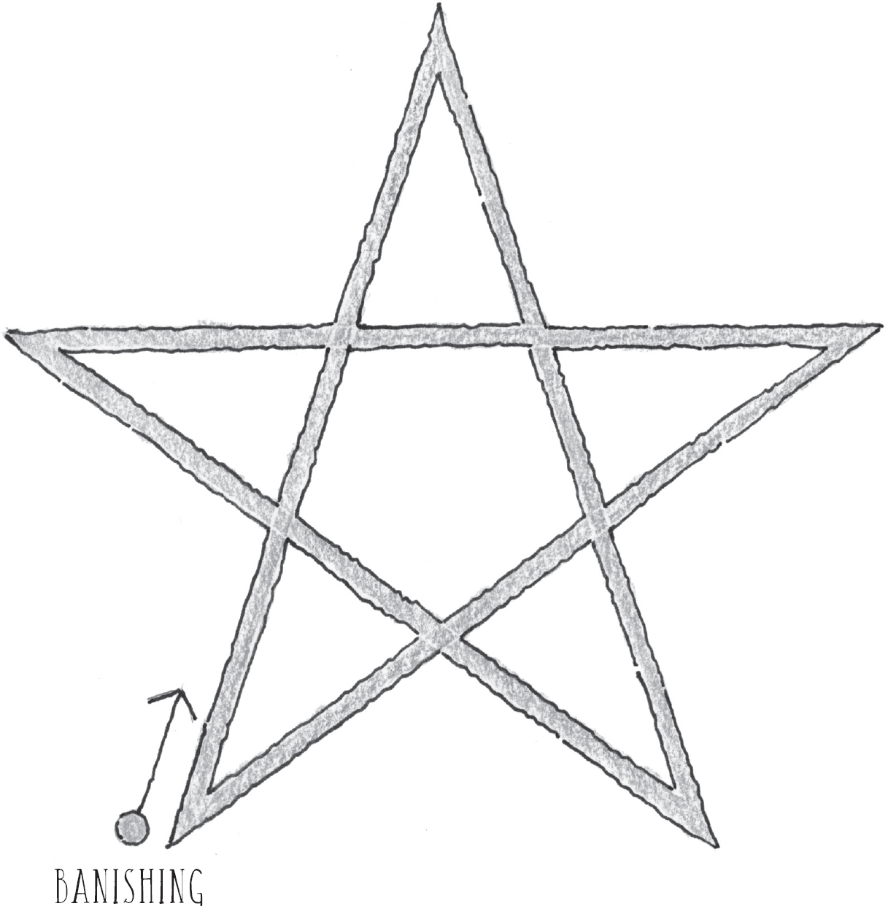
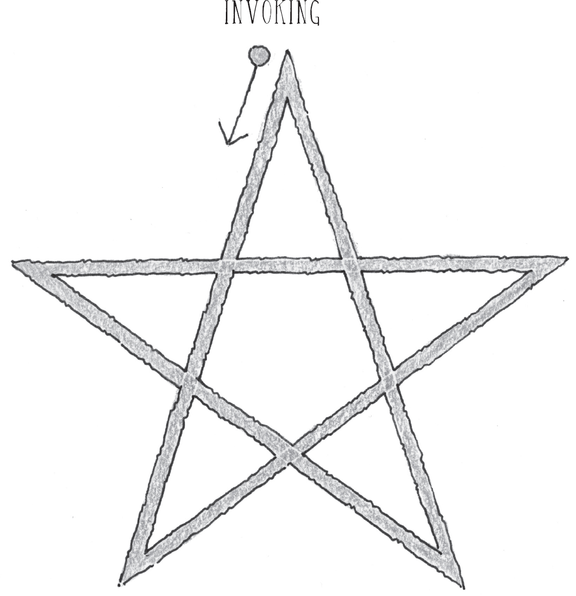

PART I AN INTRODUCTION TO MAGICK
2 What Magick Is and What Magick Isn’t
4 As Above, So Below: The Power of Attention
PRACTICE Directing Your Attention
PRACTICE Five Basic Meditations
7 Raising and Directing Energy
PRACTICE Raising Energy: Phase 1
PRACTICE Raising Energy: Phase 2
9 Personalizing Your Practice and Getting Started
PART III FUNDAMENTAL PRACTICES OF MAGICK
10 Practicing Variations of the Fourfold Breath
PRACTICE The Fourfold Breath: Quick Version
PRACTICE The Fourfold Breath with Visualization
PRACTICE The Fourfold Solar Breath Application: Version 1
PRACTICE The Fourfold Solar Breath Application: Version 2
PRACTICE The Fourfold Lunar Breath Application: Version 1
PRACTICE The Fourfold Lunar Breath Application: Version 2
PRACTICE The Fourfold Seasonal Breath Application
INTERLUDE Some History of Magick
PRACTICE Performing the Middle Pillar Ritual
PRACTICE Circulating Energy with the Middle Pillar
PRACTICE Qabalistic Cross Meditation: Version 1 (Traditional)
PRACTICE Qabalistic Cross Meditation: Version 2
13 The Lesser Banishing Ritual of the Pentagram
PRACTICE The Lesser Banishing Ritual of the Pentagram
14 The Lesser Invoking Ritual of the Pentagram
PRACTICE Circumambulating the Temple
PRACTICE Creating a Thoughtform
Talismans, Amulets, and Tattoos
PRACTICE Programming Your Water
There are few things in this world that would exist without the work, effort, and contribution of many people, and this book is no exception.
First and foremost, I’d like to thank my wife, Lorri. There would have been no way for me to finish this work without you being the foundation and support that holds me up. I’d also like to thank the Sounds True family for opening up to me and taking me in. You guys have fulfilled a lifelong dream for me and relit the fire inside me. Thank you, Tami Simon, for having faith in me. Thank you to Kriste Peoples for making a scary process significantly less so, and for serving as the midwife who coaxed this work out of me and into the light of day. Thank you to Robert Lee, my editor, for having patience with my scatterbrained writing method and for making my ranting more coherent and giving order to my chaos.
Thank you to Michele Anthony, my sister and family. Not sure I’d still be around without your love and support. You will always smell like Christmas to me.
Thank you to Johnny Depp for walking with me when I decided I needed to go back to Arkansas to ask them to stop the executions of potentially innocent men by the state. The demons didn’t loom quite so threateningly with you by my side.
Thank you to Eddie Vedder for the continued love you have surrounded me with both in prison and out. You are the best family that I could have hoped for in this world.
Lastly, by no means did I invent magick. I walk in the footsteps of some of the greatest magicians in history: Israel Regardie, Aleister Crowley, John Michael Greer, Donald Michael Kraig, Dorothy Morrison, Silver Ravenwolf, and Stephen Mace. You filled my mind with vision, my heart with hope, and my soul with the thrill of knowing what is possible. Thank you.
We connected by books.
Beyond the case of the West Memphis Three. Beyond the predicament.
Damien would give his wife Lorri a selection of books he had read and pass them on to me. I have many a volume with the name “Damien Echols” written on the inside of the spine. I always marveled at the wide range of subject matter and how a person on death row was able to provide me with so many novels I had never heard of before. Not only did I know Damien as an innocent man, but an educated one, as well.
On the rare occasion we could set up a phone call, it would start with how he was doing. We would discuss the case a bit, hopefully with some progress to report. Talk music, maybe. But then back to books — always books. It was always infinitely frustrating when a robotic, programmed voice would uncaringly interrupt our call to say, “You have thirty seconds.” It is virtually impossible to wrap up a deep conversation or thought in that limited amount of time. Yet another forced inconvenience that felt like torture.
When Damien was finally released in the summer of 2011, he bestowed upon me his well-worn prison ID badge. It had a wryly-placed sticker of Jack Skellington’s head positioned on top of Damien’s face. He also presented me with a small paperback book, Llewellyn’s Astrological Pocket Planner — a moon-phase journal of sorts. The once-empty boxes of dates and days were now filled to the borders with handwritten hieroglyphics — a record of his daily prison life in the form of complex symbols and notes.
Damien explained his system to me. The markings were there to document the number of times he had completed his self-prescribed rituals — meditations and energy work he used to protect himself against the negative energy of the people and place he was in. He was relentless. Knowing what a fragile state he was in the majority of the time, it is clear that these disciplines and practices played a key role in Damien being able to save his own life. It was survival. And the way this man took on that task required a mental toughness beyond what most of us can fathom.
He read. He studied. He ran in place for miles until his feet bled through his socks. Then he meditated. And read some more. All the while documenting.
The book you are now holding is a product of his journey and the rituals he used to persevere. Channeling pain, injustice, and incomprehensible brutality into a work filled with power and positivity is a gift he has made for us all.
I’m looking back at this journal and seeing each daily entry dense with code and mysterious, mystical information. I’m looking at his last entry from August 18th — the last day of over 18 years in an 8’ × 10’ cell. And I look at the empty unwritten fields of rectangles representing his future days of freedom. And though they are blank, I realize that he didn’t stop his defined rituals. Just that his real writing has now begun.
Eddie Vedder
Seattle, WA, 2018
My Story
For those of you who don’t know me or who have never heard my story, I want to start with a little background information about me and my journey. Although this is a book of practices meant to help you in whatever way you see fit, it’s also a travelogue of sorts, which means it’s full of details and detours that feel important to offer you on your own journey with magick. If you want a more thorough personal story, please read Life After Death and Yours for Eternity — it’s all in there. Anyway, for now, here’s a summary to help you get to know me a little better before we dive into learning and practicing magick:
I grew up extremely poor. On a regular basis, my family couldn’t afford food, new clothes, electricity, running water, heat — you name it. In the winter we froze and in the summer we burned. I was rarely clean and often hungry. On the one hand, you could say that my upbringing prepared me for the trials to come, but it’s no way for a kid to grow up, as too many children around the world well know. My parents — just kids themselves — didn’t seem to have any goals other than to make it through another day. They didn’t push me to better myself or do well in school, and I eventually dropped out just as they had. Even before that, I knew there had to be more to life — something higher and more meaningful — but I wasn’t sure what it was.
The only thing to read around our house were those cheap tabloids you see in line at the grocery store: the ones with headlines like “Half-Goat, Half-Boy Haunts the Banks of the Mississippi.” I felt dirty and degraded just looking at them. If you’ve ever picked one up, you know they have all these crazy ads at the back, and it was there that I came across an ad for a book on magick. Not just any book, but one that promised all the secrets of magick that had ever been recorded. I can’t describe the impact that had on me as a kid. To find out that magick wasn’t just something from a bygone age, that it wasn’t an arcane art lost in the sands of time, filled me with an unusual sense of hope and excitement. Magick was out there in the world, and I could learn and practice it! That realization was like a bomb going off inside me. From that moment on, I pursued magick as if my life depended on it (and, in fact, later it did).
I never got that book, no matter how much I begged. When you’re struggling to survive, you don’t have money to waste on things like books. Fortunately, libraries are free, and part of my way of coping with the degrading conditions of my childhood was to go to libraries and escape into the world of books. Horror novels had been my favorite genre, and I loved anything written by Stephen King. So, in the library, I began my study of magick and learned about the Hermetic Order of the Golden Dawn, an organization devoted to the study of metaphysics and all sorts of occult topics. More about them later.
Flash forward a bit. Some would call me a “troubled” teen — the usual stuff: high school dropout, long hair, repeated run-ins with the law. I had only one friend, Jason, and he was an outcast like me. See, we lived in a small, right-wing, fundamentalist town where kids who wore Metallica T-shirts and practiced ceremonial magick were shunned, damned, and accused of everything under the sun. So in a way it wasn’t a surprise when the cops showed up at the mobile home where I lived, handcuffed Jason and me, and took us to the station to be interrogated. They threw me in a cell about the size of a phone booth. I couldn’t sit or lie down; I had to stand up all night long. Occasionally a cop would come by to ask if I was ready to make my confession. I had no idea what he was talking about.
But I quickly learned. In the morning, a judge charged me with killing three 8-year-old boys as part of some satanic sacrifice. Someone else — not Jason — had admitted to being a part of the ceremony and had claimed that I was the ringleader. I read the transcript of the so-called confession. It was a bizarre, patchwork, horror-movie story that didn’t make sense at all, and it didn’t make sense because the police had cruelly coerced it out of a mentally challenged kid, Jessie, from my neighborhood. They psychologically tortured him; made him go without food, water, or sleep for over a dozen hours; and encouraged him to implicate Jason and me, which was all they needed to hear. Never mind the fact that Jessie’s description of the crime scene was totally off.
When I went to trial, the evidence presented against me focused on the music I listened to, my interest in magick, and my love of Stephen King novels. Of course, the jury took this as proof that I brutally murdered three young boys. They found me guilty of three counts of capital murder and sentenced me to die by lethal injection. I spent the next eighteen years and seventy-six days on death row, over half of that time in solitary confinement. For now, I’ll spare you the finer points of that time — the raw sewage, the blistering heat, the rats and mosquitoes, the isolation, and the daily beatings by the guards. The most important point here is that I survived. Not only did I survive — I got out.
How? The long story is complicated and well-documented elsewhere. In brief, I owe my life to DNA evidence, the HBO Paradise Lost documentaries, and so many people from around the world who protested on my behalf. But the short version, and the point of this book, is simple: magick saved my life. Magick was the only thing in prison that gave my life purpose and kept me sane. Magick was the only thing I had to protect myself with. And that’s what this book is about — the practices that kept me alive for nearly two decades on death row.
WHY LEARN MAGICK?
First of all, you’re already doing magick. With every thought, word, and deed you are influencing the world around you and determining what comes your way. Even when I was in solitary confinement waiting to be executed, I could still shape my reality to a large degree. Granted, most people do this unconsciously — they make things happen in their lives without giving it a second thought. The only difference between a magician and your average person on the street is that a magician does magick intentionally. In my opinion, if you’re constantly exerting influence on reality, it’s a good idea to learn how to do it well.
I think spiritual visionaries have always been powerful practitioners of magick — the prophets of the Old Testament, Jesus, Muhammad, Lao Tzu, and Gautama Buddha, just to name a few. These people devoted their lives to spiritual evolution for the benefit of everyone. When someone asked the Buddha, “What are you? Are you a god, or are you a man?” The Buddha simply replied, “I’m awake.” He meant that he had awakened to how the whole thing works — to the laws of karma and to the fact that reality isn’t just something predetermined that happens to us. He was awake to the knowledge that we can all shape reality and create better environments for ourselves. We can actually do something about it.
Call this something whatever you’d like. I prefer to call it magick.
Every person on this earth is born with an entire universe of potential in them. Most people never cultivate the seeds of that potential, so the seeds go to waste and the people go through life wondering what went wrong, or blaming the world for everything that did go wrong. Magick waters those seeds to make that potential stir, grow, and flower. It accelerates our spiritual and mental development in ways we never could have predicted. Our ability to shape our destiny and the world around us using magick is limited only by our own belief, dedication, and creativity.
Once you begin experiencing magick, you will never see life the same way again.
This book will not cover every technique known to modern magicians. No single book could ever do that. There are hundreds and hundreds of methods of manifesting your desires with magick, and this particular book is my offering to help get you started down the path with some basic practices. Some will appeal to you, others will not. However, I encourage you to try each of them for a short time, in order to find the techniques that most strongly resonate with you. I also encourage you to seek out other authors, practices, techniques, and approaches, because no single magician or text is the ultimate authority.
The goal of this book is to provide you with the opportunity to experience the magick that resides within you — within each and every one of us, without exception. These rituals and practices are merely guidelines — a place to begin. Once you begin experiencing magick, you will never see life the same way again. You’ll grow increasingly aware of the currents of energy active all around you, and the interactions between energy and the material realm. And you’ll discover that, contrary to what you may have been told, there are no limits.
But I’m not here to tell you what to believe, and I’m not here to convert anyone. That’s not my job. My job (if you could call it that) is simply to show you what has worked for me through thick and thin, both today as a free man and during those years that I spent in hell. In that way, I guess you could say it’s my job to help. And my hope is that you’ll find these practices as useful in your life as I have found them to be in mine.
WHAT MAGICK IS AND WHAT MAGICK ISN’T
Let’s start with the title of this book. Why is magick spelled with a k, and what’s so high about it?
In this context, magick is spelled with a k to differentiate it from parlor tricks and illusions you see on the stage. Magic without the k refers to David Blaine, Criss Angel, and David Copperfield, entertainers in tuxedos who pull rabbits out of hats and cut scantily clad assistants in half. But magick is a specific spiritual tradition — an amalgamation of Gnostic Christianity, esoteric Judaism, Taoist energy practices, and often forms of divination such as the Tarot or the I Ching. Magick refers to a path of transformation and evolution with its own set of practices and a long, complicated history.
And this book is about high magick because it’s mostly about spiritual growth, energetic practices, ceremonies, rituals, and invocations. It’s a simple distinction to differentiate it from low magick, which focuses primarily on earthly wants and needs. In other places, you’ll see these two types of magick called ritual magick and natural magick (or witchery), respectively. In high magick, you’ll find lots of visualization, breath work, energy manipulation, and so on. Low magick, by contrast, uses the inherent natural energies of particular objects (herbs, stones, crystals, etc.) to bring about certain results. These are things these objects do on their own without any help from us.
Another way to categorize magick is in terms of theurgy and thaumaturgy. Theurgy is the process of aligning ourselves with the source of creation in order to become more like it. In other words, more like God. It’s the ultimate form of self-improvement, and what various traditions refer to when they speak of achieving enlightenment, experiencing nirvana, or entering the gates of Heaven. Theurgy means refining your energy until everything that vibrates at a “lower” frequency gradually fades away until you reenter the state of your original condition — the state in which you existed before the Fall spoken of in the biblical story of Eden. On the other hand, thaumaturgy refers to practical magick, which is about improving your life on the material plane.
Some “spiritual” people frown on thaumaturgy as being materialistic and ego driven, which has always struck me as foolish. The physical level of reality is no less sacred or holy than more subtle levels of reality, and it’s quite difficult to focus on becoming one with the universe when your stomach is growling or you’re concerned about your physical safety. In my view, there’s absolutely nothing wrong with doing magick to improve your life on the material plane. There are just as many lessons to be learned from the physical realm as there are from the celestial, astral, or etheric realms. We are here to experience mastery of every aspect of our existence, not to avoid it or escape it. Being poor, sick, and lonely doesn’t make us any more holy than being prosperous, healthy, and surrounded by those who love us.
However, I do want to stress that the primary reason for practicing magick is transformation and to become “more than human,” to borrow a phrase from the Hermetic Order of the Golden Dawn.
While we’re on the topic of categorization, we might as well talk about black magick and white magick at this point. We all love duality (myself included); we want some things to be right and some things to be wrong. Even though our lives are complicated and multicolored (or shaded with various gradations of gray), we still hold tightly to notions of black and white. Of course, you could say that some acts of magick are entirely “white” (for example, invoking the purest forms of divinity for the highest reasons) and some are clearly “black” (say, causing pointless harm on innocent people), but most acts of magick are somewhere in the middle of the spectrum (say, gathering together enough money to pay the rent or finally gaining a romantic partner).
You can’t do magick to affect someone else without changing yourself first.
Some people would say that black magick is anything that attempts to influence other people, but that’s a tricky distinction. If that’s how we define it, then we’re all expert practitioners of black magick — parents attempting to get their children to bed on time; spouses trying to win the argument; every advertisement for the latest movie, car, or fashion craze. Persuading others is just a part of life, but that doesn’t make us mages in the black arts.
You can’t do magick to affect someone else without changing yourself first. As you’ll see later in the practice section, when you invoke a pentagram, what you’re actually doing is magnetizing your own aura in order to attract whatever you want to manifest. So bringing in the energy of Jupiter to attract prosperity is a good idea, whereas gathering Saturn energy to hurt someone else means that you’re bringing that power into your own aura, and you can’t help but absorb some degree of it. It’s like putting poison in your mouth so that you can spit it at someone else; more than likely you’re going to end up swallowing some of it yourself. Magick means making intelligent choices, and few problems require resorting to maliciousness. For example, you could send negative energy toward someone who’s been slandering you, or you could simply use magick to protect yourself from their lies.
In truth, magick is neither black nor white. Magick is energy, just like gravity or electricity. You could even say that magick is a tool, just like a hammer. Now, you could use a hammer to assault someone and hit them over the head, but you could also use it to build a house in order to give a family much-needed shelter. Personally, I think the latter use is better suited for the tool, but in either case it’s the person wielding the hammer who determines its purpose, and it’s the same with magick.
Most people have certain ideas about what magick is and what it’s not, based entirely on fictional sources. Usually they acquire these ideas from horror movies, fictional novels, or people with severely restricted ideas about Christianity and what Christ was all about. So part of what I’m hoping to do is demystify magick a little bit so that others can experience the same joy and fulfillment that magick has brought me and countless others. In truth, there’s nothing dark, scary, or threatening about magick.
I began a social awareness campaign called Magick Revolution when Menton Matthews, David Stoupakis, and I held an art exhibit on the Salem witch trials, in which innocent people were tortured and executed after being accused of practicing magick. It’s a subject that hits close to home for obvious reasons. My love of magick was used against me in the worst way possible. The prosecutor in my trial employed the incredulous logic that anyone who practices magick must naturally be a Satanist, and anyone who is a Satanist is just itching for the chance to commit horrendous murders. The jury ate it up. My trial was simply a formality standing between me and the death sentence. So Magick Revolution is an ongoing effort to change the way that people view magick and to introduce them to this incredibly beautiful spiritual tradition that is no more dark or demonic than any other path.
A famous magician once called magick the “yoga of the West.” When we think of yoga, we mostly think of people lying on the floor in unusual and difficult physical poses, but that’s only a small portion of what yoga is all about. In fact, the original goal of yoga poses was to prepare practitioners for more advanced forms of energy work. If your body and mind are healthy, then you’ll live longer, and if you live longer, you have more opportunity to engage in spiritual transformation. The same could be said for Taoism. And like yoga, magick is more than a set of abstract theories and concepts. Magick involves an actual tradition with techniques that are intended to cause definitive changes. Although everyone performs magick regularly without even knowing it, Hermetic Esotericism (a fancy way to talk about magick) is a Western tradition that has never gained the acceptance that yoga has.
Magick is nothing like you thought it was going to be.
Magick’s lack of widespread approval is due, in part, to the fact that practitioners of magick in its various forms were seen as a threat to the early Christian church, and that perceived threat continues to this day. Magick is not a path for followers; it is a path for questioners, seekers, and anyone who has trouble settling for dogma and preformulated answers. Magick is for those who feel the desire to peel away the surface of reality and see what lies beneath. Like various persecuted forms of mysticism, magick promotes direct contact with the source of creation. Institutions that are invested in societal control don’t like this, of course, and do what they can to get rid of anyone and anything that might challenge them. Magick doesn’t rely on dogmatic threats and dubious prophecy. If a technique works, then it’s useful and true. If it doesn’t work, you scrap the technique and try something else. In this way, magick is more like Eastern traditions. For example, in the Kalama Sutta, the Buddha says, “Try this path and see if it works. That’s the only way to tell if something is worthwhile.”
In a discussion about magick, a friend of mine once said, “I want to believe, but I can’t make the leap into actually believing.” I thought that was a profound thing to say — a lot of people feel that way but can’t quite articulate it. I responded as I often do when this topic comes up: Magick isn’t some kind of belief system that you have to subscribe to. It’s a series of techniques, and these techniques work regardless of your belief in them. So I encourage you to try the practices in part II of this book and see for yourself.
Before we go on, I want to circle back and get clear about what magick is, so here’s a simple breakdown for you. Magick is a way of being and seeing that involves particular techniques that perform various functions:
• to manifest our desires
• to shield us from external sources of energy (mostly, negative)
• to activate our internal energy centers
• to attune us to the currents of energy active in our lives, the world, and the larger universe
Magick is both an art and a science. Some techniques are known for providing specific effects, but results vary, as they say. Because every person is unique and their relationship with energy is different, it’s essential to try the practices, really delve into them, pay attention to what happens, experiment, and tweak the practices accordingly. In the beginning, you’ll probably find that magick is nothing like you thought it was going to be. Just try to remain open to the process and move forward with an open heart. One of the surprising things you’ll discover is that magick is sentient. It can make itself known to you, but only if you practice long enough to refine your senses to the point that you can actually receive the messages it’s trying to send.
Someone recently asked me what role love plays in magick. For me, magick is love. Whenever you bring in divine light to manifest one thing or the other in the world, what you’re actually doing is pulling in love. This is why real magick is never a dark or scary thing, because the very act of practicing magick brings you into harmony with the Divine, no matter what name you call it. When you practice magick in this way, you become a better person, and that makes the world a better place. Helping other beings is what love looks like in action. And practicing magick in a way that brings more divine energy into your life means that you help everyone you touch. When you send a thoughtform to someone — say, someone close to you who needs healing of some sort — what you’re actually sending them is love in the form of divine light. And the reason you do so is to make them whole, to make them happy.
What we normally think of as love is actually nothing more than attachment. In the core of our being, we know that true love is unconditional. True love doesn’t waver or disappear if our loved one screws up or goes off the rails. Going forward, it’s important that you distinguish attachment from love. The foundation of magic is all about living in harmony with love, manifesting love, and applying that love in the world. In this way, we become copartners with magick in the ongoing act of creation.
Finally, magick is a journey. It’s a continuously unfolding path that has no end. You can study and practice magick for the rest of your life and you will still never learn everything that it has to teach you. If you dedicate yourself, you can continue to grow wiser and stronger until the day that you eventually leave your earthly form and graduate to a more refined realm of existence.
The average person is pulled to and fro throughout their entire life by energy currents they can’t even perceive, much less exert control over. This continues even after death, and into the process of rebirth. We undergo this process over and over in an attempt to equilibrate and balance our energy. If our life experiences cause us to lean too far one way, then in our next cycle of rebirth we will try to compensate for the imbalance by pulling toward the opposite end of the spectrum. For example, a person who wrestles with being overly selfish in one life may attempt to regain energetic balance by becoming overly generous in their subsequent life.
Magick is a way of achieving that balance in a single lifetime, so that the process of rebirth is under our control. The most powerful magicians become like the Buddhist bodhisattvas — no longer enslaved to the wheel of karma, but capable of choosing when and where to manifest for the highest good. All of our memories and experiences remain intact so that we can apply them going forward, as opposed to forgetting everything and beginning from scratch with each round of rebirth. In magick this is called the Great Work, and it is each magician’s job to complete it. Being able to manifest our desires and shape the world around us in this lifetime is seen as an added bonus of the process — not the end-all goal.
Ideally, you have a better understanding now of what magick is and what magick isn’t. I’m hoping that something here has ignited some curiosity or even passion in you, and that you’re ready to get started.
WHY SPELL BOOKS DON’T WORK
Since I was a child, bookstores and libraries have always been special to me. They feel like storehouses of wisdom, and I’m amazed that for a small fee I can purchase a condensed version of someone else’s life experiences and hard-won lessons. Among other things, through other people’s books I can learn to avoid the mistakes they made and can share in their victories by emulating the paths they took to success.
When I’m in a bookstore or library, I go straight to the esoteric section. As you might guess, I’m looking for new books on magick. I want to see what other people are doing — maybe they’ve discovered something new, or perhaps they’ve developed some new variation on a method I’m familiar with. What I’m really hoping to find is someone who has delved into a new realm, or at least one that’s new to me. But those types of books are few and far between.
Mostly what I come across are spell books with titles like Love Spells or Prosperity Spells or something similar that offer the promise of obtaining something through magick. They’re essentially recipe books that tell you to collect a certain list of items, follow steps in a particular order, and you’re good. Well, when people take these books home and try them out and nothing happens, they think that magick doesn’t work. They followed the instructions but they didn’t get what they were hoping for, so they conclude that magick is just superstition or just one more form of blind belief.
I probably shouldn’t say that spell books don’t work. It’s more the case that spell books don’t work if you lack the proper understanding of how magick works and you haven’t committed yourself to some crucial foundational practices. Unless you can direct raw power into spells, those books are worthless. You have to be able to put energy and intent and focus into your magick. Otherwise, spells and rituals are merely words.
This part of the book is about getting clear on what the preliminaries are. These aren’t things you do a couple of times and call it good — they’re essential every time you practice magick. They’re what makes your magick work.
When I first became serious about studying magick, I came across elements that felt completely foreign to my life: planetary energies, angels, gods, thoughtforms, or dimensions of reality. On my path, there was a lot of memorization involved, and the rituals felt so strange and complicated. It was overwhelming and confusing, to say the least. How was I supposed to apply any of this stuff to my experience of daily life? Even when I encountered the foundational practices of meditation, visualization, and breath work, I had no idea what to do with them.
In the beginning, it can be frustrating to figure out how all of this applies to real-world situations. If that happens to you, just remember that high magick is fundamentally about energy. Everything is made of energy, and we can shape and use energy to our benefit. Remember: you’re already doing magick all of the time. I’m just presenting some ways to help you get better at it and jump-start the process.
AS ABOVE, SO BELOW
The Power of Attention
As above, so below; as within, so without. Practitioners of magick have been repeating this axiom for hundreds (and maybe thousands) of years. But what does it really mean? Basically, it says that everything we do on one plane of reality has an effect on other planes. It’s a profound saying that describes how magick works. For example, when we learn to change and direct our energy, we can alter our relationship to the physical world in addition to how it appears and reacts to us.
As above, so below is not a teaching you’ll understand all at once. But as you contemplate this phrase and practice the core rituals of magick, you’ll set in motion a series of epiphanies and realizations that will deepen your understanding of magick and reality itself.
Thoughts and emotions alter our physical bodies and surroundings.
Most people think that reality is merely what they can see and touch in front of them: their bodies, clothes, cars, televisions, and other possessions. But practicing magick requires understanding that all of this physical stuff is just one sliver on the spectrum of reality. There’s so much more going on than meets the eye. Take thoughts, for example. You can’t see them, show them to your friends, weigh them on a scale, or measure them with a ruler, yet we all know they exist. If someone told you that you don’t have thoughts, you’d say they were crazy. Thoughts aren’t tangible like things on the material plane are, but they still exist — albeit on a more subtle, ethereal level of reality.
But thoughts do have a profound effect on the material plane. In a measurable way, thoughts and emotions alter our physical bodies and surroundings. Countless studies have been done measuring how stress (or, more importantly, how people think about their stress) relates to physical health. This is just one example of how one layer of reality affects the others. In this particular example, the influential relationship can also move in the opposite direction: physical exercise changes your mood and has a direct impact on your perceptions and thoughts.
The week I walked off of death row was the most stressful in my life. I lived with a constant fear that it wasn’t going to happen. The prosecutor’s office and my attorneys were in heated talks about my deal. The prosecutor was doing everything he could to prevent being sued for sending an innocent man to death row, and my attorneys were doing their damnedest to help me survive the political maneuvering of the state. If the deal hit a snag of any sort, I knew I was going to die in my cell.
For several days, the stress was so crushing that I developed flu-like symptoms and broke out in painful sores on the inside of my mouth. Medical science has engaged in lots of research linking stress and its effects on the immune system. Another way of viewing this phenomenon is to understand that our thinking changes our energy field, and our energy field shapes our experience of our physical body. A large number of techniques practiced in magick are devoted to strengthening our energy field and understanding our energetic anatomy. Among other things, the stronger our aura, the more powerful our magick.
In magick, there’s one level of reality that we pay particular attention to, and it goes by many names around the world. The Chinese call it chi or qi, the Japanese say ki. In the ancient Jewish Kabbalah, it’s called ruach, and the Hindus refer to it as prana. In the fictional Star Wars universe, we know it as The Force. I just call it energy, because the word comes with less baggage and cultural nuance for me. Plus, there’s no particular religious significance to the word. Even scientists (especially physicists) talk about energy.
We are constantly interacting with other forms of energy — the energy of other people, places, and things. We absorb energy that is left behind after certain events have occurred. We are always bombarded by energy even if we don’t realize it, and it has definite effects on us. In some cases, it can pollute our energetic field and clutter it with harmful debris that eventually turns into blockages. We take in energy through all kinds of different methods — from the food we eat, the water we drink, and the people we spend time with. Someone once said that we become a combination of the energies of the four people we spend the most time with. That’s why it’s important to surround yourself with people who teach you and make your life better. Also keep in mind that success and failure are both energies. If you surround yourself with people who are happy and successful, you can absorb and benefit from their positive energy.
Like I mentioned above, each level of reality affects the others. Thoughts stir up emotions, and emotions determine how much energy you direct toward whatever it is you’re thinking about. And the physical plane is where we can see the culmination of the process as energy manifests in various ways. This is where the power of attention comes in.
Have you ever known someone who wallows in negative thinking to live a positive life? Our lives are largely determined by where we place our attention — in other words, our lives depend on how we direct our thoughts and the energy we invest in those thoughts. If you spend your time focusing on negative results, your life is probably not going to be very happy. And if you direct your energy into positive endeavors, chances are your life will be more positive than not. Of course, magick involves a lot more than The Power of Positive Thinking, but it’s important to understand just how powerful our thoughts are. If we worry too much about catching the flu — visualizing how miserable we’d be lying in bed, aching, fevered, and just feeling awful — we’re putting a lot of energy in one particular direction, and we probably shouldn’t be surprised if we end up getting sick. As Bob Proctor, an expert on the law of attraction, says, “Thoughts become things. If you see it in your mind, you will hold it in your hand.” If you want a simple way to start doing magick, just change the focus of your thoughts and see what happens.
At some point, my wife and I began a particular practice to get me off death row. We each repeated a version of the following affirmation at least once every day. Here’s mine:
May I be home, free from prison, living happily with my Lorri.
May it come about in a way that brings harm to none and is for the good of all,
and in no way let this reverse or bring upon me or my loved ones any curse.
We concentrated on this outcome every single day, without fail. And within one year of starting this practice, I walked off of death row.
One thing I learned was to pay careful attention to what you ask for. Know exactly what you want and phrase it accordingly, because most of the time magick is going to give you exactly what you ask for. And what you ask for might not be the same thing as what you had in mind.
Afterward, Lorri and I realized that we didn’t say, “Let me be found innocent” or “May Damien have a new trial” or “Let the authorities catch the person who actually committed the murders.” All we said is some version of what I wrote above, and that’s exactly what happened.
It’s also important to point out here that the deeper parts of our psyche don’t understand words. That’s not how they communicate. Fundamentally, those aspects of our consciousness use images, and if you keep reinforcing a particular image — say, lying sick in bed — that’s what it sees, not the story behind the image. That part of you isn’t so good at detecting preferences; it just sees the picture. In one way of speaking, it starts running a program based on the mental image, which makes it more likely that the image will manifest in the material plane. And before you know it, you’re lying sick in bed, exactly the way you didn’t want to be.
I have a piece of artwork above my bed to constantly remind me of how powerful attention is. It’s a print of the painting Daniel in the Lion’s Den, from the biblical story in which Daniel was thrown into a dungeon full of lions. The lions stand around him, eyeing him hungrily, but Daniel doesn’t even look at them. Instead, he stares up into a shaft of light coming down from somewhere above with an expression of profound peace; it’s as if he doesn’t even know that he’s surrounded by lions. The image means a lot to me. It reminds me not to allow negative circumstances to pull me down and to never wallow in misfortune, even though the world might say it’s okay to do so. I want to emulate Daniel and stay focused on the light, no matter my situation — even when I’m surrounded by lions. All that matters is that light — the very light we shape and direct when we practice magick.
PRACTICE » DIRECTING YOUR ATTENTION
This is the first of several exercises in the book. Each one either builds off the exercises that came before it or sets the stage for more advanced work, so try to spend adequate time on each.
This one is fairly simple. It’s about recognizing negatively framed thoughts and revising them in such a way that your consciousness aligns with positively framed versions of the same thoughts. Here are some examples of what I mean:
NEGATIVE VERSION |
POSITIVE VERSION |
I really hope I don’t get sick. |
I’m glad I’m healthy. |
I have to dig myself out of this hole. I just get farther and farther behind. It seems like it gets worse and worse. |
It’s been hard, but I’ve made it through multiple challenges. I can face these obstacles and succeed, just as I have before. |
I don’t want to get into another argument about this topic with my partner. |
I can talk about this in a way that helps things toward a better resolution. |
I can’t lose weight. It’s too hard. |
Losing weight is difficult. If I put my mind to it, I can learn how to do it better and eventually arrive at where I want to be. |
I’m not smart enough. I’ll never figure it out. |
There’s something here that I’m not understanding. I can identify what that is, find out what’s missing in my knowledge, and either learn something new or ask someone to help me solve this problem. |
Some of these examples might not apply to you at all, but maybe they’ll give you an idea of what I’m talking about. This exercise actually has two parts to it:
1. Reframing Notice the negative thought, and create a positive spin on the same issue.
2. Visualizing Once you come up with a positive version of the thought, see what pictures you can add in your mind. For example, if you tell yourself, “I’m glad I’m healthy,” visualize yourself smiling, full of health, and feeling good in your body. And if you say something like, “I can face these obstacles and succeed, just as I have before,” remember a couple of things you’ve done before that came out well, despite how challenging they were. See yourself moving through the problem, recall how you made it through, and see yourself smiling when you got to the other side of the challenge. (It doesn’t matter if you actually smiled when it happened — it’s just a visual marker to remind yourself of your strength and resourcefulness).
Try this reframing and visualization for a week or so. You don’t have to scrutinize every little thought that comes into your head, and this exercise isn’t about banishing all types of negative thinking, which probably isn’t likely for most of us anyway. Here and there, a couple of times a day, just notice a negatively framed thought and think about what the flipped version of that might be. Add some mental pictures that go along with the statement, and notice if this exercise or this way of reprogramming your mind to focus on attaining positive results has any noticeable effects on your daily life.
TRAINING YOUR MIND
A couple of years ago I was walking down the street in New York City. I was at one of the lowest points in my life, dealing with a lot of PTSD after getting off death row. I passed a bicycle shop, and without even thinking about it I walked in and started looking at the bikes.
When I was a kid, I loved riding bicycles. But when I got out of prison and moved to New York, I was pretty certain that my biking days were behind me. Can you imagine riding a bicycle down the streets of New York City? Only the most hard-core people do that kind of thing: dodging countless cars, trucks, motorcycles, taxis, and pedestrians. When you see cyclists weaving through that river of chaotic activity, it’s hard not to imagine that they have some kind of death wish.
Anyway, I entered the bike store and looked at all of those miraculous, beautiful machines. At that moment, they were more than modes of transportation for me — they were works of art. The wonderful colors, the intricate geometry . . . they were objects to admire and appreciate more than things meant to be ridden.
So I bought one. Without even thinking about it or considering how daunting it would be to ride on those streets, I bought a bike, rolled it out the front door, and hopped on. That first trip was absolutely horrifying. I can’t describe how nerve-racking it was. Within minutes, my clothes were soaked with sweat, my heart was hammering at an unbelievable pace, and I was almost spent with adrenaline. But that first ride was also exhilarating. It felt like I was on a rollercoaster, but one I could actually influence and control. It was good medicine for me at the time, and I was immediately hooked. I took a ride almost every day, and my confidence began to grow — along with my skill and dexterity.
The point of this anecdote is to talk about meditation, because I quickly realized that biking on the streets of New York City is a particular form of practical meditation. In the West, we have this idea that meditation is passive. You sit cross-legged on the floor on some overpriced cushion and just peace out for a while. People might do this kind of thing, especially in North America, but that’s only one type of meditation among the hundreds or thousands that people have practiced for millennia.
Meditation empowers you to notice where your attention is going and to steer it accordingly.
Most people aren’t aware of just how much they’re missing from life. They’re distracted by so much stimulation, trapped in loops of internal dialogue, reliving past events, and feeling anxious about what’s going to happen tomorrow. And it’s so easy to carry on like this until the grave, never actually experiencing the richness of life, of the present moment. Meditation changes all of this. It enables you to pay attention to the present moment and train your mind to do what you want it to do. Meditation enhances your natural ability to be alert and aware. Try biking down Fifth Avenue absentmindedly. You can’t do it (well, not for very long). Riding a bicycle in that situation requires incredible awareness, and if you’re not present for every single second of that ride, you’ll end up beneath a city bus before you know it. Additionally, a bicycle will actually drift in whatever direction your attention is focused (remember the chapter on the power of attention). And if you’ve ever learned to drive a motorcycle, you know how important this principle is. If you look at the tree you’re about to hit instead of the path you need to take to avoid that tree, you’ll hit the tree every time. It’s the same reason why they train race-car drivers to never look at the wall. The drivers learn to focus their attention on the track and all of the action going on around them.
So this is why meditation is important. If you’re not aware of precisely where your attention is, it’s kind of hard to change that focus. Biking in New York is a demonstration of the primary principles of magick in real time. Meditation empowers you to notice where your attention is going and to steer it accordingly. In magick, we steer it toward what we desire instead of on that which we fear.
Most people think that the opposite of faith is disbelief. It’s not. The opposite of faith is fear. Fear is the process of placing energy toward the outcome we most want to avoid. Faith, on the other hand, means directing our focus toward that which we want to manifest. We feed what we fear, just as we feed what we hope for and desire. Meditation helps us see exactly where we’re putting our energy and enables us to change the blueprint of our attention on the astral and mental planes. When we do that, we make it far more possible to manifest what we want on the material plane.
PRACTICE » FIVE BASIC MEDITATIONS
Some of you may have years of experience meditating. If that’s true for you, just skim over the suggestions below to see if there’s anything new to try. We’ll get into more advanced meditation practices in part III of the book, beginning with the different versions of the Fourfold Breath.
And for those of you who might not have meditated much — or maybe it’s been a really long time since you last did it — try one or more of these options:
1. Standing Meditation It’s easier to do this meditation without your shoes or socks on. Find a quiet place to stand, relax your shoulders, and close your eyes. Feel the sensations involved with having your bare feet on the ground. What do you notice about that? Are there certain areas of your feet that are more in contact with the ground? Notice any differences in pressure and temperature. If you don’t notice much, feel free to rock forward on the balls of your feet and then back toward your heels a little so that you can detect the changes in the different sensations. Note as many details as you can.
2. Walking Meditation These instructions are almost identical to the Standing Meditation, with the important exception of keeping your eyes open while you walk. You can do this alone or in a place with others where you won’t be disturbed. If you do it by yourself, find a quiet room that you can walk back and forth in, somewhat slowly, but not exaggeratedly so. Feel the various sensations of your feet as they rise and fall in your normal way of walking. If this isn’t too difficult for you, also turn your attention to what your legs feel like as you move around the room. Pay attention to the sensations in your ankles, your calves, your knees, and your thighs. See how detailed you can make your attention, and note what comes up.
3. Listening Meditation To do this meditation, find a place to sit that offers various sounds: outside in a park, in a restaurant, or in an airport while you’re waiting to board your flight. You don’t have to close your eyes for this practice, although some people find that it helps them focus. Listen to the sounds happening all around you. Take a few moments to distinguish them and pay attention to the contrasts — some sounds are nearby and some are far away, some are louder than others, some are pleasant whereas others are grating. Take just a few minutes to appreciate the variety of sounds all around you, then land on one particular sound for a while. Focus on that sound for a couple of moments, explore what it’s like (constant, high in pitch, machinelike?) and then move on to another in the same way.
4. Looking Meditation It also helps to be outside for this one, although you can do it in a large room just as well. Pick something relatively close to you — a cup on the other side of the table from you, or maybe a nearby tree in the park. Check out all of the visual details you can find — color, shape, pattern, shading, or anything else you can see. Spend a couple of minutes on this object, and then turn your attention to something farther away, something yards away from you. Pay attention to this object in the same way, noting all of the different details, and after a couple of minutes turn your attention back to the original object you examined. See if you can note any new features that you didn’t notice before.
5. Eating Meditation This particular practice doesn’t take much more than slowing down and paying attention to the process of eating your next meal. You might want to do this alone and when you’re not in a particular hurry to get to something else. For a lot of us, eating has become somewhat mechanical and speedy, and this meditation will help you appreciate the complex and delightful process of consuming your food. Just slow down, really focus on all of the textures and tastes you come across, and feel what it’s like to swallow your food. The same meditation works with drinking juice, soda, or a glass of wine, but I don’t recommend trying it with more than a single glass of your favorite alcoholic drink — it gets hard to pay attention relatively quickly.
These are all helpful meditations to add to your life, regardless of what other spiritual practices — including those coming up later in the book — you do on a regular basis. You’ll probably detect that all of these are sensory-based practices, and as such they tend to be active and tangible meditations, which is a great way to warm up to some of the more complicated practices you’ll be doing.
Give one or more of these a shot for a week or so, trying it out at least once daily. Of course, you’ll notice more results in your mental clarity and alertness if you do it more often than that. For now, do what you can and see what happens.
THE MAGICK OF VISUALIZATION
The most important tool we can use to accomplish high magick is our imagination. When magicians talk about visualization, that’s essentially what they’re talking about. People often remark that they’re not good at visualizing — I hear it all the time when I’m teaching classes in magick. Either people feel that visualization is totally out of reach or they think they’re horrible at it, and neither is the case. Just like doing magick, you’re visualizing all the time.
Every time you call up a childhood memory — say, something you and your best friend did in high school or your favorite Christmas morning — you’re visualizing. And every time you think about what you’re going to do in the future — what you want to make for dinner, your weekend plans, or that big trip you want to take some day — you’re visualizing, too. Any time you imagine something that isn’t happening right now in your small part of the physical world, you’re visualizing. And that’s the very essence of magick.
Visualization isn’t necessarily visual. Just because you can’t see something in detail doesn’t mean you aren’t visualizing it. For some people, visualization does involve sight, either with the mind’s eye or the physical eye, but visualization takes a lot of forms, with or without visual imagery. For many people, visualization involves a completely different sense altogether.
If you can remember the aroma of your grandmother’s perfume or the way that her house smelled when she baked a batch of fresh cookies, you’re engaging a form of visualization rooted in scent. And if you can recall your father’s voice when he called your name, you’re visualizing with sound (this is the basis for clairaudience). Other people visualize by means of intuition or a vague sense of simply knowing something. It’s what we’re talking about when we refer to having a “hunch” about something.
PRACTICE » VISUALIZATION
This exercise isn’t so much about practicing visualization as it is understanding the ways in which your imagination manifests. This practice doesn’t take very long, and it’s a great way to warm up for the extensive visualizations you’ll be doing later. It will help to use a notebook or some other means of writing down the details for this practice, and it’s okay if some parts are difficult to describe in words — feel free to draw, paint, or use any other medium to convey the ways in which your imagination works.
1. Think of a childhood memory — a particular Christmas morning, a special moment with a grandparent, playing with a childhood friend you haven’t seen in years or decades — and imagine the details of that particular scene as clearly as possible. Describe everything you can remember: the smells, what the scene looked like, anything you heard, who was there, and how you felt inside (happy, scared, warm, etc.). Take as long as you need to express what you remember.
2. Now imagine a person currently alive who is important to you but who isn’t present with you right now (that is, they’re in another part of the city, state, or country). Try to picture what they’re doing right now as you’re doing this exercise, and note all the details that come to you. Where are they, exactly? What does the place look like? How are they feeling about where they are and what they’re doing? What emotions do you experience about them as you’re imagining them? What sounds and smells do they experience in this faraway place? Again, jot down everything that comes to you.
3. Finally, think of yourself in the future. If you consider yourself a young or middle-aged person, imagine what you’ll be like when you’re in your seventies or eighties. And if you’re already in your seventies or eighties, imagine your life ten, twenty, or thirty years from now. Take a few moments to visualize the scene. Where are you? How different do you look from how you appear today? How does it feel to be so much older? What are the sensations that come to mind as you imagine this future self? See how detailed you can get as you write all of this down.
4. Look at your notes. Compare what you wrote for all three exercises. Did you record mostly visual details, or emotional/psychological aspects of the scenes you imagined? Examine the details for common threads and themes. This will tell you a lot about your particular way of visualizing — or at least how you’re visualizing today — and the way that you’ll wield this incredibly important tool in the work to come.
RAISING AND DIRECTING ENERGY
I want to offer one more preliminary exercise to prepare you for the fundamental practices you’ll be doing in part III. This is a version of one of the most widely taught exercises in magickal traditions, because it allows beginning students to experience subtle energy for the first time, and it’s even common for new practitioners to detect energetic sensations on their first attempt. This initial hit is important. The more you’re aware of what energy feels like, the easier you’ll find it to work with.
Additionally, for people who are a little skeptical or think of energy work as something strange, or even for those of you who might be operating on mere hope that magick is possible, this exercise will provide an experience that will show you that working with energy is actually straightforward and tangible. It’s really no more unusual than most of the things you do over the course of the day — especially when you remember that you’re already doing magick all the time. Once you experience this firsthand (if you haven’t already), something crucial happens in the psyche and you’re no longer as hindered by disbelief. As your confidence in energy work grows, so too does its effectiveness, which makes whatever magick you choose to perform that much more powerful.
The following exercise for raising energy has two phases. Do Phase 1 for a week or so before moving on to Phase 2.
PRACTICE » RAISING ENERGY: PHASE 1
1. Rub the palms of your hands together. Do this vigorously — the way people rub their hands together when it’s cold outside.
2. Fairly soon (twenty seconds or so), you’ll feel your hands growing warm. That heat comes from the friction you’ve created, of course. As anyone who’s had to sit through elementary school science knows: heat is energy. In fact, everything on the material plane contains heat energy.
3. Separate your hands about six inches apart, palms facing each other. Close your eyes and feel the heat contained in that space. Note any fluctuations in temperature or movement.
4. If at any time during this practice you need to generate more heat with your hands, return to step 1 and pick up where you left off.
5. Experiment with the sensation. Move your hands a little farther apart and a little closer together. What’s that like? Try to mold the energy into different shapes. Hold it in your hands as if you were gently squeezing a water balloon that you’re trying very hard not to burst. What happens when you add that visualization to the exercise?
Try Raising Energy: Phase 1 several times a day for up to five minutes or so each time. Just find little spaces in your day to stop and feel this form of preliminary energy work. You can do this for longer than a week before moving on to Phase 2 if you’d like, but I highly recommend giving yourself at least seven or eight days of this practice. It’s a way to familiarize yourself with the fundamentals of energy flow.
PRACTICE » RAISING ENERGY: PHASE 2
If you’ve spent adequate time on Phase 1, by now you’re more proficient at raising energy and shaping it between your palms. Now you’re going to learn the basics of directing energy and utilizing it for all sorts of magickal purposes — from charging objects to passing healing energy to other people. For our purposes here, you’re going to place energy into a given item with a particular intention in mind. I talk a lot about talismans (objects charged with magickal energy) later on in part IV of the book, so feel free to skip ahead and read more about them there if you’d like. You don’t need to do so for the purposes of this exercise, though. Right now you’re just trying your hand at practicing the basics of charging.
1. Pick an object to use as an amulet or talisman. It doesn’t have to be overly special, and it doesn’t have to be anything particularly magickal looking. It could be as simple as a pen, a photograph, or your car keys. You’re going to charge this object with protective energy, so pick something that’s easy to carry with you as you go about your daily activities.
2. Place the object on a table or other surface in front of you. Begin rubbing your hands together.
3. Cup your hands around the object and focus on the sensation of the energy generated by your palms.
4. Now you’re going to charge the object with a word, phrase, or image. At this point, just choose whatever comes most naturally to you. For example, the charging word could be “protection,” or your chosen phrase could be something like “protect me.” Let’s say you chose your car keys for this exercise. You could simply see yourself driving safely and happily in your car. All of these methods are equally effective; it just comes down to personal preference.
5. Verbalize or visualize accordingly while you feel the heat pass into and through the object. Do this until it feels “done.” I can’t really tell you what that feels like — just trust your intuition and stop whenever it feels right.
6. Put the object away (in your pocket, purse, glove box, or wherever) and forget about it. You don’t need to keep thinking about it; in fact, it’s counterproductive to do so (more about this later in the book). Just know that the object is working according to your intention, and go about your day.
Of course, your charge doesn’t have to have anything to do with protection. It could be anything, really — healing, luck, compassion, you name it.
I’ve used this practice for small acts of magick numerous times. I once took a trip to Las Vegas and used this technique to charge a ring of mine. I sat in my hotel room and charged it with the thought, “I am lucky at gambling.” I put the ring on and forgot about it; I just went into the casino with my friends, enjoyed myself, and gambled a little bit. I didn’t always win that weekend — a particular Hobbit-themed slot machine gobbled up $80 like it was nothing — but I came out on top a lot more than you’d think. I love roulette, and I’d play every morning I was in Vegas, winning just enough to pay for a luxurious breakfast. Interestingly enough, I wasn’t thinking about roulette as a form of gambling. When I walked up to the table, I knew I was going to win, so it was almost like stopping at the ATM on my way to the diner.
When we perform magick to change things on the material plane, the first aspects of reality that are altered are those that are most malleable. Oftentimes, this means our own psyche. Consciousness is pure energy, so we can readily shape it in a way that results in changes in the physical world. My success at roulette has nothing to do with the much-talked-about “gambler’s high” — when people fall prey to that rush and don’t know when to stop. With magick, I’ve learned to think of activities like playing roulette as simple, routine, somewhat interesting tasks that don’t generate bursts of excitement or waves of fear. They’re simply a way of being in the world, only with a little more success than what’s considered normal.
WORKING WITH DOUBT
I just talked about the role of belief — or, at the very least, nonchalance — in energy work, so this seems the perfect time and place to say a few things about doubt. Doubt is entirely normal, especially when it comes to magick, and I don’t want you to view it as some kind of aberration or obstacle.
Doubts are just a part of the process of learning magick.
Most of us have been told that magick isn’t real. We might grow up believing in it, but the world tells us that growing up means becoming realistic and seeing that magick is just a fantasy — something relegated to fictional books and movies. This unfortunate message, in addition to other forms of societal disempowerment, can make it difficult to trust the process when we first start to practice magick.
Everyone experiences doubt when they first start working with magick. It’s not just you; it’s everyone, including me. Doubt takes lots of forms: you might wonder if you’re doing it right, or you might question if you’ve got the details of a certain visualization correct, or you might ponder a lot on one step or the other (for example, “Am I supposed to use my right hand if I’m left-handed?”), or you might have a vague sense of messing up. Well, I just want you to know that these kinds of thoughts are to be expected on this journey. Doubts are just a part of the process of learning magick.
Some of us experience doubt every time we try something new, and this can be especially true with something as out of the ordinary as magick. You might think, “This isn’t what I thought magick was going to be like, so I must not be doing magick,” but don’t fall into that trap. The most important thing to remember here is to keep trying and don’t let doubt get in your way. Just keep going and you’ll eventually make progress and gain confidence. And remember that magick is sentient. If you reach out and really try to engage magick, it will meet you half way. Magick will speak to you if you work through your doubts and find what’s waiting on the other side.
When I was practicing magick on death row, I regularly wondered if I was doing it right, mostly because I had to figure out a lot through trial and error. And darker doubts plagued me as well. I was using magick to free myself from prison, all while I witnessed more than twenty people walk down that hall to go to their execution. These were people I knew. And never once did I see someone walk down that hall to freedom. Not one of them was allowed to go home.
“Do you really think you’re going to be the first?” I asked myself. “Do you actually believe that they’ll let you out of here?” These were just a couple of the doubts I dealt with on a daily basis. Sometimes it brought me to utter despair — I can’t even begin to describe that experience with words. In the end, I didn’t give in to doubt; I simply put one foot in front of the other and kept going. I figured I didn’t have anything to lose, so I put my heart and soul into my practice. And that’s why it worked.
Think of doubt as a growing pain or a form of initiation. Remember that everyone experiences doubt — even me! — but whenever it arises, it will help you to keep going if you try the next step or technique in this book.
PERSONALIZING YOUR PRACTICE AND GETTING STARTED
You have just a few more pages before we really get started. The last thing I want you to know is that each instruction I offer in this book — every exercise, visualization, meditation, and ritual — is just a primer or set of initial guidelines. They’re meant to lay the foundation for your practice, but magick is unique to every individual. The point is to experiment and find out what works for you.
For example, in part III you will engage in a fourfold breathing practice. For some people, it’s hard to do every step to the count of four (i.e., breathing in, holding, exhaling, holding), so they modify their practice accordingly. Maybe they breathe in and out to the count of four, but holding for that long is too much, so they go through those intermediate holds to the count of two. That’s fine. These instructions aren’t carved in stone.
Magick isn’t about blindly adhering to a belief or system.
What I mean by this is that you should always personalize your practice according to your needs and makeup. Everyone’s energy system is different, and what works for one person will fall flat or have negative effects for someone else. Do whatever makes the practice more powerful for you, and don’t let anyone tell you any different. Like I’ve said before, magick isn’t about blindly adhering to a belief or system. If it works, it’s magick. If it doesn’t, try something else. Your entire journey with magick will require finding out what works for yourself.
Magick is a never-ending process. There’s no end to the path and no end to your exploration. The most important aspect here is your intention. Remember: where your attention goes, your energy flows. If you want magick to work for you, engage it wholeheartedly, experiment, and modify the practices according to your experience.
After a while, you’ll realize that performing high magick is deceptively simple. At the beginning, it might seem complex, but eventually you’ll find that it doesn’t take much effort at all. Trust me: you’ll get there. With consistent practice, magick becomes second nature. All you’re really doing is a more refined version of what you’ve done every day of your life. It’s just that now you’ll be doing it more deliberately and with a lot more power. All you need is to have the patience and determination to continue through the roadblocks, especially in the early stages when it might feel like you’re floundering around.
Here are some final tips to get you started:
• For some people, it helps to close their eyes when visualizing. Try it out for yourself. If closing your eyes enables you to block out external stimuli more and focus on your internal state, great. But keep in mind that it isn’t a requirement. Some people get more distracted if they close their eyes, so find out what works for you.
• Eyes closed or not, it’s important not to do these practices while you’re driving or in some other situation that demands your full attention. The power of attention also refers to knowing when to take care of yourself. Don’t do these practices in any scenario in which you need to be alert to your external environment.
• When you want to do one of these magickal practices, find a time and place where you won’t be interrupted or disturbed. Turn your phone off. There’s nothing quite as irritating as being in the middle of the Lesser Banishing Ritual, for example, and having someone knock on the door to see what you’re doing. If someone is around, let them know you’ll be busy for a while. Once you’ve begun the process of one of these practices, it’s important to complete what you’re doing.
• Take notes on your experiences, open your heart and mind, enjoy yourself, and see what happens!
PRACTICING VARIATIONS OF THE FOURFOLD BREATH
As I mentioned before, it’s important to understand that we’re exchanging energy all of the time. This happens in multiple different ways, but the most important way that we take in energy is through breathing. You can go weeks without food, just a few days without water, but only a couple of minutes without air. Every time your body inhales or exhales on the material plane, your energy system is doing likewise on the etheric level — only it’s bringing in energy instead of oxygen. Our breath can help us to align ourselves with different external energy currents, and it also helps to bring our internal energies into a state of balance.
Magicians and mystics throughout history have realized methods for harnessing power through the breathing process. Your first primary practice — and one you’ll keep coming back to time and again — is an ancient technique intended to utilize the breath to its fullest potential: the Fourfold Breath.
You’ll use the Fourfold Breath a lot in your practice of magick. Eventually, the version I’m outlining here will take on a unique form depending on your own experiences and discoveries. Over time, practicing the Fourfold Breath will enable you to better understand just how energy works, and there seems to be no end to what you can learn. After engaging this practice for more than twenty years, I discover something new all of the time.
PRACTICE » THE FOURFOLD BREATH: QUICK VERSION
Before I present some of the more advanced Fourfold Breath applications, here’s a simple breakdown of how the practice works. You can see right away why it’s called “fourfold”:
1. Inhale while counting to four.
2. Hold your breath for a four-count.
3. Exhale for a four-count.
4. Hold (before inhaling again) while counting to four.
5. Repeat.
Just to get you started, try this version a few times, and pay attention to what happens to your attention and energy level as you do so.
As you become more proficient at doing magick, you may find that some other variant of the Fourfold Breath practice works better for you. Try this version for a while and see how it develops. As I suggested elsewhere, instead of a count of four for each step, you might find that holding to the count of two is best. As time passes, you’ll figure that out for yourself, but until you become more familiar with magick, use the fourfold method.
Okay, if you’ve tried out this bare-bones form of the Fourfold Breath, take the next step: the Fourfold Breath with Visualization.
PRACTICE » THE FOURFOLD BREATH WITH VISUALIZATION
Follow the same pattern as before, but now add visualization. Remember: visualizing can take many different forms, and hopefully by now you’ve discovered which one works best for you. For many people, it helps to simply imagine energy in the form of a bright light.
1. Inhale while counting to four, pulling in energy.
2. Hold your breath for a four-count.
3. Exhale for a four-count, releasing the energy.
4. Hold (before inhaling again) while counting to four.
5. Repeat.
This is the traditional technique that’s first taught to students. Again, try it for a while to see how it develops for you. Over time, I altered the practice such that I draw in energy while inhaling, release the energy while holding my breath, and then I visualize the energy growing even brighter as I exhale. You’ll discover what works for you with time, practice, and patience, but it’s best to start with this version.
By working with your breath in this way, you’re actually learning the fundamental techniques for shaping energy. You’ve been breathing your entire life, but now you’ll learn to do so in a way that achieves a specific purpose: to manipulate and apply energy — your own and that which you pull from other sources. One specific application that you’ll learn later is charging a particular object (for example, a talisman) in order to pull in the energy of love, prosperity, or peace. However, before you’re able to practice magick at that level, you have to be thoroughly familiar with these foundational exercises.
Now that you’ve tried the introductory steps of the Fourfold Breath, it’s time to learn about the lunar and solar applications. Detailed instructions for each practice follow below, but here’s a brief explanation before you start practicing to learn more about what these applications are all about.
The Fourfold Lunar Breath will help align you with the feminine energies of the universe — for example, it will awaken your spiritual guidance system and increase your psychic intuition. The Tarot is a subject too vast to cover in much detail in this book (although I talk more about it later on), but if you’re familiar with the Tarot then I’ll point out that the lunar application will bring you in closer contact with the energies represented by the High Priestess card. The Fourfold Solar Breath, on the other hand, will allineate you with the masculine energies of the universe (represented by the Sun card in the Tarot). This form of the Fourfold practice is intended to increase your vitality, self-confidence, and foster self-assertion.
It’s best to practice the solar and lunar applications at a specific time each day. Ideally, they become a part of your daily routine. I suggest starting out by doing each of these practices once a day for a week for at least five minutes per session. If you have more time, that’s good. Feel free to continue for as long as you’re enjoying the process. And just as with your physical body, results depend on how much time and attention you dedicate to these applications, but make sure you give them equal amounts of time. This will ensure that your solar and lunar energies are in balance.
This is a practice you can do easily in public, so I encourage you to practice when you’re able. I often do the Fourfold Solar and Lunar Breaths when I’m on the subway. New York is a city of tunnel dwellers — sometimes it feels like I’m spending half of my time commuting from one place to the other underground. The plus side of that is that I have a lot of time to practice. Although it’s ideal to be able to set aside a special time and place to practice magick, I want to emphasize that you shouldn’t wait to practice until circumstances are just right. The situation may never be just right, and part of being a magician is learning how to adapt to your surroundings and deploying magick in whatever circumstance you find yourself. If you’re stuck in traffic, waiting in a doctor’s office, or taking your morning shower, spend a few minutes practicing the Fourfold Solar and Lunar Breaths. And if the only place in your house where you can get away from everyone is a closet, then make your closet comfortable, and hide in there while you practice this form of breathing. The more you do this, the more that practicing magick becomes like a reflex.
Again, as long as you do each of the Fourfold Solar and Lunar Breaths in a balanced way for a few minutes each day, it doesn’t matter how long you commit to each. I’m going to present two versions of each exercise, and the first is an extension of the last practice I offered, only this time you’ll be filling your body with the actual energy of the sun and moon.
Solar Application
I was on death row when I first started doing the Fourfold Solar Breath. I worked my way up to about an hour a day of the practice, and I quickly realized just how much energy it gave me. For example, I could run for an hour or so — running in place in my cell, that is — and not feel drained at all. I would be covered in sweat, breathing hard, but I still felt refreshed and replenished.
The sun represents the source of all life on our planet. When you focus on the sun and dedicate your attention to it, you’re aligning yourself with the source of all of the energy in this world. By linking your energy body to the sun’s energy body, you become one with it, and this will eventually enable you to put tremendous energy into your magick. The same is true for the moon, too. We start by aligning ourselves with these potent sources of external energy, we become familiar with magnetizing their power, and then we can move on to working with more subtle energies. For example, in a bit I’ll give instructions for connecting to the seasons in order to help you allineate with the natural energy currents that flow through Earth’s atmosphere.
The more you do this practice, the more you’ll feel revitalized and full of your personal power.
The best time to practice the solar application of the Fourfold Breath is when you first wake up in the morning — when the sun is actually rising and is most powerful and pure. If you can, go outside at this time and feel the sun’s rays on your skin. Feel its warmth on your body and its light on your face as it spreads its energy all over the earth. Ideally, you’ll become so adept at the solar application that you’re able to stand in complete darkness, visualize the sun’s morning rays on your body, and feel all of these sensations in detail. Become familiar with them so that they’re easier to call up as your magick progresses.
Okay, now you’re ready to try out the solar application of the Fourfold Breath. I’m going to present two ways of doing this in more detail than I did before, but you’ll see right away that the practices you did before are essentially the core of these more extensive versions.
PRACTICE » THE FOURFOLD SOLAR BREATH APPLICATION: VERSION 1
Here’s the first version of the solar application of the Fourfold Breath:
1. Lie down in a comfortable place where you won’t be disturbed. Take a couple of minutes to just relax. Let your muscles go slack, releasing all of the tension you can. A helpful way to do this is to begin at your feet and work your way up your body: relax your toes, then the tops of your feet, then your ankles, shins, calves, knees, and so on. Take your time and really feel the tension leaving your body.
2. When you’ve relaxed your entire body, inhale to the count of four while visualizing yourself being filled with the golden energy of the sun. Take your time, and feel the golden light permeating and expanding in your body from the bottoms of your feet to the top of your head.
3. Hold your breath to the count of four. Keep imagining that your body is filled with the brilliant light of the sun.
4. As you count to four and exhale, push the golden light from your body. Feel it exit the top of your head, leave your face and chest, and move out of every pore of your skin. Visualize the solar energy leaving somewhat forcefully, as if your body were a giant air bladder or a pair of bellows.
5. Hold to the count of four. Imagine that the energy you have pushed from your body now radiates throughout the aura that surrounds you. Pay attention to the feeling of being surrounded by this solar energy.
6. Return to step 2 above, and continue to practice the Fourfold Breath with this particular visualization for as long as you can. Notice how the practice develops the longer you engage with it.
7. When you feel done, clap your hands together once, sit up slowly, and go about your day.
You’ll notice that I end a lot of these practices by telling you to clap your hands. The physical sensation of clapping in combination with the sound it creates will bring you back to a normal state of consciousness. It’s a helpful signal to your psyche, and one that will help you transition back out of some intense internal experiences.
Traditionally, after accumulating the necessary amount of energy, ceremonial magicians hurl it out into the universe so that the energy will accomplish whatever it was programmed to do. After that step, a mage stomps their foot while touching their index finger to their lips — what’s known as the “sign of silence.” The point of this gesture is to pull the consciousness back into the body and away from the energy that’s been directed into the universe. When you see someone making these gestures, it can look a little strange, so I wanted to come up with something less noticeable.
The gesture isn’t as important as the signal itself. When you clap your hands, know that you’re sending a message to your psyche to switch modes of consciousness.
The more you do this practice, the more you’ll feel revitalized and full of your personal power. Additionally, the Fourfold Solar Breath is a potent cleanser. By consciously pushing energy out of your body in this way, you also eject impurities and break through whatever mild blockages might be impairing your energetic body.
The first version of the Fourfold Solar Breath involves imagination in a visual and tactile way — you’re both seeing and physically feeling the sun’s energy in the form of a golden light. This works great for some people, but others are mostly vision-oriented visualizers. If you’re that kind of person, version 2 might work better for you. Try both ways out and see what works best.
PRACTICE » THE FOURFOLD SOLAR BREATH APPLICATION: VERSION 2
Here’s the second version of the solar application of the Fourfold Breath:
1. Start as you did before by lying down and relaxing your body. For this version, though, you don’t need to be quite as thorough. Just find a nice spot, close your eyes, and let the tension go.
2. Inhale to the count of four. As you breathe in, visualize the sun rising from the horizon. Imagine it slowly ascending up into the sky in front of you.
3. Count to four as you hold your breath. Imagine the sun at noon. It balances perfectly and evenly, shining down on you from overhead.
4. Now exhale to the count of four, and see the sun begin to set. It descends gradually in the evening sky until it reaches the horizon and slowly sinks below it.
5. Hold your exhalation. As you count to four, imagine that the sky is completely dark. It is night and only the stars shine down on you faintly.
6. Return to step 2 and repeat the practice for as long as you can. Again, pay attention to what happens each time through, and note how your visualization develops or changes.
7. When you feel finished, clap your hands and sit up slowly, transitioning back into a normal state of consciousness.
As I mentioned above, lunar energy is associated with the deep, feminine parts of ourselves that deal with intuition and bring us closer to divinity. The Fourfold Lunar Breath practice takes you inward into your own psyche and energy system. Over time, you’ll notice particular benefits of doing this practice regularly. Maybe your dreams will become more intense or prophetic, or perhaps you’ll simply become more aware of the various energies present when you enter a room. These side effects might be vague in the beginning, but if you devote yourself to the lunar application, they will move beyond mere impressions into something more powerful and useful.
Just as it’s best to practice the solar application in the morning, the optimal time to do the Fourfold Lunar Breath is at night, right before you go to bed, while the moon is waxing (growing into a full moon). Typically, magick to increase something in our lives — prosperity, romance, security — is done during the lunar phase when the moon’s energy is growing. On the other hand, magick to decrease the presence of something — poverty, loneliness, or illness — is performed when the moon is waning. Keep in mind that you don’t actually have to see the moon to engage in this practice. You can still do this meditation and gain a lot of benefit.
You’ll note that the two lunar versions mirror what I presented earlier regarding the solar application of the Fourfold Breath. The only real difference here is in what you’ll be visualizing while you do the practice.
PRACTICE » THE FOURFOLD LUNAR BREATH APPLICATION: VERSION 1
Here’s the first version of the lunar application of the Fourfold Breath:
1. Just as you did in the solar application, lie down in a private spot and relax your body. Let go of all of the tension throughout your body, starting at your toes and slowly making your way up to the top of your head.
2. Inhale to the count of four, and visualize that your body is being filled with the beautiful, silver light of the moon. Really feel that energy entering your body and growing inside.
3. Hold your breath to the count of four. Keep imagining that your body is filled with the moon’s silver light, and get in touch with what that feels like.
4. As you exhale to the count of four, energetically push the light from your body. Feel it leave the top of your head, your face and chest, and out of every pore on your body. Hold to the count of four. Now the silver light permeates your aura and glows. What’s that like? Note the sensations in detail.
5. Continue and repeat this cycle until you reach a stopping point. Clap your hands, sit up, and go about your day.
Just as with the Solar Breath, the two forms of the lunar application speak to different people and result in different effects. The following version relies more on your sight-directed visualization skills and, to that end, I recommend it to anyone who wishes to strengthen that type of imaginative ability. Additionally, the following version is meant to activate your energy body.
PRACTICE » THE FOURFOLD LUNAR BREATH APPLICATION: VERSION 2
Here’s the second version of the lunar application of the Fourfold Breath:
1. Close your eyes and sit or lie down in silence. Let your mind clear. Don’t force it by pushing thoughts away, just let it happen. The more you meditate, the easier it is not to get hung up on thoughts and merely allow them to come and go.
2. In your mind’s eye, see the full moon as it rises up from the horizon. Do this as you inhale to the count of four.
3. As you hold your breath for the four-count, visualize the moon hanging at the highest point of the nighttime sky. It casts its glowing, silver light down on everything on Earth from directly above you.
4. Exhale to the count of four. Watch as the moon slowly descends back down to the horizon.
5. Hold your breath for a four-count. The moon has disappeared, and the sky is dark and blank.
6. Go back to step 2, and repeat the visualization and breathing pattern.
7. When you want to conclude your session, remember to clap your hands and sit up gently before moving on to other activities.
These practices build on one another and are intended to thoroughly familiarize you with the fundamental skills necessary for engaging in the more complex rituals of high magick. It’s best to work with the Fourfold Breath exercises regularly — daily, if possible — and spend weeks or months doing so before moving on.
I also want to offer one more application of the Fourfold Breath, one that will build on the prior practices you’ve done that include both tactile- and sight-oriented visualizations. This one is slightly more advanced, however, so be sure to have a strong grounding in the previous work before moving on.
Seasonal Application
This form of doing the Fourfold Breath is designed to bring you into contact and communication with the energy of Earth. Everything in our lives moves through cycles and seasons, much as Earth does. For example, most places on Earth experience the fluctuations of spring, summer, winter, and fall. We experience these seasons internally, even if they don’t show up as pronounced as they do in the outside world. Even so, our internal rhythms match those of the planet, and everything about us coevolved with the natural world. We are part and parcel of the earth. We are not separate beings living on top of an inanimate globe. We ourselves are aspects of Earth’s energy system, regardless of how conscious we are of that or to what degree we live in harmony with it.
If you truly want to practice high magick in a way that will change your reality and manifest your desires, you first have to master the basics.
You’ll go through the seasonal application of the Fourfold Breath much like you did earlier, but this time you’ll dive deep into the imagery and sensations that each season evokes. And like I said above, we’re going to use touch- and sight-related visualizations, so you’re really going to be trying to see and feel the seasons in your body. You’ll also be calling up memories, which can incorporate and blend several forms of visualization at once.
As you go through the Fourfold Breath practice in this seasonal way, relax your body as much as possible. The more you do that, the more you’ll be able to move from your everyday waking consciousness to a somewhat altered state. And the more familiar you become with that state, the more powerfully your magick will manifest. So, in addition to teaching you how to align with Earth’s energy, these simple techniques will introduce you to the process of altering your consciousness, of slipping into a state that’s different from your everyday waking mode in order to communicate with divinity in whatever forms you perceive or understand it. God, Divine Mind, the Source, Emptiness, Atman, Ein Sof, Great Spirit . . . It doesn’t matter how you conceive of divinity or something “greater” — these practices will enhance your connection to it.
As before, there’s no limit to how long you should do the Fourfold Seasonal Breath, but aim for at least five minutes a day. That’s a good amount of time to begin with, but push yourself a little when possible. Furthermore, I recommend practicing for at least a month before moving on to other rituals. Keep in mind that the more familiar you become with these beginning exercises — the preliminaries and the different, progressive versions of the Fourfold Breath — the easier and more coherent the later complicated rituals will be. Right now I’m trying to encourage you to build a strong core. Every technique in this book builds on the last, so it’s better to take your time and work out the kinks before moving on. If you truly want to practice high magick in a way that will change your reality and manifest your desires, you first have to master the basics.
So, that being said, let’s do the actual practice of the seasonal application.
PRACTICE » THE FOURFOLD SEASONAL BREATH APPLICATION
1. As before, find a quiet place to sit or lie down. Close your eyes, relax, and take several long, slow, and even breaths.
2. Inhale to the count of four, and visualize spring in your mind and body. Just imagine anything that prominently speaks to you of this season, and focus on that as you inhale. How does the air feel when you step outside on a warm spring day? How does the fresh grass feel beneath your bare feet? Smell the various budding plants and flowers. Spring means different things to everyone, so focus on what it means specifically to you. What comes to mind? Calm, pleasant rains? The sound of birds chirping in the morning? Whatever comes up, imagine it as vividly as you can.
3. Hold your breath to the count of four, and envision summer. Imagine the sun overhead, burning brightly. Feel its heat on your skin, and note how powerful the light is during this season. The smells are different during summer, and your body feels different, too. Maybe you recall how much you sweat during summer, the refreshing cool of spring water or swimming pools, and perhaps even a pervading sense of freedom and optimism. Whatever it is, visualize it as well as you can during the four-count.
4. Now, exhale and see the summer sky change colors as it shifts to the unmistakable hues of fall. The heat fades away, and the air turns crisp. The trees begin to thin as their leaves change from green to yellow, orange, and red. For many of us, autumn is synonymous with Halloween. Perhaps you remember the excitement of choosing a new costume, or the scent of aisles full of masks and costumes in supermarkets and department stores, or the taste of candy corn and cheap chocolate. You can also recall what it feels like to pull out your fall clothes — how they smell after being in the closet for so long, and how different they feel on your skin. Allow all of this to happen during the count of four.
5. Now hold your breath. Count to four as you envision winter. The trees are stark now — leafless like skeletal fingers reaching up into the gray sky. There’s a chill in the air that gets into your bones, and the air feels sharp and clear in your chest. Remember how it sounds to walk on the grass as it crackles with frost or ice, and feel what it was like to hold snow in your hand for too long. For some people, winter means sitting around a fireplace inside, along with all the smells and other sensations that calls up. If you were a child who celebrated Christmas, what memories come up during that time? Whatever arises, make your imagination vivid and clear.
6. When it’s time to inhale, return to step 2 and watch as winter transforms into spring. The warmth returns, the world changes, and the entire cycle begins again. One season flows into the next as naturally as your breathing.
7. Perform the Fourfold Seasonal Breath multiple times — as many times as you are able. When you want to end the exercise, clap your hands and move on with your day as before.
As you repeat this seasonal practice, do your best to not struggle or strain. Simply relax and allow the memories and sensations to arise in your mind. Maybe the same images and feelings come up each time through, or maybe new memories arise and reveal themselves. See what happens over the course of each cycle, and take note of how your practice develops from one week to the next. And be sure that you feel fully grounded in all of these forms of the Fourfold Breath before moving on.
Next up, you’ll learn the three most important rituals of the Hermetic Order of the Golden Dawn. They’re your next step along the path of high magick, and the following practice — the Middle Pillar — is particularly intended to help you master the basics of energy manipulation. Specifically, you’ll learn to energize your aura, control energy circulation, and remove whatever blockages have built up in your energetic body.
SOME HISTORY OF MAGICK
There isn’t a single piece of knowledge or information in the universe that a magician can’t use in one way or another. When I was on death row, I studied a lot about history, especially the history of magick.
Humans began practicing magick as soon as they developed the faculty of imagination, which enabled them to remember past experiences and project their minds into the future. You can see this ability clearly at work in the prehistoric cave paintings that depict the interdependent relationship of early people and the animals they hunted for sustenance. This is an example of sympathetic magick — creating a link between an object and a desired outcome. It’s similar to the way that a voodoo doll works (well, at least the Hollywood version of one): you form an energetic connection between the doll and a real, living person, and then you direct energy into the doll in order to affect that person. So the earliest forms of magick we know about worked something like this. Prehistoric people painted scenes on the walls of caves in order to make those links and hopefully fend off starvation during the long, cold winters.
As primitive societies developed, people began to specialize into roles, and the role most relevant to this topic, of course, is that of the magician, shaman, or medicine man and woman. These people often lived apart from the rest of the tribe, only visited by others during times of need. They were fundamentally “other,” yet a necessary part of the group, so they lived on the fringes, viewed with a mix of reverence and suspicion. Magicians have always lived on the edge — somewhere just beyond the reach of traditional values and beliefs.
As mainstream religions rose to power — largely to subjugate and control citizens — they began to view magicians as immoral and dangerous. The luckiest magicians were ostracized or went into hiding; the less fortunate were burned at the stake or tortured to death in some other horrible way to send a clear message to anyone who might still be practicing magick. Hierarchical structures can’t tolerate what they can’t govern. Magick is dangerous because it’s about self-empowerment, as opposed to adherence to rigid, predetermined belief structures. So, at least in the West, practitioners of magick were persecuted for hundreds of years.
Eventually, the Hermetic Order of the Golden Dawn formed in the late 1800s in London. They focused on various occult practices, theurgical magick, and alternative means of spiritual development. The Order gave equal status to men and women, and included some of the brightest minds of the era, including W. B. Yeats, Pamela Colman Smith, and Aleister Crowley — a controversial figure once named “the wickedest man in the world” by English newspapers. These people delved into Hinduism, Taoism, early Egyptian religions, and various Western mystery traditions, and they assembled the core practices into a working system of magick.
The Hermetic Order of the Golden Dawn was actually three distinct orders under one banner, organized somewhat like concentric circles. The first circle — the Outer Order — was for beginning students who were supposed to master basic exercises and rituals (for example, the next practice in this book: the Middle Pillar). The second circle — the Inner Order — was by invitation only. The Inner Order served as guides for those in the Outer Order, and if beginners in the latter group showed dedication and promise, they were brought into the Inner Order, where they learned advanced forms of practical magick. I’ll say more about the third circle below. When the original members of the Golden Dawn disbanded, most of the practices of the Inner Order would have been lost were it not for Israel Regardie, the personal secretary of Aleister Crowley.
Regardie went against the rules of the Order and published the practices and rituals. To this day, these books have never gone out of print. Regardie was a staunch advocate for the Middle Pillar and the Lesser Banishing Ritual (also coming up), and he said that just doing these two practices every day for a year would be just as good as being initiated into the Inner Order. After that period of time, one’s energy centers would be awakened enough that magick itself would serve as one’s teacher. From personal experience, I can say that this is true. At some point, I began to perceive a higher intelligence gently nudging me toward new discoveries, modifications, and techniques.
The third and innermost circle of the Order consisted of “secret chiefs” who had completed the great work of magick — spiritual immortality. These beings have transcended the need for incarnation in the physical realm and dedicate their activity to the liberation of other practitioners (somewhat like bodhisattvas of some Buddhist traditions). For most people, this sounds like fantasy or delusion. However, if you make it far enough down the path of magick, you begin to feel guided in ways I described above, and the notion of these evolved beings doesn’t seem as farfetched. Among other things, they act as lights in the distance that constantly beckon and guide us forward.
THE MIDDLE PILLAR
This chapter is devoted to one of the most important rituals practiced by the Hermetic Order of the Golden Dawn. As I mentioned in the previous interlude, beginners in the Outer Order were expected to devote themselves to the Middle Pillar before moving on to more advanced forms of practical magick. Apprentices were instructed to practice the Middle Pillar (as well as the Lesser Banishing Ritual) at least once a day in order to master the basics of energy manipulation — the real heart and soul of practical magick.
At first, these exercises can feel overly complicated and daunting. That’s normal. With a little practice, however, the Middle Pillar will become second nature to you, and you’ll understand just how simple magick really is. One of the main results of practicing the Middle Pillar is that you become aware through firsthand experience that energy surrounds and interpenetrates all of us. First you learn to detect this energy, then you learn how to influence it in order to bring about change.
The more energy we can channel, the more powerful our magick.
The Middle Pillar will teach you how to strengthen and repair your aura. When most people think of the word aura, they envision a static, egg-shaped sphere of colored energy that circles the body. Contrary to this image, the aura is constantly changing, moving, and flowing. This dynamic process is determined in large part by the energy centers in our bodies. You might be familiar with the chakra system of some Eastern traditions, and the version I’m presenting here is similar to that, but a little different. For example, there are only five energy centers in this system (as opposed to the traditional seven), and they entail different locations, colors, and mantras.
Don’t get too hung up about how energy systems are presented differently. No one system is “right” in some overriding sense, because different traditions have their own aims and purposes. One primary difference between Western magick and Eastern traditions entails the ultimate goal of the path. Most Eastern traditions strive for some form of liberation from the Wheel of Life and Death, whereas magicians in the West are not as interested in escaping the physical realm as they are of mastering it — to be able to move in and out of every aspect of reality at will. Some systems see this ability as a primary goal, and some view it as a side effect of ultimate enlightenment. I’m only making the distinction here to note why the following presentation of the energetic body might differ from what you’ve learned before.
Magicians have been using techniques similar to the Middle Pillar for thousands of years. This particular practice bestows all of the expected benefits of meditation in addition to increasing our divine energy and enhancing the health and vitality of our physical body. Additionally, it develops our powers of concentration to the degree that we are able to extend our consciousness beyond the physical plane. Magicians see the source of all creation as perfect, pristine energy. This divine energy vibrates at an incredibly high rate, and the further we are away from it, the slower the energy vibrates. So the goal here is to learn how to vibrate and circulate our energy at the highest rate in order to make ourselves more like the source of creation itself. The higher the vibrational rate, the more divine energy we’re capable of channeling. And the more energy we can channel, the more powerful our magick.
Our bodies have meridians that both send and receive energy. The Middle Pillar helps us activate, clean, and optimize these meridians to make our magick more powerful and to elevate our consciousness. Part of the decline in faculties that comes with the aging process is due to blockages in our energy system, and by practicing the Middle Pillar we keep ourselves more vital. In addition, we eventually reach a point at which external circumstances (particularly people) don’t determine our mood, because by strengthening our aura, we decrease the impact of energy from whatever environment we find ourselves in. In this way, strengthening our energy field is similar to boosting our immune system. It gives us another added level of protection as we move through the world.
When you get right down to it, performing the Middle Pillar requires only three things: visualization, breathing, and vibration. You’ve already been learning and practicing the first two, so I want to say just a little about what I mean by “vibration.” Essentially, there’s a what and how to this part of the practice. As far as the what goes, you’ll be verbalizing mantras that come from Hebrew, just as you’ll do next in chapter 12 with the Qabalistic Cross practice. All of these words or phrases relate to different aspects of divinity, but they also serve to remind you in this practice of your own celestial origin — that you carry within you a spark of the source of all creation. For instance, each of the capital letters in YHVH stands for one of the letters of the name Yehowah, or Jehovah. Here’s a quick translation of what the mantras mean. (The pronunciations of the Hebrew words are included in the Middle Pillar practice instructions.)
Eheieh: I Am
YHVH (Yehowah) Elohim: The Lord God
YHVH (Yehowah) Eloah Va Daath: Of Knowledge and Wisdom
Shaddai El Chai: The Almighty
Adonai Ha Aretz: Lord of the Earth
By vibrating these words, you remind the deepest parts of your psyche that you carry the spiritual DNA of the creator of the universe. You are literally God, albeit sheathed in flesh. So in this practice, when you’re flooding yourself with divine energy, you’re also proclaiming to all dimensions of the universe: I Am the Lord God of Knowledge and Wisdom, the Almighty Lord of the Earth!
The how part of vibrating is quite straightforward. Verbalize these mantras in a way that you feel them vibrate in your chest. You want to feel the power of the words actually shake your body, as opposed to just saying them in your normal speaking voice. You should also pronounce each syllable of a mantra in a monotone, without the usual emphasis or inflection often used in conversation.
And finally, I’ll just say that this practice might feel complicated in the beginning, but it doesn’t stay that way for long. It’s a little longer and more detailed than what you’ve done previously in this book, but after some practice, the Middle Pillar will feel familiar, straightforward, and easy.
PRACTICE » PERFORMING THE MIDDLE PILLAR RITUAL
1. Stand with your eyes closed, hands at your sides. Relax as much as possible, just noting your breathing for a few moments.
2. Move your attention away from your breath, and visualize that you see a blinding bright light at the very top of the universe. This white light is the source of everything — we all came from it, and it’s where we will all return, one day.
3. As you inhale, visualize a shaft of light descending from that source. It comes all the way down from the top of the universe until it reaches the crown of your head.
4. Now, at the top of your head, the shaft of light forms a sphere of energy. The sphere is perfectly round, about a foot in diameter, and it glows a brilliant white. This is the part of you that has always been, and it’s the part that will always be connected to the Divine.
5. Inhale four times. Watch as the sphere of light grows brighter and brighter. As you inhale, it fills with life force.
6. Next, repeat the following word of power: Eheieh (pronounced eh-hee-yay). Remember to say it in such a way that it vibrates in your body. Repeat “eh-hee-yay” three to five times, each time envisioning the sphere growing more vivid and brilliant.
7. As you exhale, visualize a shaft of light descending from the white sphere around your head down into your throat. At this location, the shaft of light forms another sphere, only this one is pearly gray. This sphere represents the link between your conscious mind and your higher self.
8. Inhale four times, and watch as this gray sphere of energy grows brighter and brighter.
9. Now vibrate the next word of power: YHVH Elohim (yay-ho-wah el-oh-heem). This is another ancient name for the source of all creation. Make sure you vibrate it several times as before, feeling the name resonating deep in your chest.
10. Exhale, and see a shaft of light descending from this sphere in your throat to your chest. About where your heart is, the light makes another sphere that’s gold in color. This sphere resembles the noonday sun right in the center of your chest; it represents your conscious mind.
11. Inhale four times, and see this sphere grow stronger and more intense with each inhalation.
12. Now repeat the next word of power: YHVH Eloah Va Daath (yay-ho-wah el-oh-ah va da-ath). Watch as the golden sphere in your chest grows brighter with every repetition.
13. As you exhale, a shaft of light descends from this sphere down into the middle of your pelvic bowl. The light forms a new sphere that’s purple, and it represents your subconscious mind.
14. Inhale four times as before. Visualize that the purple sphere intensifies and brightens.
15. The fourth word of power is Shaddai El Chai (shad-eye el kai). Vibrate this name and watch the purple sphere grow stronger with each repetition.
16. Exhale and see the shaft of light continue down from the purple sphere. It moves down through your legs until it surrounds your feet. The light forms another sphere — black this time — the top half covering your feet and the lower half going into the earth. This is the sphere that represents your physical body.
17. Inhale four times and watch the black sphere grow brighter.
18. Vibrate the fifth word of power — Adonai Ha Aretz (ah-don-eye ha ah-retz) — and watch as the sphere becomes more vivid and bright with each repetition.
19. Exhale. See the shaft of light continue downward from the black sphere. It goes deep into the center of the earth. There at the middle of our planet, the shaft of light connects to an enormous green sphere of energy that’s almost as large as Earth itself. This is the energy of the earth — what people refer to as Mother Nature.
20. You are now connected to Heaven and Earth. The shaft of light travels through the center of your body like a straw, allowing you to draw upon the energy of the highest levels of divinity, as well as the energy of the material plane. Visualize this as clearly as possible for as long as you wish.
21. When you feel done, clap your hands, open your eyes, and go about your day. Remember that these spheres are always there, glowing brightly, even when you forget about them.
Practice this exercise every day for two weeks before moving on. Work on memorizing both the color for each sphere as well as the word of power associated with each. Once you become this familiar with the version of the Middle Pillar presented above, you’re ready to move to the next practice, which stabilizes your energy and centers your mind.
The Middle Pillar
PRACTICE » CIRCULATING ENERGY WITH THE MIDDLE PILLAR
This is the next step in the Middle Pillar practice. It’s extremely powerful, and it takes only about five more minutes to complete than the opening version described previously.
1. Follow the steps of the Performing the Middle Pillar practice.
2. When you have reached the final step, continue to visualize the shaft of light and all of the five spheres linked together.
3. Focus now on the black sphere at your feet. Inhale and visualize that the energy shoots upward from this sphere in the form of white light. As it rises through the other spheres, all of the energy stored in these energy centers also shoots upward until it reaches the top of your head.
4. Exhale. A fountain of light travels down the left side of your head, down onto your shoulder, and all the way down your body to your left foot.
5. Inhale, and watch the light travel up from your right leg all the way up your body and face until it comes back to the white sphere of energy at the crown of your head.
6. Continue this pattern, exhaling and inhaling as you visualize the energy circulating in this way. Do about ten cycles of this: exhale as the light moves down your left side; inhale as it travels up your right side.
7. Now you’re going to follow the same pattern, but you’ll move the energy to the front and back of your body. As you exhale, now visualize that the light moves down the front of your body, down beneath your feet, and up the back of your body until it rejoins the white sphere on top of your head.
8. Practice in this way for about ten cycles. If you have more time, feel free to do more.
9. After you have completed these cycles, focus again on the black sphere at your feet. Now you’re going to visualize that the energy spirals upward. Inhale and watch as energy travels from the black sphere, twisting around your legs in a tight spiral. The energy wraps this way around your entire body, as if you are becoming a mummy made of brilliant light.
10. When the light reaches the sphere at the top of your head, it explodes. Now the light showers down all around you and through your body.
11. Perform this spiraling/exploding cycle about ten times.
12. When you are done, clap your hands and allow the visualization to gradually fade from your mind. Know that the energy is still circulating in this way, even when you aren’t consciously aware of it.
13. Open your eyes, and go about your day.
Again, make sure you are familiar with this practice before moving on. I recommend you do the Pillar of Light exercise daily for two to four weeks — enough to become thoroughly grounded in breath work and visualization. By visualizing, we steer the energy that we take in through breathing. Breathing brings in the fuel that powers our magick, but without proper steering the energy is dispersed, and we can’t direct it where we want it to go. After synchronizing your breathing and visualizing with the Middle Pillar, you’re prepared to direct your energy in more powerful ways — ways that will help you bring about certain manifestations on the material plane.
THE QABALISTIC CROSS
The next exercise to master before moving on to more complicated practices, such as astral projection, is the Qabalistic Cross. In fact, it’s the first step of the next major practice — the Lesser Banishing Ritual of the Pentagram — which is also known as the “Philosopher’s Stone” of ceremonial magick. However, the Qabalistic Cross is more than the first stage of an advanced technique. As a stand-alone practice, it offers a number of benefits on its own:
• It centers our consciousness and helps us focus.
• It breaks us out of habitual patterns of anxiety and stress.
• It stabilizes and balances our aura.
• It clears debris from our energy centers and prevents stagnation.
• It preps us to receive an influx of divine energy.
• It protects us from any negative energy we encounter in the environment.
In other words, the Qabalistic Cross comes highly recommended.
Most people are familiar with the sign of blessing made by Catholics around the world — the right hand touches the forehead, moves to the chest, and briefly lands on each shoulder to make a cross. Before we begin, I want to acknowledge that some of you are going to feel a little weird or resistant to making this sign. That’s perfectly understandable. If anybody can relate to that particular discomfort, it’s me. However, that internal struggle eased up a lot for me when I learned that the cross symbol predates Christianity by thousands of years, showing up in Neolithic cultures long before the cross came into regular usage in Egypt and Babylon. In its usage prior to Christianity, the cross symbol was associated with balance — of the elements, the seasons, the cardinal directions, and so on — and that’s how we still use it in magick. For us, the cross represents the absolute balance of all aspects of the psyche. When we attain perfect balance, it’s quite difficult for anything outside us to cause any disturbances or influence us negatively. So practicing the Qabalistic Cross is a way to remain steady, calm, and peaceful — no matter what’s going on all around you.
The Qabalistic Cross is a way to remain steady, calm, and peaceful – no matter what’s going on around you.
The Qabalistic Cross is a deceptively simple practice that’s easy to perform and doesn’t take long to memorize. The more you perform this technique, the more powerful it will become. In this stage of your development, aim to do the Qabalistic Cross twice a day (and more if you have the time). Remember: like everything else in life, the more you put into magick, the more you will get out of it. If you go to the gym just once or twice a month, you shouldn’t be surprised when nothing happens. Make the Qabalistic Cross an everyday routine for a while and you’ll be astounded by your progress.
Also keep in mind that you’re beginning to exercise parts of your psyche and energy system that you’ve never used consciously before. We all progress differently, and each of us faces our own particular internal battles. Be patient with yourself during this practice and all of the others. Awakening the deepest parts of your being means struggling at times, and it doesn’t help to expect yourself to become an all-powerful wizard by the end of a week’s worth of practice.
I was in solitary confinement for nearly a decade. For all intents and purposes, I existed in a void — cut off and isolated from the rest of the world. On the rare occasions when I encountered energy outside of myself, it often came in harmful or poisonous forms. Since I seldom had access to any healthy or nurturing energy, I had to learn to master energy techniques just to stay alive.
One of the ways I did this was by astral projection. Before trying it out myself, I had this idea that astral travel was something like leaving the body and flying around like some kind of ghost. What I quickly realized, though, is that all my life I had been led to believe that my body was the focal point of my consciousness, that my mortal form was some type of container separating a “me” from everything else outside of me. It took me about two years of unsuccessful attempts before I learned that astral projection didn’t have anything to do with leaving my body.
Here’s the trick: consciousness isn’t spatially bound. That means that it’s omnipresent throughout time and space — infinite. All astral projection entails is shifting the focal point of where your consciousness resides. For some people, this means visualizing a sense of travel, but that’s just one way to experience it.
In the Qabalistic Cross, we’re going to be using mantras you might not be so familiar with, just as we did with the Middle Pillar. Most of the Western mantras we use are in Hebrew — an ancient language infused with mysticism right down to its syllables. Those of you who aren’t comfortable with making the sign of the cross are going to be doubly unsure about this next part, so get ready: you’re going to be reciting a Hebrew version of what’s commonly called the Pater Noster, or the Lord’s Prayer — namely, the part that says, “For thine is the kingdom, the power, and the glory forever, amen.” Although the New Testament of the Bible presents this as how Jesus taught his disciples to pray, the individual parts of the prayer show up all over the place in the Jewish Bible and deuterocanonical books. And it probably goes without saying that when we use these words in magick they carry entirely different connotations. As I mentioned in the Middle Pillar practice, we say these ancient words of power to remind ourselves that we are God in miniature.
As I point out in the sidebar about astral projection, our consciousness is omnipresent and universal. Vibrating these mantras, then, is a way to help the subconscious and unconscious aspects of our mind realize that we are huge — we’re not just these tiny things confined to insignificant bodies on some dead rock hurtling through space. In this ritual, vibrating the Lord’s Prayer isn’t a religious declaration, it’s a wake-up call. Essentially what we’re doing is awakening the deepest parts of our psyche and informing them that the Divine is already here within us. It’s saying that God isn’t an outside force. We are not separated from the source of all creation — never were and never will be.
By performing this mantra, we wake up the God essence that lies dormant in each of us. Saying the Lord’s Prayer is a way to remind your consciousness that you are an aspect of divinity — yours is the kingdom, yours is the power, and yours is the glory. You are God, albeit the tiniest of pieces. But even the smallest piece of God contains every part of the whole, just as an acorn entails everything it means to be a tree. By practicing the Qabalistic Cross, you nurture this aspect of the Divine (or, again, whatever name works best for you) and enhance it, move toward the whole, and return home to your true nature.
On a practical note, I want to say a little more about how to say the mantras, because now you’re going to take a step beyond the vibrations you did in the preceding practices. At this point, it’s time to learn how to use your magickal voice. When you use your magickal voice, you don’t simply pronounce words with your mouth — you actually use your whole body. You feel the vibrations everywhere, but especially wherever you place your hand during this practice. Wherever your fingers rest, let the mantra vibrate more strongly there. As before, it helps to use a much lower voice than you normally do.
Masaru Emoto was a Japanese researcher and photographer who studied the effects of human consciousness on the molecular structure of water. He played different types of music in the presence of water as it froze and then used a microscope to take pictures of the results. Emoto found that different types of music result in different molecular patterns. For example, when he played heavy metal, the ice looked chaotic and disorganized under the microscope, whereas classical music caused the ice to form in harmonious, regular patterns. Think about the implications just on the physical plane: our bodies are mostly water (as much as 75 percent in our muscles). The types of vibration we surround ourselves with are incredibly important, and the intention and quality of our voices as we vibrate them have a profound impact on our physiology, as well as our consciousness.
Here are the Hebrew mantras you’ll use in the Qabalistic Cross, as well as a quick explanation of what the words mean:
Ateh: Thou Art
Malkuth: The Kingdom
Vegeburah: The Power
Vegehdula: The Glory
Le Olam: Forever
Amen: So Be It
So again, when we vibrate these words of power, we’re announcing to ourselves and the universe that we are an aspect of the whole — of God, the creator, the universal consciousness, and so on. In magick, this is our way of reminding other forms of divine intelligence (for example, angels) that we are Divine and that they are tasked with assisting us when we ask for it, just as if the source of divinity had personally made the request. It’s also our way of reminding ourselves that we are children of creation, no matter how we interpret that. As such, we have a particular responsibility and authority regarding the physical plane of existence.
Some information about using your hands in the Qabalistic Cross: In general, your hands are incredibly important — they’re involved in almost everything you do in life. In most representations of the energy system that I know of, there’s an energy center in the palm of each hand. Holding hands with another person means linking your energy system with theirs, which is why it can feel so good to hold hands with someone you love and so uncomfortable to hold hands with someone you don’t like — even if that dislike is temporary.
In the directions below, I say to use your right hand to make the sign of the cross. Traditionally, the right hand is taught to be the projective hand, whereas the left is receptive: look at statues that depict the Buddha teaching, bearing witness, expressing fearlessness, and so on, and check out what his right and left hands are doing. There are anatomical reasons for this, of course — most people are right-handed and therefore use that hand to project energy, pick things up, and do things in the world. Additionally, the left hand is closer to the heart, which is centered slightly to the left side of the middle of the chest, and your heart is where you receive energy from other people. (Note that hugging involves bringing your heart close to someone else’s.)
So, in these ceremonies, we’ll use the right hand to project energy and the left hand to receive energy. You can also try this out in your day-to-day life — for example, opening your left hand to get a read on a situation, as if catching energy from the atmosphere in order to get a feel for what’s going on. But don’t get too hung up on this, especially if you’re left-handed. And it’s not like if a person loses their right arm in a car accident that they suddenly lose the ability to project energy. That’s taking things too literally — technically, you don’t even need a body part to send or take in energy. So, anybody can use either hand to do either activity, but it helps in the beginning to follow particular guidelines (in this case, project with your right, receive with your left) to become familiar with the practices. After that happens, it’s up to you to modify and try other things out, just as with the other exercises and techniques.
Okay, so all of that being said, here are two different ways of performing the Qabalistic Cross. The first is the traditional way, the second is of my own making. Try both of them to see which works best for you.
PRACTICE » QABALISTIC CROSS MEDITATION: VERSION 1 (TRADITIONAL)
1. Stand up, close your eyes, and feel the ground beneath your feet. Keep your spine aligned and relax.
2. Inhale and visualize your body growing. Don’t just see it happen visually — feel your body physically expanding. Imagine your body growing in this way until the town or city where you live is tiny beneath your feet.
3. Breathing in, you grow larger and larger. Before long, your body stands above your state, and soon you enlarge until the entire country is small below you. You expand more and more, larger than the planet. Inhaling, you expand into the cosmos, until Earth is no more than a speck beneath your feet — yet you remain connected to it, as if held by gravity.
4. Now you are massive in size, larger than even the greatest of stars. You see the stars of our galaxy and others all around you — in every direction for as far as you can see. Inhale and relax.
5. Turn your attention to the top of the universe. There’s that blinding white light you encountered in the Middle Pillar. It’s the source of all creation, shining brilliantly. As you inhale, see the light descend in a shaft to the top of your head, traveling billions of light-years through the universe.
6. When the light finally reaches you, touch your forehead with the first two fingers of your right hand. The light penetrates down into your forehead, but the shaft of light is still connected in a shining column all the way up to the top of the universe.
7. Inhale and watch as the light glows brighter and brighter.
8. Now vibrate the first mantra, which is Ateh (ah-tay). The shaft of light vibrates with your voice and then becomes more solid.
9. Inhale again, and see the shaft of light descend into your body — all the way down — until it exits at the bottom of your feet. From there, it travels all the way down to the bottom of the universe, anchoring you there.
10. Now bring the same fingers of your right hand down in a straight line to the middle of your chest, close to where your heart is. As you inhale, the light connecting you to the bottom of the universe grows incredibly vibrant.
11. Vibrate the second mantra: Malkuth (mahl-kooth). The light vibrates and grows stronger.
12. Now draw the first two fingers of your right hand across your chest, touching your right shoulder. As you do so, a shaft of light moves from your center in that direction, leaving your body to travel to the far reaches of the universe, anchoring you there.
13. Breathe in, and watch as the light grows more vibrant.
14. Vibrate Vegeburah (vey-geb-boo-rah). The light becomes clearer, stronger.
15. Now draw your fingers across your chest, over to your left shoulder. A shaft of light follows from your center, beaming out your left shoulder and tying you to that side of the universe. Inhale and see the shaft glowing incredibly bright — as brilliant as you can make it.
16. Vibrate the mantra Vegehdula (vey-ged-dool-lah) as the light glows brilliant and vivid.
17. Now fold your hands over your heart. In this case, it doesn’t matter which hand goes on top.
18. You now have a cross of light running through your body, and your body is the center point of this celestial cross. Pay attention to the light — how it comes down from the source of creation and anchors you to the bottom of the universe, how it beams through your shoulders on each side and ties you to those opposite poles of the universe.
19. Inhale. The cross grows impossibly bright.
20. Vibrate Le Olam, Amen (lee oh-lom ah-men). The cross grows even brighter — as bright as you can make it.
21. Exhale. Let the image fade as you slowly open your eyes. Clap your hands to mark the transition in modes of consciousness.
22. Pay attention to your current physical form, and look around at your present surroundings. You are stronger now — more anchored, more focused.
23. Move around a little, and get as comfortable as possible in your physical body. After performing the Qabalistic Cross, some people like to exert themselves physically in order to regain contact with the physical world.
Again, I’m presenting two versions of the practice to help you find something that works best for you, but I recommend spending a little time with each so that you get familiar with what each has to offer. That being said, here’s version two:
PRACTICE » QABALISTIC CROSS MEDITATION: VERSION 2
If you started by using the traditional version of the practice, some of these steps will be familiar to you. This version is one that I developed, based on the traditional one.
1. Face east and stand in silence. Close your eyes, inhale, and envision your body growing larger and larger.
2. Relax and take your time with the visualization. Every breath you take makes you even more immense than before. Before long, the planet is just a tiny dot beneath your feet. Keep breathing and growing, until the entire universe is miniscule below you.
3. Focus on the center of your chest. You see a golden sphere there, shining warmly. This is the energy center that corresponds with Tiphareth on the version of the Qabalic Tree of Life. (Tiphareth is the center sphere on the Tree of Life; it’s also the energy center that corresponds with your heart in ceremonial magick.) This sphere represents your consciousness.
The Qabalistic Cross
4. Take slow, deep breaths, and see the golden sphere glow increasingly bright with each breath.
5. The energy in the sphere builds and builds until it explodes. From the center of this explosion, a shaft of white light shoots out of the top of your head, traveling through infinity, attaching to the very end of whatever lies out there beyond the known and unknown realms.
6. Now, with the first two fingers of your right hand, touch your forehead and vibrate the first mantra: Ateh (ah-tay).
7. Turn your focus back to the center of your chest. Breath into it again and see it grow brighter and brighter.
8. Exhale. Another beam of brilliant white light explodes from the bottom of the golden center, but downward this time. It shoots through your pelvis, legs, and feet, continuing downward through space. Somewhere down there in the reaches of infinite space, the light anchors you to a point.
9. Now you are attached above and below with such incredible force that nothing external can ever move you.
10. Lower the two fingers on your forehead to the middle of your chest. Vibrate the next mantra, which is Malkuth (mahl-kooth).
11. Bring your attention back to the central sphere. Take slow, deep, and even breaths. The golden sphere grows even brighter than before.
12. Eventually, the sphere explodes, as it did before. This time the white light shoots out of your right shoulder and travels to the end of infinity. Now you are attached and anchored over there.
13. Touch your fingers to your right shoulder and vibrate Vegeburah (vey-geb-boo-rah).
14. Turn your attention to the golden sphere again. Once more, inhale and intensify it with energy. After three inhalations, watch the light explode again, but this time out of the left shoulder and to the far reaches of infinity out in that direction.
15. Bring the two fingers of your right hand now to your left shoulder and vibrate the mantra Vegehdula (vey-ged-dool-lah).
16. Visualize the cross of light. Inhale, relax, and see the light travel in the four directions, affixing you throughout the reaches of time and space.
17. Now bring your attention one more time back to the golden sphere in the middle of your chest. Fold your hands over that point (it doesn’t matter which hand goes on top), and vibrate the final mantra: Le Olam, Amen (lee oh-lom ah-men).
18. End as you did in the first version of the practice. Open your eyes, clap your hands, and take your time to reorient your consciousness to the place in the physical plane where your body resides. Stretch, walk around, or do something else physical to come back to your normal senses.
The Qabalic Tree of Life
After you’ve become familiar with the Qabalistic Cross, you’re ready to move on to the next practice. Again, I recommend doing whichever version of this practice suits you best, and do it at least twice a day for weeks or months before moving on. The better you get at the Qabalistic Cross, the more powerful your practice of the Lesser Banishing Ritual of the Pentagram will be. Like I said, the Qabalistic Cross is the first step of that practice, but you can use the Qabalistic Cross as a stand-alone practice to center yourself, clear out your energy centers, and optimize your psyche to perform other forms of extremely powerful magick.
THE LESSER BANISHING RITUAL OF THE PENTAGRAM
Apprentice magicians in the Hermetic Order of the Golden Dawn were instructed to perform the Lesser Banishing Ritual of the Pentagram (LBRP) practice twice a day — once at the beginning of the day and once at the very end. Doing this practice in this way has changed my life profoundly, and when you have arrived at this point in your relationship with magick, I strongly suggest practicing the LBRP at least once daily. If things aren’t just right, that’s okay — just go ahead and do the practice the best you can. That’s much more important than missing a day here and there.
There’s a lot of new information to introduce here, so I’m going to take my time and lay out some things as clearly as possible before we get started. The LBRP is quite a bit more complicated than the practices you’ve done before, but it’s more than worth it. Among countless other benefits, here’s why the LBRP is such an important part of high magick:
• Aura Hygiene As you go through the day, you accumulate all sorts of energetic debris, and this refuse clings to your aura in the same way dirt and grime do in the physical world. You pick up some form of energy from every person you come in contact with, and you also litter your own energetic field with various memories and thoughts. For example, let’s say that you remember a heated argument you had with someone years ago. Even though it was a long time ago, you feel a fresh surge of anger, and that burst of negative energy is released directly into your aura. Or maybe you recall a silly mistake you once made that brought up a lot of embarrassment for you. Has this ever happened to you? You remember something like this and you feel a wave of embarrassment all over again? Well, stuff like that gets stuck in your aura too, and the LBRP is an incredibly powerful way to cleanse yourself of all types of negative accumulation. As one of my teachers once told me, the LBRP is the energetic equivalent of showering or brushing your teeth. If we don’t do these activities regularly, we build up all kinds of unwanted, smelly gunk.
• Energetic Protection I guess a better metaphor here would be something along the lines of waxing your car. Washing your car regularly keeps it clean, but there’s also a way to make sure it doesn’t collect so much dust and grime in the first place. In a similar way, the LBRP gradually strengthens and hardens the perimeter of your energy field so that you gain more protection against future contamination. So the LBRP is also something akin to calisthenics for your aura — do it regularly, and your energetic field will grow more vibrant and powerful.
• Mental Clarity and Focus Another benefit of the LBRP is that it removes the random thoughts that flit through your mind in order to bring you into a state of single-pointed concentration. As I’ve said elsewhere, you send energy in the direction of your thoughts, so it’s a good idea to get rid of unnecessary mental activity and have a clear idea of what’s going on in your mind. When you’re in the middle of a ritual to magnetize as much energy as possible in order to manifest a particular desire in the physical realm, the last thing you need are stray thoughts bouncing around and confusing the picture. The LBRP helps keep your mind as focused as possible.
• Environmental Purification In addition to your aura, the LBRP also cleans and purifies the environment you find yourself in. Energy left behind by other people can accumulate and have an undesired effect on the magick you wish to perform. Even if this energy isn’t necessarily negative, it still might not be compatible with your desired results, so the LBRP is a good way to sterilize and rinse your immediate environment of unwanted energies.
• Subconscious Awakening We’ve all heard the old monotheistic phrase “Man is created in the image of God.” Well, this doesn’t mean that God has a body similar to our own; rather, it means that our consciousness resembles that of God’s. This is one meaning of Psalm 82:6 of the Bible when it states, “Ye are gods.” We all have the same ability to create worlds, and we are directly responsible for the universe we call our life. When we perform the LBRP, we banish all the energy from an area and create a bountiful void in the middle where we stand. It’s like something from Genesis, or the primordial nothingness that is said to have existed prior to the Big Bang. In the center of this void, we are the creator, and we can call whatever energies we require into being. The LBRP wakes us up to our own centrality and power. And because the deepest parts of our psyche don’t communicate with words, we use powerful symbols in the LBRP to send the message that it’s time to wake up to our own potential and become a co-partner in the constantly unfolding act of creation.
• Evocation Primer The LBRP also introduces us to evocation. There’s a section of the ritual where we call in archangels or other powerful forces to stand guard over the space in which we perform our magick. In the beginning, we might just imagine these beings as some form of visually interesting pictures — somewhat sparkly, but two-dimensional creatures of some sort. After a while, however, these forces actually gather and respond as we request, and it doesn’t take too many times of performing the LBRP to feel something actually happening. When I started out, it took about three weeks of doing the LBRP every day until I felt that something had responded to my call. And I could feel these forces long before I was able to see them.
On that note, I want to say a little bit about angels. Just as with the Qabalistic Cross and the Hebrew mantras, I don’t want to set off anyone’s alarm system without offering a good explanation as to why I’m doing so.
Practicing aspects of magick that make your skin crawl will probably not bring you favorable results.
There were so many ways that Christianity left a bad taste in my mouth while I was growing up, not the least of which involved fundamentalist Christians trying to murder me by sending me to death row for three murders I didn’t commit. As you can imagine, that type of assault on my mind, body, and spirit was hard for me to let go of. So when I was introduced to the LBRP, I was pretty sure I didn’t want anything to do with angels or anything else remotely associated with Christianity. But somehow, the more I learned about angels and their history, the more curious and open I became. The greatest magicians in the history of the art all worked with angels in some way. People I considered to be geniuses — like John Dee and Edward Kelly, the court magicians of Queen Elizabeth — had focused almost entirely on angel magick. Additionally, every member of the Hermetic Order of the Golden Dawn whom I heard of had experience with angels in some way. And even modern pagan writers like Silver Ravenwolf swore by the effectiveness of angels. Slowly, I began to realize that there had to be something to it.
When I finally convinced myself that it was worth a try, I quickly found out that angels are the easiest form of entities to work with. They’re eager to help and are just awaiting the invitation to do so. They also produce astonishing results in short periods of time. Eventually, working with angels became very dear to me, and I work with them regularly now, as if I never had the slightest hesitation in the first place. For example, when I leave my house to walk down the streets of New York City, the first thing I do is evoke the Seraphim — angels of fire — and ask them to protect me. And I have absolute faith that they will do so.
That being said, it might also be helpful to point out that just like so many other things adopted and modified from other cultures by Christianity, angels predate Christianity (or any known religion, for that matter) by millennia. Angels show up all over the place in prehistory — including winged figures in cave paintings around the globe — and by various names in spiritual traditions that came way before Christianity — for example, the bodhisattvas of various Buddhist lineages.
And if these points don’t convince you, don’t feel like you absolutely have to work with angels. You can use this technique to evoke any type of greater intelligence. Some people are a lot more comfortable using elementals, for example, that embody the energies of earth, air, fire, and water. That’s fine. And people who follow the modern-day neo-pagan religions may be more inclined to work with the gods and goddesses they’re familiar with. That’s okay, too. Feel free to modify this technique and use whatever form of divinity you’re most comfortable with, because practicing aspects of magick that make your skin crawl will probably not bring you favorable results. That being said, I encourage everyone to push their boundaries if they can. Sometimes the most life-changing practices are waiting there just beyond the edges of your comfort zone.
Okay, so with that long introduction out of the way, I can finally present the angels you’re going to use in the LBRP — archangels, actually. Traditionally, this practice tells you to invoke four of them: Raphael, Gabriel, Michael, and Uriel. I’ll give you more detail about their appearances later, when you actually begin the practice of visualizing them in the LBRP, but for now here’s a little bit about what we associate them with in magick:
1. Raphael represents the intellect, specifically logic and reason.
• Direction East
• Element Air
• Season Spring
• Tarot Suit Swords
2. Gabriel stands for the psyche, particularly intuition and the unconscious. Dreams, emotions, and love are all associated with the archangel Gabriel.
• Direction West
• Element Water
• Season Autumn
• Tarot Suit Cups
3. Michael is probably best known for his pivotal role in Catholicism. He represents courage, strength, and willpower, as well as ambition and sex drive. Many people call upon Michael for protection in times of need.
• Direction South
• Element Fire
• Season Summer
• Tarot Suit Wands
4. Uriel represents the physical realm and is therefore associated with matters such as one’s health and finances. Additionally, Uriel is the patron archangel of magick and magicians.
• Direction North
• Element Earth
• Season Winter
• Tarot Suit Pentacles
As you’ll see below, I include two more angels in my version of the LBRP. As with all magickal techniques, your first task is to learn the basics and then perform those instructions relentlessly until they become second nature. After you have fully internalized the practices, feel free to experiment and find ways to personalize them (as I have) in order to make them more effective. Eventually you’ll probably end up with something built on the traditional framework but unique to you at the same time. And that’s how — by trial and error — I found it helpful to add two more archangels to my version of the LBRP. In a sense, I had to, because I always felt so exposed when performing the LBRP, as if something vital was missing from the ritual. I also needed protection above and below me, so I added Metatron and Sandalphon. When I began bringing them in as part of the LBRP, the practice became so much more powerful that I could feel the angels near me for hours after I performed the ritual.
If you learn more about ceremonial magick, you’ll notice that almost every angel or archangel has a name that ends with the letters e and l — Raphael, Gabriel, Michael, Uriel, Sachiel, Zadkiel, Haniel, and so on. That -el ending means “of God,” and an angel is supposed to represent a particular aspect of God, of the collective Divine. The name Raphael, for example, means “healing of God.” When you evoke Raphael, what you’re actually evoking is the primordial intelligence that governs the healing process. Regardless of what name you use, by evoking in this way, you ask this force to lend its power and blessing to your activities in order to increase their efficacy.
Neither Metatron nor Sandalphon have -el at the end of their names because — at least, in some magick circles — they are the only two archangels who were once human. In pre-Christian forms of the Bible, Metatron is associated with the prophet Enoch from the noncanonical book of his name (“And Enoch walked with God, and was no more”). As reward for his faith, Enoch was made an angel. Regardless of the attribution, Metatron is said to be the angel who stands closest to the source of all creation. Some believe that the archangel Sandalphon is the prophet Elijah, who ascended to Heaven in a chariot pulled by horses made of fire, but that’s never felt like the right attribution to me, personally. Sandalphon has a distinctly feminine feel to her presence, in my experience, and in contrast to Metatron, she stands closest to the material plane of reality.
I might refer to archangels as “he” or “she,” but they’re not actually male or female — they don’t possess physical bodies or sex organs. Instead, these angels embody and preside over energies that are either active or receptive. High magick typically describes active energies like fire and air as masculine, whereas earth and water — energies that are considered more receptive — are feminine. Over time, I just began thinking of some of the angels as “he” and some as “she,” although technically this division doesn’t hold much water — all angels possess both active and receptive energies.
When I first began doing the Lesser Banishing Ritual of the Pentagram, I often wondered if anything was happening or if I was just entertaining myself with elaborate mind games. I wasn’t sure if the magick was having an effect — was I actually causing any degree of change to happen? Interestingly, those doubts vanished when I added Metatron and Sandalphon to the ritual. The presence of magick around me became tangible and unmistakable, and I finally saw an angel for the first time.
I saw it as clearly as I would have seen another person standing in the room with me, but I wasn’t seeing it with my physical eyes. Instead, I saw the angel with some sort of internal apparatus that registers etheric manifestations — a way of seeing that I wasn’t accustomed to employing. I grew up imagining that angels — if they actually existed — looked much like the portrayals you find in books and movies: beautiful human-looking beings, only with wings and surrounded by bright light. Well, that’s not what I saw. What came to me during that first visit was something much stranger — nearly indescribable. The angel’s body consisted of something resembling a large black triangle, pointing upward, and its head was like a smaller triangle, resting on top of the bottom one. Really, this entity was more like a praying mantis than any type of humanoid. But, again, I wasn’t seeing an actual physical form, but something on a different plane of existence.
What I didn’t know was that all those times I’d practiced the LBRP before had gradually awakened and activated my energy system, enabling me to tune in to a small band of the magickal spectrum. This finally resulted in me being able to detect the archangel before me. All of my doubts about magick vanished in that moment of clarity and raw power, and the experience was simultaneously exalting and terrifying. The archangel’s presence was almost overpowering, and it was aware of me — addressing me silently, but essentially saying, “You called me. Now, what do you want?” It made every hair on my body stand on end. Had I not been locked in that prison cell, I would have jumped up and run away in panic. But, much like anything else in life, I got used to the power of that presence. And from that moment on, I never again wondered if I was sending out empty prayers to an uncaring universe.
Remember the affirmation that Lorri and I repeated to get me off death row?
May I be home, free from prison, living happily with my Lorri.
May it come about in a way that brings harm to none and is for the good of all,
and in no way let this reverse or bring upon me or my loved ones any curse.
What I didn’t mention in that part of the book is that saying these lines was preceded by nearly an hour of performing magick, practicing the LBRP, and bringing in as much energy as possible. Lorri and I were becoming more accustomed to working with angels and more proficient with shaping energy, so I began to evoke more and more angels. In the beginning, it was a strain for me to bring in even one angel, but I eventually worked my way up to calling in more than two hundred during one ritual. However, when I started out, I would begin to draw in an angel or two and then suddenly lose the visualization. I couldn’t see them anymore, couldn’t register their presence. Sometimes it was even hard to see the Middle Pillar running down through my body — the light would just fade, and everything would go black for a couple of days. Eventually, the experience passed, and I could bring in one more angel than in my previous effort. I’d work up to drawing in a couple more angels, and then everything would go black again.
I have a friend who is one of the greatest magicians alive in the world today. When I told her about my experience, she said, “When things go black and you can’t see the energy anymore, what has happened is that you’ve drawn in more energy than you’re ready for and you’ve burned out the meridians in your body.” Much like veins and arteries, meridians transport nourishment and power, but instead of blood and oxygen the meridians are conduits for energy. You can build up the ability to move more energy through your meridians, but it takes time, just as it does to build muscle, gain strength and endurance, and enhance the performance of your physical body. But before that happens, you can temporarily fry your system. It only lasts a few days, but it can be disheartening, to say the least. The good news is that when your meridians repair themselves, they come back much stronger than before.
That’s another reason why it’s crucial to spend lots of time with the beginning practices. Start small, get familiar with the fundamental techniques of magick, and gradually work your way up. Every lesson is one more step that leads you just beyond your previous lesson. Eventually, you’ll find that you can channel more and more energy. I’m making a point to talk about this here because performing the LBRP involves more energy than any of the previous practices. At any point, if you experience mental exhaustion or can no longer perceive the energy as I described above, just take a couple of days off to rest and recuperate. Again, it’s kind of like working out. You can’t just go to the gym and max out on the same exercise every single day — you need to vary your routine, get lots of rest, and take care of yourself. Eventually, you’ll grow stronger — not to mention be less miserable in the process.
Okay, so we’re almost ready to perform the Lesser Banishing Ritual, but I want to say one more thing regarding the use of pentagrams for those of you who might get hung up on the imagery.
The word pentagram refers to a five-pointed star that’s also known as a pentalpha, pentangle, or star pentagon. In Greek, pente means “five,” describing the number of points on this particular shape. I’m mentioning all this to illustrate that there’s nothing inherently dark, scary, or demonic about pentagrams. Lots of people have negative associations with the shape due to horror movies and Fundamentalist propaganda, and you’d be surprised at the number of people who think that Satanists have cornered the market on five-pointed stars. In actuality, pentagrams have been used as sacred symbols throughout human history, and at some point — surprise, surprise — even Christians used pentagrams to stand for the five wounds of Jesus.
Whenever you perform this ritual, you’re creating a sacred space.
To be clear, in our usage, the pentagram represents the fundamental powers of nature — the four elements (earth, air, fire, water) and the Divine. Each point of the star is associated with these powers. We always draw the pentagram with the point facing up to represent the fact that the spiritual world — God, energy, the etheric realm, the Divine, the Great Mystery, whatever you choose to call it — is the place from which everything else originates. So for this form of magick, the upward-pointing pentagram is particularly important and holy.
In the instructions below, you’ll be tracing pentagrams in the air with your right hand. As I discussed in the instructions for the Qabalistic Cross, this directive has to do with traditional associations with the right and left hands, and if it turns out that it feels more natural to draw pentagrams with your left hand, that’s okay. The primary instruction here is to hold your hand in a particular way, in what’s called the sword mudra:
1. Extend your first two fingers (i.e., your index and middle fingers).
2. Fold your other two fingers down toward your palm.
3. Close your thumb over your folded fingers.
Mudras are hand gestures that symbolize or trigger certain states of consciousness, and the sword mudra is especially effective at projecting energy — in order to invoke blessings or empower pentagrams, for example. It’s called a sword mudra because it’s meant to cut away our ignorance regarding the true nature of reality and replace that lack of knowing with wisdom.
When you draw the banishing pentagrams for this ritual, start at the bottom left-hand corner and trace a line up to the top point of the symbol. Then move to the bottom right-hand corner, go over to the left-hand side, back across to the right-hand side, then back down to the point you started from on the bottom left-hand corner. To make sure that your pentagrams are all roughly the same size and shape; use your body size as a blueprint. That is, when you draw a pentagram in front of you, begin at the height of your left hip, trace upward until you reach out directly in front of your forehead, move your hand down to the height of your right hip, across to where your left shoulder would be, over to your right shoulder, and finally back down to the height of your left hip.
So now you’re ready to perform the LBRP. Keep in mind that whenever you perform this ritual, you’re creating a sacred space. What you’re actually doing is erecting a temple in which to engage and practice magick. Magicians from the past called this standing between the worlds, which accurately describes how you’ll be standing in the middle of a circle you’ve created on the physical plane, but one that also occurs in the spiritual realm. You’ll be somewhere in between these two worlds, bridging them with a foot in each place. Because this space is sacred, try to approach it with an attitude of reverence or gratitude. The LBRP is not just another exercise. This is the space in which to actually perform magick. If you remember that fact, it will help you maintain a sense of delight, wonder, and awe.

How to Draw a Banishing Pentagram
PRACTICE » THE LESSER BANISHING RITUAL OF THE PENTAGRAM
Because the LBRP is far more complex and detailed than the practices you’ve done before, I’m only going to offer one version, and I’m also going to break it down a bit more than I did with the other techniques. Use the following as a guide until the LBRP becomes familiar to you; then you can make modifications as you see fit. The general order of these stages, however, should probably remain the same.
STAGE 1 PREPARING THE SPACE AND PERFORMING THE QABALISTIC CROSS
1. Enter the space in which you’ve chosen to perform this ritual. Close your eyes to make it easier for you to visualize, but only if you’re in a space that you’re familiar with. Because you’ll be moving around during the LBRP, it’s important that you don’t stumble over something in the dark and break your concentration. You can always keep your eyes open, as well; some people can even visualize better that way.
2. Always begin the LBRP by doing the Qabalistic Cross (see step 3 below, or go to the full practice). The practice will ground and center you, as well as prepare you for what comes next. Specifically, the Qabalistic Cross will clear your energy centers and inform the deeper parts of your psyche that you’re about to practice powerful magick. Hopefully, by this point, you’re well versed in one of the versions of the Qabalistic Cross I presented before. I’m including a short, traditional form of Version 1 here, just in case you need a little prompting:
3. Summarized Qabalistic Cross (Version 1)
• Close your eyes and see yourself standing at the center of the universe. All around you, in every direction as far as you can see, are stars. Direct your attention up to the very top of the universe, where you see a brilliant, blinding white light. This light is the source of all creation. Inhale and see a shaft of light descend from that source, all the way down through the universe, until it reaches the top of your head. With the first two fingers of your right hand, reach up and touch your forehead. Vibrate Ateh (ah-tay).
• Lower your right hand, and touch your two fingers to the center of your chest as the shaft of light continues down through your body, all the way down until it reaches the very bottom of infinity, anchoring you there, rooting you in place and holding your consciousness steady. Vibrate Malkuth (mahl-kooth).
• Move your hand to your right shoulder and see the shaft of light extend out in that direction and exit your body. The light ties you to that side of the universe as you vibrate Vegeburah (vey-geb-boo-rah).
• Now place your two fingers on your left shoulder as the light moves through your body and out to the far reaches of the cosmos in that direction. Again, the light anchors you there, such that now you have a cross of light that holds you in place. Your consciousness is now rock solid, no matter what you encounter. Now vibrate Vegehdula (vey-ged-dool-lah).
• Cross your hands over your chest and continue visualizing the cross of brilliant light traveling through your body. You are the center of all creation. As you inhale, the cross grows brighter and more powerful. Hold and vibrate Le Olam, Amen (lee oh-lom ah-men).
STAGE 2 CREATING THE PENTAGRAMS
1. Now it’s time to generate the pentagrams (four in total) in each of the cardinal directions. Begin by letting your arms rest at your sides and stepping toward the eastern side of the space you’ve chosen for this ritual.
2. Facing east, inhale and visualize that all of the energy in the universe passes through your body and moves down into Earth itself. The entire planet fills with white light. Hold to the count of four.
3. Extend your right hand toward the east in the sword mudra. Per the instructions outlined earlier, trace a flaming blue pentagram in the air before you. This is known as a banishing pentagram. You aren’t drawing it with your own energy, but with the energy you brought in from the universe. It rushes back up from the Earth, up through your body, out of your hand, and into the pentagram.
4. Once you’ve finished the symbol, inhale again. Just as before, draw in all of the chi of the universe and move it into Earth below you. It fills Earth and then comes back into your body and out of your hand. Thrust your extended fingers through the center of the pentagram.
5. The pentagram lights up and blazes in incredibly blue flame, similar to the color of a pilot light, but infinitely brighter.
6. Now you’ll vibrate the first mantra. Instead of vibrating inside your body as you did with the Middle Pillar practice, as you vocalize the mantra, visualize the pentagram vibrating and glowing as strongly as you can make it do so. The mantras associated with each pentagram are different Hebrew names for the Divine. The mantra for the first pentagram is YHVH, or Yehowah (yay-ho-wah).
7. Know that the power of the mantra infuses the pentagram. In front of you now is a thoughtform in the shape of a star that’s charged with divine energy. Nothing — no outside energy of any sort — can pass through the barrier. Now you are shielded and protected in the east.
8. Stomp your foot lightly. This is to seal the energy in the pentagram and make sure it does its job.
9. Inhale again, and watch as energy from all parts of the universe comes rushing into your body, out through your feet, and down into the center of the earth. The entire planet fills with light.
10. Now all of that energy shoots back up into your body and into your hand. Still using the sword mudra, draw a line of white light that begins in the center of the eastern pentagram and moves in a circle to your right until it reaches the southern side of your sacred space.
11. Now you are facing south. Inhale as you did before, pulling in energy and filling the earth with light. Hold to the count of four.
12. Now trace another banishing pentagram made out of blue flame in the south.
13. Take another in-breath, bringing in chi from all corners of the universe, moving it down through your body, and filling the earth with that light. Then the energy rushes back into your body and into your hand, and you place your fingers into the center of this new pentagram.
14. Watch as the southern pentagram grows incredibly bright with blue flame.
15. Now you’re going to charge this symbol exactly as you did before, only this time you’ll use the mantra ADNI (Adonai), pronounced (ah-don-eye). This is another Hebrew word that means “Lord.” Watch as the pentagram vibrates, and know that you have infused it with incredible energy.
16. Stomp your foot again to seal the energy.
17. Inhale and envision the light coming into you and filling the earth. Hold as before.
18. Now, as the energy rushes back into your body, use the extended fingers of the sword mudra to draw a line of white light from the center of the southern pentagram around to the western side of your sacred space.
19. Facing west, inhale and fill the earth with the energy from the universe that passes through your body. Hold to the count of four.
20. Now trace another banishing pentagram made of blue flame in the west. You now have three pentagrams connected with a line of blinding white light.
21. As you breathe in again, bring energy back into the earth and see the entire planet fill up with white light. Once more, the energy floods back into your body and into your hand as you place your fingers into the middle of the flaming blue pentagram. Again, the pentagram glows incredibly bright.
22. The mantra for the western pentagram is AHIH, or Eheieh (pronounced eh-hee-yay). You’ll recognize this as one of the divine names you vibrated during the Middle Pillar practice. This mantra reminds you that part of you is always connected to the source of divinity, the source of creation, and that chain can never be broken. Keep this in mind as you say this mantra and see the pentagram vibrate.
23. As before, stomp lightly to seal the energy into the western pentagram.
24. Inhale again, pull in energy from the universe, and fill the earth with that chi.
25. Exhale, and see the white light rush back up through your feet, through your body, out your arm, and into the sword mudra. Draw another line made of brilliant white light connecting the center of the western pentagram to the northern side of your space.
26. Facing north, you’re going to do exactly as you’ve done before: inhale, pull in energy, hold, and draw another flaming blue banishing pentagram.
27. Breathe in again, fill up the earth with energy, and visualize all of that power reentering your body and moving into the extended fingers of your sword mudra. Place those fingers into the center of this final pentagram, and watch as it blazes an incredibly bright blue.
28. Now vibrate the northern pentagram with the mantra AGLA (ah-gay-la). Again, this is a Hebrew acronym that stands for the source of all creation. As before, you are infusing the pentagram with the power of this holy name. You are programming the flaming symbol such that it will protect you from any external energy that tries to interfere or make its way into your sacred space.
29. Stomp your foot, seal in the energy, and inhale to pull energy back into the earth from all corners of the cosmos. Hold to the count of four.
30. Exhale. The energy comes back into your body from the earth and moves out of the extended fingers of your hand as you complete the circle of white light from this last pentagram back to the original banishing pentagram in the east.
31. Stand in the center of your sacred space. In your mind’s eye, look all around you. In front of you there’s a flaming blue pentagram, and there’s also one behind you and to either side of your body. They are all connected by the circle of white light through their middles that goes all the way around the room. Try to visualize all of this that you’ve created at the same time: four blue stars and a brilliant white circle.
32. Inhale and see everything glowing even more brightly than before. Hold and watch it all flame brightly.
33. Lastly, exhale. All of the air leaves your body, but all of the energy stays in.
STAGE 3 EVOKING THE ARCHANGELS
1. Now it’s time to evoke the archangels to stand guard and lend their power. Calling on these angels is one of the simplest, yet most effective, protective rituals you can perform. You’re also calling on them to bless the magick that you’ve enacted in this sacred circle. When you envision the angels, keep in mind what they represent: the directions, elements, mental states, suits of the Minor Arcana in the Tarot, and their particular seasons. Really try to feel each in turn. Each archangel adds something additional to your sacred circle. Also know that together the angels unite to form something transcendent — something even higher and more powerful than the sum of their individual energies. All of their magnified strengths enter your circle and lend their blessings to the magick you’re performing. And remember: this is not an abstract exercise — bring as many senses into play as you can, and really engage your imagination. The more real and vivid it feels to you, the more power you bring to your magick. Experience this ritual with as many levels and aspects of your being as possible.
2. First, you’ll call forth the archangel Raphael. Stand in the center of your sacred space, face east once more, and hold your arms out to your sides, making a cross of your body.
3. Now focus your attention on the flaming blue pentagram before you. Inhale and see Raphael before you as bright as you can make him glow; see him expanding out of the center of the pentagram, incredibly large and towering over the space you’ve created, as if forming a wall and standing guard over your temple. Imagine that he is made of brilliant yellow light or that he wears radiant yellow robes, and he holds a caduceus. You might have seen this symbol before in a doctor’s office or in a metaphysical or New Age bookstore: it looks like a wand or staff entwined by two snakes. Imagine that you feel a fresh spring breeze — full of the warm, wet air of the season. Call forth that rich smell of new life and budding flowers, and hear the various birds and insects singing all around you.
4. Now say, “Before me, Raphael” (raf-ee-el). When you say, “Before me,” use your normal voice, but when you say the angel’s name, vibrate it just as you did before with the mantras. See the angel vibrate and grow even more brilliant and powerful as you vocalize its name.
5. Now it’s time to evoke Gabriel in the west. Remain standing where you are, still facing east, but direct your attention to the banishing pentagram you created in the west that’s now behind you. See it as clearly as you can.
6. Inhale. Just as you envisioned before with Raphael, Gabriel grows magnificently large out of the center of the western pentagram. She becomes huge, protecting your sacred space against any threats from the west. Gabriel wears blue robes — the color of the sky reflected in ocean water — and she holds an ornate chalice. You can feel autumn in the air; it has that unmistakable cool crispness. When you were a child, what did it sound like to walk across a yard covered with brittle, crunching leaves? Let the energy of fall flood your temple with all of the sensory associations that come to you. Remember the changing smells of the trees and grass, and recall the sense of anticipation you experienced as a child when Halloween approached. Bring all of that in.
7. Inhale again, hold that breath, and say, “Behind me, Gabriel” (gay-bree-el), vibrating her name as before. She glows amazingly bright — a brilliant blue. Everything about Gabriel that you have summoned — her appearance and all that you affiliate with autumn — combines with the energy of spring that you called in before.
8. Remain in the center of the temple you have created. Next, you’ll evoke Michael in the south. Focus now on the flaming blue pentagram at the southern wall of your space.
9. Inhale and see Michael expand from the center of the banishing pentagram to your right. As before, the archangel becomes enormous, shielding you from any potential danger or harm from the south. Michael wears fiery-red robes and holds a sword. Feel a blast of hot, dry air come from your right-hand side, as if you were suddenly immersed in the middle of an intense summer day. If you’ve ever been in the desert and felt the arid breeze on your skin, that’s what it feels like now. Maybe you start to feel the sweat roll down your forehead or back, and you smell that warm bareness that’s so particular to summer days. You hear the plaintive insects of the season, as well as the faint wind in the branches of nearby trees. Maybe you recall poolside memories and hear other children shouting and splashing in the water. Compared to the air, the water is shockingly cold by contrast, but it feels welcome, offering immediate relief from the heat. Imagine all of this and more. Bring the vivid energy of summer into your temple, and know that it comes from Michael; know that he is lending all of this elemental power to your magick.
10. As before, inhale slowly and vibrate your visualization of the archangel. Say, “On my right hand, Michael” (mee-kai-el), and see him glow brightly and more powerful.
11. Now you will call in Uriel. Direct your attention to the northern wall of your sacred space and see the banishing pentagram you created there.
12. As you breathe in, Uriel grows larger and larger, expanding from the pentagram on your left. With his increasing presence, know that he will protect and shield you against any harm from the north. Uriel holds a pentacle — a five-pointed star on a round disk — and wears earthy robes the color of forest green. His presence contrasts sharply to that of Michael, as Uriel brings in the sharp feel of an icy, winter night, the kind where you can see the stars glittering in the distance like cold diamonds. The air is dry and brisk, and it holds to your body like another layer of frigid skin. Feel everything you associate with winter: the muted sound of snow falling, the way light sparkles across ice, how it feels in your nostrils to inhale freezing air, that peculiar numbness in your fingers and toes, the happiness (or sadness) you experienced on Christmas morning as a child. Whatever your associations are, let them flood your temple. This is the experience of Uriel giving his blessing to your magick.
13. Now say, “On my left hand, Uriel” (yur-ee-el), and see him vibrate powerfully when you say his name.
14. All of the sensations you’ve brought in from all of the various elements and seasons now mingle and blend together, and they exponentially increase in power. Feel all of this energy intensify and glow as you stand in the middle of your temple, surrounded by the four archangels.
15. Here’s where I bring in two more angels: Metatron and Sandalphon. First, you’ll evoke Metatron — the angel said to stand closest to the source of all creation. As before, stay where you are — just direct your attention to the open space above your temple, above your head.
16. Metatron is dressed in blinding white robes — as if they were crafted from pure crystal. Some people visualize him standing; some see him sitting on a brilliant throne. Either way, Metatron is not depicted holding anything, because he is the embodiment of pure spiritual energy, which is beyond all systems of symbolism. However you see him, Metatron protects your temple from above, completely shielding and sheltering you from anything in that direction.
17. Inhale and watch as Metatron expands even more. Hold that breath, say his name (met-ah-tron), and see his image vibrate with power.
18. Just as Metatron stands closest to divinity, Sandalphon is nearest to the material plane of reality. To evoke her, direct your attention below — beneath your feet and into the earth itself.
19. Sandalphon wears pale brown robes. This color best represents the material plane in its entirety. Even so, Sandalphon shines brightly, holding a cornucopia — the horn of plenty. If you aren’t familiar with how this image is depicted, it typically looks like a horn-shaped wicker basket that’s overflowing with fruits and vegetables. This symbol represents our ability to manifest our desires, which include earthly prosperity. Sandalphon closes your temple from below and protects you from underneath so that no unwanted energies can enter your sacred space from that direction.
20. Breathe in and watch as Sandalphon (sahn-doll-phon) vibrates when you say her name.
21. Now you are encased by six angels, securing your temple from all directions. Remember, too, that they have lent their collective and augmented powers to your magick. Visualize the angels in all their combined glory for a few moments.
STAGE 4 RETURNING TO THE PENTAGRAMS, GENERATING THE SIX-RAYED STAR, AND VISUALIZING THE PROTECTIVE SPHERE
1. Turn your attention back to the pentagrams, inhale, and see them burn with an even brighter blue flame. Also visualize the circle of white light that goes around the entirety of your temple.
2. Now say, “For around me flame the pentagrams.”
3. Inhale and see a hexagram in the center of your chest — a six-pointed star consisting of two interlocking triangles, one pointing upward and one pointing down. The triangle pointing up is made of red light and the one pointing down is blue. This symbol represents the complete balance of all of the various elements you’ve called into your temple. See this hexagram as clearly as possible, and focus on it for a few moments.
4. Inhale and watch as the six-pointed star glows brighter and brighter. Hold, exhale, and say, “Within me shines the six-rayed star.” When you exhale, air leaves your body, but all of the energy remains.
5. Turn your attention back to the circle of white light you created, the one that surrounds your sacred space through the four pentagrams. Keep your arms extended out to your sides and turn your palms so that they face upward.
6. Now inhale and lift your arms until your palms come together above your head (almost like you’re doing a kind of slow-motion jumping jack with your arms). As you do this, imagine that your arms are pulling the circle of white light up until it closes above your head like a dome.
7. Now envision that your entire temple is sealed by this white light from above. Inhale and see this brilliant dome grow even brighter.
8. Exhale and extend your arms back to your sides, as if reaching into the circle of light. As you inhale, bring your arms slowly down to touch together at the level of your waist. Doing so, envision that the circle of light begins to gradually move downward until it closes below you. Now you stand in the middle of your sacred space, which is enwrapped in a sphere of divine light.
9. Inhale and see this sphere of light glow as bright as you can possibly envision it. You are now truly between worlds in a temple of your own creation, and no negative energy can penetrate this sacred sphere.
10. Exhale. As before, the air goes out, but all of the energy stays in.
STAGE 5 PRACTICING ADDITIONAL MAGICK AND CLOSING THE RITUAL
1. At this point, you have created a magickal temple right where you stand. You have blessed the space and cleared it of all negativity. Now it is fully ready for additional practices or any forms of magick you wish to enact.
2. After you are finished, conclude by performing the Qabalistic Cross once more.
3. Take your time, let the visualizations dissolve, clap your hands, and slowly return to a normal state of consciousness. Be sure to do this gently, and allow as much time as you need. This transition should not be rushed.
4. By practicing in this way — even after you conclude your magick and leave this sacred space — the divine energy you have called in will linger and bless you as you go about your day.
Going Forward
As you can probably tell, the LBRP takes quite a bit of preliminary work to accomplish, which is why you’ve worked your way up to this level of magick. The LBRP also takes a significant commitment of time and energy — all worthwhile things do. But don’t let that commitment stop you from performing the LBRP regularly, and don’t think that you have to engage the full practice in order to receive some of the tangible benefits. For example, you can call on the archangels at any point during your day for protection or guidance. Simply inhale and see one of them before you in all of their brilliance and glory. Let’s say that you’re getting ready to drive to work in the morning. Before you start up your car and begin your commute, just take a few breaths and visualize the archangel Michael standing there next to your car, and ask for his blessing. I use some version of the following:
You’re now on the path of shaping your own destiny.
Michael, archangel of the south, of fire, of courage, of bravery
I ask that you protect me and keep me safe on my trip to work.
Or maybe you’ve already made it to work safely. Sit down at your desk, take a few moments to compose yourself before the day begins, inhale, and visualize that Raphael is there next to you, glowing and expanding.
Raphael, archangel of the east, of the intellect
I ask that you bless me and favor me as I go forward
so that I can perform to the best of my ability this day.
This is how to turn magick into a thread that runs through your life, as opposed to something relegated to your bedroom in the morning or night when no one else is around. Magick can become an integral part of every aspect of your life — not just an occasional hobby or tertiary activity. The more you practice and the more attention and energy you direct toward magick, the more it will give back. Magick will become your teacher, your guide. It will speak to you, dance with you, protect you. But it will only do so if you show up, pay attention, and feed it. And if you want to see what magick has to show you, you must first open your eyes.
As a final note before we move forward, I just want to say that at this point — if you have been following along, working with the practices diligently, and paying attention to how magick has begun to play a growing role in your life — you can actually call yourself a magician. Let the thrill and excitement of that sink in. There’s a lot left to learn and explore, but you’re now on the path of shaping your own destiny, and you have the tools it takes to steer your life in whatever direction you desire.
THE LESSER INVOKING RITUAL OF THE PENTAGRAM
As I described in part III, you can use the Lesser Banishing Ritual of the Pentagram to cleanse your immediate surroundings of unwanted energies that might stand in the way of the magick you wish to perform. In a sense, the LBRP expels all energy from your sacred space. By contrast, the ritual I’m about to describe — the Lesser Invoking Ritual of the Pentagram — is specifically meant to pull more energy into an area. The energy you draw in through this ritual can be used to power your magick and amplify it. However, before performing the Lesser Invoking Ritual and bringing in all of that chi, it’s still a good idea to complete a full LBRP beforehand in order to cleanse and consecrate your temple.
Because you already have a thorough outline of the LBRP, I won’t go into much detail here, because the Lesser Invoking Ritual is done in exactly the same way, with one exception: you trace your pentagrams in a different pattern (as shown in the following illustration). Invoking pentagrams are traced from top to bottom — that is, beginning at the upper point, moving down to the bottom left, and continuing over to the upper right, and so on — in the opposite direction of the banishing pentagrams you’ve already worked with.
By creating the pentagrams from top to bottom, you generate the symbols in the same way the divine mind did when it gave birth to all of existence. The upper point of the pentagram represents the higher realm of the Divine — what some call spirit — and the bottom left-hand corner represents the earth — the realm where all material things manifest and exist. Drawing your pentagrams from the top down, you remind your subconscious mind that all of creation originated on the higher vibrational planes before they descended and took recognizable form on Earth. So you’re mimicking the creator of the universe, in a way. You begin by putting energy into the astral aspect of the image; it takes form, strengthens, and then it manifests on the physical plane.
When we do the Lesser Banishing Ritual of the Pentagram, we remove all unwanted energies from an area and purify it for the next stage of our process. That next stage is invoking the energies we want to work with into an area. We do that exactly the way we did the LBRP, but with one small yet important difference: the direction from which we begin drawing the pentagram.

How to Draw an Invoking Pentagram
The topmost point of the pentagram represents divinity, and the other four points of the star represent the elements of earth, air, fire, and water. The point at which we begin drawing the banishing pentagram is the point that represents the element of earth. From the point representing earth, we draw upward, to the point representing divinity. This symbolizes pushing energy away from us on the earth plane, sending it back up to the source of creation to be purified.
When we draw the invoking pentagram, we do the opposite: we begin drawing from the point representing the divine source of creation and descend down to the point representing the earth. This symbolizes the fact that we are pulling down energy from that divine source to the earth plane where it can manifest.
We can choose to either draw in the energy of all four elements — if we want a subtle, balanced manifestation — or we can focus on one single element and usually produce a more dramatic manifestation.
For example, to invoke the element of fire, for protection, we’d trace the invoking pentagrams in all four corners, with the connecting white line, but we’d charge all four pentagrams with the mantra Adonai because it’s the one associated with the element of fire.
We could do the same ritual for prosperity, only using the divine name AGLA to invoke the element of earth in all four corners of our area. Our aura absorbs the energy we invoke, and we become magnetized to draw more of that same energy toward us.
You can also add another technique to your Lesser Invoking Ritual, although you should feel free to include it with any exercise you do. It’s called Circumambulating the Temple, which is just a fancy way of saying “walking around a sacred object in a circle.” (In this case, the sacred object is the magickal space you’ve created.) Energy moves through a given area according to the patterns that exist there on the material plane. When you increase the physical activity in a given space, the energetic activity also intensifies, so by moving around in the temple you’ve created, you generate a type of vortex of energy that you can direct into your magick. Once you’ve gotten the hang of the basic exercises in this book, you’ll have a better feel for energy in a particular space — detecting its presence, feeling its fluctuations, and noticing its qualities. Once you’re able to do that, the following directions will seem fairly straightforward.
PRACTICE » CIRCUMAMBULATING THE TEMPLE
1. Walk around the sacred space in which you’ve performed the Lesser Invoking Ritual, remaining inside the area contained by the line that circles through the pentagrams. If at all possible, don’t cross outside this line. Walk in a clockwise direction, mimicking how the sun moves across the sky. (The sun symbolizes Christ consciousness and is the primary source of energy in our solar system.)
2. Every time you pass by the eastern side of your circle, pause there for a moment.
3. Breathe in and envision that you are inhaling energy in the form of light. This light passes through your body, down your legs, out of your feet, and into the earth. This energy fills the planet entirely. Hold that image — as well as your breath — for a moment.
4. Exhale and step forward with your right foot. Place both arms out in front of you at eye level, either with both hands in the sword mudra or simply with your palms facing outward. Try both, and use whichever gesture feels strongest to you.
5. With your arms out like this, visualize that all of the energy you placed in the earth now comes rushing back up through you and out of your hands. It fills your circle and swirls around, creating something that looks like an upside-down tornado made of pure light.
6. Continue walking, and repeat this process as many times as you’d like. Sometimes I circumambulate several hundred times — and sometimes just a few — by just walking around the circle while inhaling, exhaling, and propelling more and more energy around my temple. There are no specific guidelines as to how many times you should circumambulate, so just do it until your attention begins to wander.
7. To conclude, inhale and see everything that you’ve created and brought into your temple: the pentagrams, the circle of light, the angels, the vortex of energy swirling around — everything. See it all glowing brightly in your mind’s eye.
8. Now you’ll focus all of this magick into a single item or person — maybe it’s a glass of water you’ll drink or a crystal, talisman, or amulet; maybe it’s a person who needs healing or some other form of help. Whatever (or whoever) it is, exhale and see everything in and around your temple collapse into it.
9. Clap your hands to remind your psyche to return to a normal state of consciousness.
Performing this ritual signifies a big step in your journey as a magician. Creating a sacred space, clearing it of negative or distracting chi, charging it with divine energy, and directing that energy for a particular purpose means that you’ve enacted a complete sequence of magick, and that’s something that should be celebrated.
There’s an old tradition in Hermetic Esotericism called Cakes and Ale. It was something like a celebration or party after someone performed magick, especially if they did so in a group setting. After the conclusion of the ceremony or ritual, magicians would gather in fellowship with people who were performing similar practices or with supporters and other people who were close to them — loved ones, family members, friends, and so on. Together, they would all feast and enjoy each other’s company, acknowledging the joys of being able to exist on the physical plane as well as acknowledging the Divine in each person who was present. Hence, “Cakes and Ale” — something delicious to eat, something nice to drink.
Try it out yourself. After one of these practices, purposefully gather with people you love and acknowledge how pleasant it is to be together. Just being able to taste sweet or savory things is a delight in and of itself. Cakes and Ale can also be as simple as sitting around a table with other magicians, having a beer, and sharing your experiences. And even if you can’t share this tradition with others, you can still have Cakes and Ale with yourself. Just keep a treat on hand to enjoy once your ritual or technique is over — something notable that reminds you how nice it is to be alive. Among other things, bringing in the energy of food in this way will help you land back in your body after performing magick; it will also help you go forward in a grounded way.
BARE-BONES INVOCATION
My grandfather used to say, “There’s more than one way to skin a cat!” I think most of you are familiar with the phrase, or at least an axiom with a similar message. It’s a curious way to remind ourselves that there’s more than one path to a particular destination, and I’m bringing it up here because the truth of the saying is highly relevant to magick.
Learn the basics before you throw out the recipe.
Throughout this book, I’ve encouraged you to learn the techniques I’ve outlined for you, but I’ve also stressed the need for your own exploration and personalization of the practices. In the end, magick depends on what you bring to it, and that can be confusing to some people who are accustomed to living in a world that’s sharply divided between right and wrong, especially when it comes to ways of practicing something that’s been passed down for ages. That’s understandable. But to be clear, what I hope to promote in this book is a kind of authentic dedication to magick: you respect the teachings, you learn the lessons inside and out, and then you truly find out on your own how the techniques apply to your life specifically.
Don’t jump right into doing it your own way. To use another analogy, there’s no way you can prepare a decent three-course meal until you know the basics of cookery, how ingredients bring out certain qualities in different foods, the fundamentals of temperature control, how to select among the variety of implements and use them, and so on. So learn the basics before you throw out the recipe. And I invite you to read as many books on magick and different approaches to these practices as you can. There could easily be other explanations that will work better for you, and I encourage you to go out and find them. But don’t just move on to another version of a technique when the shine wears off. Like most things worth doing, magick inherently means going through ups and downs, so dedicate yourself to the unfolding process and ride the waves. If you do all of this, then you’ll eventually arrive on your own unique, but authentic, path.
There’s a reason I’m circling back to this point so emphatically. Unless you skipped ahead, you just learned how to enact the philosopher’s stone of ceremonial magick, and that’s a big deal. You’ve already practiced a detailed version of the LBRP — hopefully until you’ve become thoroughly familiar with it — and you’ve experienced the charging power involved in the Lesser Invoking Ritual. What follows next depends on you having done so, so if that’s not the case, please go back and ground yourself in the LBRP before moving on.
There are lots of ways to narrow the focus of the magick you set in motion, but the following practice is my favorite. It’s incredibly straightforward and effective, and I almost always feel it start to work immediately. I’m not going to give you a whole new outline — just follow the directions for the LBRP, except draw invoking (as opposed to banishing) pentagrams in the cardinal directions. Just as I described in chapter 14, this technique signifies that you’re drawing in energy. Feel free to add the circumambulation step if you find that you need to add more power to the ritual.
If you haven’t found out already, you’ll soon discover that some things you wish to accomplish take a lot more energy than others do. That’s the reason I’m offering this form of basic invocation. Some things are going to require you to call on all four elements and archangels, but others won’t. Sometimes you only need one. If that’s the case, just charge all four pentagrams with the divine word of power associated with that element. For example, let’s say that you want to charge your aura with protective energy using the fire element. Just vibrate the mantra ADNI, the acronym for Adonai (ah-don-eye) — the Hebrew name for Lord, for each one. And when you arrive at the angel-evoking part of the LBRP, just call on the archangel of that particular element (in this case, Michael) in every direction:
Before me, Michael
Behind me, Michael
On my right hand, Michael
On my left hand, Michael
Above me, Michael
Below me, Michael
And then you would envision the flaming-red archangel completely encasing you in every direction. That energy surrounds and protects you so that nothing harmful can penetrate your aura from anywhere. Not only that, but Michael’s angelic energy will also steer you toward choices that will promote your goal (in this example, protection). This is what happens when you magnetize your aura with a specific intention.
For other goals, review the archangel introduction in the LBRP section. For example, if you want to draw a loving relationship into your life, I suggest using the divine name associated with water and invoking the archangel Gabriel all around you. For financial prosperity, use AGLA to charge your pentagrams and call upon Uriel. This form of the ritual can be used for nearly any purpose, so once you’re familiar with the long version of the LBRP, try it out. And don’t worry about getting it wrong. At this point, I think you can rely on the fact that magick itself will guide you.
As I indicated before, the subject of angels — specifically, of calling upon them for help — is troublesome to a lot of people. All I can say is try it out for yourself and see what happens. That’s the only thing that worked for me. And try not to get too hung up about the nature of these beings — some people assert that they are actual entities who live on a different plane than us, and some argue that through these practices we are merely charging particular aspects of our own unconscious or subconscious psyches. I’ve heard far too many arguments on the topic. Find out for yourself: Does the practice work? And maybe in that kind of embodied exploration you’ll come to discover that the dividing lines between the inner planes of reality and the outer planes of reality are not as distinct as some might think.
Magick doesn’t have to be formal or complicated. If you need an answer to a particular issue right in this very moment and you don’t have the time or place to engage a full round of the LBRP, just call in an angel and see what happens. Any question you are struggling with can be helped with magick: Should I leave my unsupportive partner or keep trying to make this relationship work? Should I switch jobs? I want to make my magick stronger — what’s a sigil that will help? How can I become a better person? Ask with focus and intention, and you’ll probably receive an answer quite soon in one form or the other — if you’re open to hearing it, that is. People have been using some form of magick for the purposes of divination for as long as our species has walked the earth.
Magick is everywhere. Sometimes it speaks to us directly and sometimes through seeming coincidence — for instance, a playing card you come across in an alley, a snippet of a stranger’s conversation as you pass them, a curious animal that you’ve never seen before. We live in a world where gods, angels, elementals, and spirits of every imaginable variety cross our paths continuously: in pubs, laundromats, Chinese temples, homeless camps, Roman Catholic cathedrals, supermarkets, subways, sidewalks, and even prisons. They are everywhere, and there’s no place where magick is not. All you have to do is learn how to see.
CREATING THOUGHTFORMS
Thoughtforms are packets of energy stamped with a specific intent or purpose. They exist as patterns on the astral or etheric plane, but they influence manifestations on the physical plane. You can combine this technique with natural magick, instill the energy into a talisman or amulet, charge other objects like glasses of water, or perform the same technique without using a physical object at all. When you create a thoughtform out of something material, some people refer to such an object as a “servitor.” The charged item begins to behave as if there were some form of intelligence guiding it, leading some people to claim that servitors are a type of artificial life-form.
We never use our own energy when we generate a thoughtform.
Technically, thoughtforms are just another form of energy work. Whether you are crafting a spell, firing a sigil, practicing Reiki, or devoting yourself to prayer, it all works roughly the same — you’re releasing energy into the universe with a particular intention. You don’t have to know where the energy goes or how it works — or much else, for that matter. A thoughtform fulfills its job without any additional oversight or supervision from you, and it’s important to let a thoughtform do its work once you’ve created and released it (more on that later). The most important thing to note here is that — at least for the purposes of magick — we never use our own energy when we generate a thoughtform. To prevent depleting our own energetic reserves, we draw energy from outside sources.
You’re already familiar with this process. In the Middle Pillar you envisioned a shaft of light descending from the source of creation, all the way down through the universe, until it formed a sphere of light at the top of your head. Then you saw the shaft of light travel out of the bottom of your feet and go down into Earth, all the way to the center of the planet, where it connected to the source of Earth’s energy — Mother Nature herself. So now you’re going to learn to tap into that shaft of light — the one that connects you to Heaven and Earth — and direct it. That’s the outside source I mentioned above that you’ll be using to manifest your desires on the physical plane. You’re going to contact that energy directly, program it with a certain intent, and release it into the universe to carry out a specific task.
PRACTICE » CREATING A THOUGHTFORM
You can use the following technique for just about anything: protection, prosperity, relationship, healing, business success, or whatever else you wish to manifest in the physical realm.
1. Relax, sit still for a few moments, and sit with your eyes closed and your hands facing each other, palms open. Hold your palms about a foot or so away from each other, as if you were holding an invisible basketball.
2. Recall the Middle Pillar exercise. By now you should be quite familiar with those techniques, so I’ll just give a short version as a reminder here. Let go of any extraneous thoughts that come up, but not forcefully. Do your best to relax and let the following visualization just happen naturally.
3. Visualize the different auric spheres of light you worked with in the Middle Pillar practice: the crystal-white light at the crown of your head, the pearl-grey sphere in your throat, the golden orb in your chest, the purple one in your pelvis, and the black sphere of light surrounding your feet.
4. Now see the shaft of light that connects you above and below, the one that runs through these spheres from the top of the universe and down into the earth.
5. Turn your attention to the energy center in your chest, which is gold-colored and incredibly bright. Focus on that sphere for a few moments.
6. Now inhale. From below, pull up the bountiful, green light from the planet — the energy of Mother Earth herself. From above, pull down the white light from the top of the universe — the source of all creation. These two streams of light meet in the golden sphere in the middle of your chest.
7. Inhale, continue to pull in energy from above and below (kind of like using a celestial straw), and see the sphere glow as bright as you can make it as the two streams of light blend alchemically — the green light of Earth from below and the white light of Heaven from above. They mix to become something more powerful in the middle of your golden sphere.
8. Repeat this process multiple times. When you feel like you’ve built up a sufficient amount of energy in this sphere, exhale and see the light travel down your arms. It continues into your hands and out through your palms, where it forms another sphere of golden light between your hands. The Taoist name for this technique is Dragon Cultivates the Golden Pearl, which aptly describes what you’re doing. You’ve created a golden pearl of light between your hands and now you’re going to cultivate it by infusing it with intention.
9. As I mentioned above, your intention could be just about anything. For the purposes of this exercise, let’s say that you are in need of guidance or support of some kind. Inhale, and see the golden sphere between your hands growing brighter and brighter. Either think or say some version of the following: “May the light protect, guide, and illuminate me on my journey through life and on the path of high magick.”
10. Now it’s time to vibrate a word of tremendous power: Yeshua (yay-hesh-yoo-ah). This is the original Aramaic name of the spiritual teacher Jesus, but it’s a lot more than that. The word Yeshua entails sounds in Aramaic that connect to all four elements, so when you vibrate this mantra you not only call on Christ consciousness to aid and assist you, you also bring in the primordial blessings of earth, air, fire, and water. When you say this word of power, watch the golden sphere of energy between your hands vibrate.
11. Inhale, make the sphere glow as bright as you can, hold, and vibrate Yeshua.
12. Now release the sphere. It will leave and travel where it must to fulfill the task you have given it. You don’t have to know where it’s going or how it’s going to work. In fact, the less you think about it, the better and more quickly it will do its job.
13. Clap your hands to conclude the exercise.
When generating a thoughtform in this way, there aren’t any rules as to how long you should focus on it or how much energy you need to invest in any individual sphere of light. I think it mostly depends on your ability to concentrate, which, in turn, depends on your dedication to practice. As your concentration improves, feel free to place more and more power into your thoughtforms. When it comes to manifesting your desires, more power is typically a good thing.
It’s important to let your magick do its work without constantly checking up on it and measuring its progress. Like I’ve said before, the less you think about it, the better. There’s a simple reason why this is true. In this case, when you direct continual attention to the thoughtform, what you’re actually doing is pulling it back to you, and that means the thoughtform can’t perform the task you’ve given it. Additionally, most of the time when we deliberate over our magick — Did it work? Is it working well? Did something happen and I didn’t notice it? — we’re essentially expressing distrust and fear, and that feeds energy into thoughts of failure. When this happens, all we end up doing is generating counter-magick to the original magick we worked so hard to manifest. In short, just do your magick and forget about it afterward as much as you can. Eventually you’ll build the faith that it’s working, and this type of doubt-based concern won’t be a problem anymore. The more you release yourself from the need to see results, the more powerful the techniques will become.
Practice this exercise several times a day for a while before you move on to the next section. I recommend doing it first thing when you get up in the morning to ensure that you’ll have the best day possible. Infuse the thoughtform with whatever is appropriate for your needs on that particular day — less friction with the boss, doing as well as possible on your exam, healing from your sickness, or even something for someone else. Magick for the benefit and well-being of others is always a powerful option. After a while, this practice will become second nature to you, and you’ll be able to create thoughtforms without thinking much about it at all. And just like any other skill in life, the more you do it, the better at it you become.
Talismans, Amulets, and Tattoos
Making a thoughtform is one of the most versatile techniques in magick. You can use the previous practice and apply it to the creating of a servitor, charging a crystal or glass of water, or making a talisman or amulet. Before we move on, I want to look specifically at talismans and amulets because there seems to be a lot of confusion out there about these terms and what they mean.
First, talismans and amulets are similar in that they’re both like batteries you can fill with energy. They act like energy storehouses that are somehow anchored on the material plane, and they can be made of anything: pine cones, bone, river rock, elaborate sigils of ink. Personally, sigils in art are some of my favorite forms of talismans and amulets. To the outside eye, they just look like squiggly lines that cross at sharp angles, and in a way that’s all they are. When you strip away the esoteric aspects of sigils, they’re just squiggles that represent particular concepts, people, places, desires, and so on. The reasons such things work is that they bypass the conscious aspects of mind and address the deeper aspects of your psyche.
The terms talisman and amulet are often used interchangeably, but technically they serve opposite functions. Talismans are charged to bring something toward us, and amulets are charged to push or keep things away. Here’s an easy rule to keep from confusing the two: the words talisman and toward both start with a t, whereas amulet and away both begin with a. You might make a talisman for such things as prosperity, love, healing, guidance, and so on. An amulet, on the other hand, would be used to repel things that hinder our growth and development or that no longer serve a purpose in our lives: poverty, addiction, conflict, or manufactured drama. The latter example is an unfortunate reality for a lot of us who engage in social media — pointless arguments and petty battles on Facebook, for example. Some people engage in this sort of thing to make them feel more alive, and others just do it as a form of habitual distraction. Whatever the reason, manufactured drama doesn’t serve any lasting function; your time and energy could have been put, instead, into growing stronger, kinder, or wiser. You don’t need an amulet to avoid such things per se, but consider one if you keep finding yourself mired in this type of situation.
Once I heard a minister on television give a sermon on the story of David and Goliath. The minister said that when David stepped up to face Goliath, the only question that came to mind was “What do I get for defeating him?” In other words, David wasn’t battling for nothing. He wasn’t going to spend his precious time and energy engaging in a fight in which there was nothing to gain — not to mention he was risking his life. In life, you can’t fight every battle that comes your way. Do that often enough and you’ll be too worn out to meet the challenges that matter.
An important part of being a practitioner of magick is learning how to pick your battles. Don’t let wounds fester, but you also don’t need to generate a thoughtform for every little annoyance that comes your way. Learn when a matter actually deserves banishing or binding, because there are certain forces in the world that you certainly need to keep away. And sometimes it’s best to spend just a few moments doing a bit of magick to make sure that something small doesn’t turn into a big problem down the road.
Eventually, you’ll get a better grasp on where you should direct your magick in terms of what to draw in and what to keep away. As your path progresses, you’ll become more experienced at not only invoking and manifesting, but banishing and binding — the two go hand in hand. For example, advanced magicians work with Holy Guardian Angels (HGAs) for guidance and instruction in magickal techniques not found in any book. In this way, they bring in a level of wisdom that no one else has access to. However, once their relationship with the HGA has been established, these mages will also summon up their own negative traits in the form of “demons” and — with the help of the HGA — bind each and every one of them. In this way, the magicians become free of their own damaging influences.
You can make a talisman or amulet out of anything.
When I’m doing practical magick, I do both — I perform magick to manifest my desires, but I also do magick to banish unwanted or bothersome influences. Doubling up like this makes it far more likely that you’ll get the results you want. Let’s say that you’re going through a difficult time financially. You could create a talisman to attract prosperity as well as an amulet to get rid of poverty. Or, if you or someone you love is suffering from a serious illness, make a talisman to manifest good health and an amulet to banish the sickness. By doing both, you radically increase your chances of success. When I was on death row, I did a lot of this sort of thing. I performed magick to draw freedom toward me and magick to banish prison from my life. I did magick to attract helpful influences and magick to lessen the power of the politicians who were invested in carrying out my murder. And I practiced magick to bring in safety and protection, but also magick to banish abusive prison guards.
You can make a talisman or amulet out of anything, and you don’t have to create either by yourself from scratch. What makes an object magickal is the energy you charge it with, not what it looks like, what it’s made of, or how it’s constructed. It doesn’t even have to look magickal — it could be an everyday rock, an inconspicuous coin, or your cell phone. Everything is made of energy anyway, and you use the same technique regardless of the object you’re charging. A talisman or amulet can take the form of the most aesthetically pleasing work of art you’re capable of making, or it can simply be a lock of hair that you use as a sympathetic link between you and the person whom it came from. Regarding the latter, research in quantum physics indicates that particles once in contact with one another will always maintain some form of connection, no matter the distance between the particles. That’s the principle at play when we perform magick using a person’s hair, fingernails, or item of clothing — once in contact with a person, his or her belongings will remain connected to them at some level. By focusing magick on that item, you can send a particular form of energy (love and support, for example) through the link directly to that person. By definition, that makes the object a talisman.
The uses of talismans and amulets are endless. You could charge your wedding ring so that there is always love and kindness between you and your spouse. You could charge your pet’s collar to keep them healthy and safe. You could charge your key chain in a way that helps you avoid accidents while driving your car, or so that you don’t get traffic tickets, or so that you can always find a parking spot at the grocery store. I’ve even charged dumbbells to keep myself strong and healthy. The possibilities for talismans and amulets are limited only by your imagination. (To charge talismans and amulets, see the instructions for Raising Energy: Phase 2.)
One of the benefits of making a talisman or amulet is that the magick you put into it is always working. There are occasions when you may not have time to stop and perform the magick you need in the moment. For example, say you’re walking home one night and suddenly you suspect that someone is following you. It’s not a good idea to stop there in the middle of the dark street and perform an elaborate protection ritual. Instead, have your protective wards in place in advance. It’s far preferable to take the time you need when you’re safe to do such things so that the talisman or amulet is already up and working when you need it. For this type of situation, I recommend charging a ring, necklace, bracelet, or some other piece of jewelry that you regularly wear. That way it’s likely to be on you when the time comes. Like I said above, the object acts as a kind of battery in which a particular brand of energy is housed (in this case, protective energy), and it magnetizes your aura with that particular intention.
If you’ve seen any recent photographs of me, you’ll know that I’m covered with tattoos. Tattoos have been my primary method for charging talismans and amulets; my skin is arrayed with them from my neck to my feet, mostly in the form of sigils, cyphers, and symbols. Some are charged to attract strength, friendship, and prosperity; others are intended to deflect forms of negative energy and intention. I’ve translated the names of various archangels into abstract figures that intertwine with ancient symbols from Egyptian, Chinese, and Hebrew traditions. Some of my tattoos are charged in such a way to connect me to the land where I live (New York City) and help me remain grounded to a sense of home even when I’m traveling thousands of miles away. I have one tattoo that’s intended to help me speak and write eloquently when giving instructions in magick so that people who are interested can more easily grasp the techniques and gain the most benefit from them.
It didn’t occur to me to use tattoos as magickal objects until my experiences on death row and the shock of what my life was like when I got out. When I got put inside, I quickly learned that prison will take away everything you hold dear — your clothes, your hair, your books, even your name. Fortunately, they couldn’t take my skin, which is why I am the walking, breathing grimoire you see today. For thousands of years, magicians have used grimoires (books on magick) to codify basic techniques: how to create talismans and amulets, the fundamentals of divination, how to summon angels, and so on. So my body has become a manual of sorts, and I am necessarily inseparable from the magick I’ve placed in these various symbols and sigils.
In prison, they don’t even let you keep your name. They issue you a number. As far as the State of Arkansas was concerned, Damien Echols did not exist — I was inmate SK-931 (that means I was the 931st person that Arkansas sentenced to death). That level of dehumanization reflects and enables all sorts of abuse, and a lot of it is so terrible that it sounds fictional in the telling. The entire system is built on humiliation and destruction because it needs the people inside to forget that they’re human and for them to feel that they have no recourse whatsoever but to accept whatever comes to them, regardless of the pain involved.
They could damage my aura, but they couldn’t take it away. They could seriously hinder my ability to perform magick, but not entirely. They could force all manner of obstacles upon me, but they could not rob me of my ability to shape reality. Every day of my time inside, I lived on a battlefield of wills: the State wanted to destroy me, but I very much wanted to survive, to live, and to thrive. Thankfully, there are times when the battle doesn’t go to the strongest or the swiftest, but to the side who has the raw will to endure until the end. So here I am, and I’m here because of these techniques, because of magick, and because of the people who loved and supported me through my time in Hell.
When I finally got off death row, my interest in charging tattoos with magick (as well as my ability to do so) only increased. You don’t get used to being in prison in a single day, and it certainly takes a lot longer than that to get used to being out. For the first couple of years, I lived in a near-constant state of fear. I couldn’t believe that I was out; it felt too good to be true, and I kept expecting my freedom to be taken away from me at any moment. I knew that I needed more protection, so I decided to create a suit of armor — made of magickally charged skin, that is.
Also keep in mind that I was traveling a lot and meeting new people all the time. I was touring to promote my earlier books, as well as a documentary I produced, and it wasn’t unusual for me to end up at events where I’d encounter hundreds (and sometimes thousands) of people — many of whom wanted to interact with me personally. I was struggling with severe PTSD and often felt incapacitated by anxiety and confusion. It felt like I was hemorrhaging energy everywhere, like blood in the water, and it wasn’t unusual for me to get sick and become bedridden for a week. Long story short, I realized I needed something extra because it was unlikely that I was going to stop an interview halfway through in order to charge my aura with energy and protect myself from additional strain. Now I have tattoos that do the job for me. Some are meant to prevent the absorption of too much energy from others, and some are charged to lessen the impact of people drawing energy from me and leaving me depleted. So I wear this suit of armor, but I’d rather think of it more like a security blanket, one made of magickal talismans, amulets, symbols, sigils, ciphers, and so on.
The more energy you direct toward a particular thing, the more charged it becomes.
Many of my tattoos are personalized by a form of writing of my own creation. I highly recommend doing this for yourself when charging physical objects: create your own alphabet. Doing so will ensure that only you will understand the nature of your magick, and it will add more power to it. Making your own alphabet (not to mention your own language) requires a lot of attention and sustained focus, which means that you’re putting constant energy into it. And as is probably evident, the more energy you direct toward a particular thing, the more charged it becomes. In this way, it’s much more effective to use your own system of writing than an alphabet or writing style that you’ve been doing automatically since you were a child.
I also encourage you to make your magickal artifacts as beautiful and unique as possible. Other than tattoos, one of my favorite ways to create talismans is through paint and canvas, and I’ve been fortunate enough that some of my art has been shown in galleries around the world. I try to make each talisman as aesthetically pleasing as possible, and I’m happy that so many people enjoy my artwork and find something of value in it. Really, I’m honored. But I don’t want to hold this up as some measure of success in terms of your magick, because your work doesn’t have to appeal to anyone but you. You don’t even need to be artistically inclined. There are absolutely no rules for how magickal objects are supposed to look or what materials you should use in their construction.
That being said, some materials do hold a magickal charge more readily, more reliably, and for a longer period of time. I’ve found the two best materials to be quartz crystals and water, which operate in strangely similar ways. Anything you charge with the techniques I’ve outlined will eventually lose that charge — a battery doesn’t stay charged forever, even if you leave it in the closet and never use it. Energy is always in motion and, as such, will eventually dissipate from a given object. That’s why it’s important to recharge your talismans, amulets, sigils, and so on. Regardless, quartz and water will hold their charge for a surprisingly long time, so I recommend working with them as much as possible.
Crystals have been incredibly popular the past several decades, even among people who don’t affiliate with New Age beliefs or practices. You see them everywhere: bookstores, churches, jewelry shops, and so on. I love crystals; I collect them everywhere I go and fill my home with them. I also like to give them to people who might not take the time to learn to practice magick, because you don’t have to understand magick in order to derive benefit from crystals. They’re a form of natural magick that inherently affects the human energy field in a positive way by expanding and strengthening our aura. This was documented by Semyon Kirlian, who invented a way to photograph auras. Among other revelations, Kirlian discovered that a person holding a crystal has an aura twice the size of someone who isn’t. Crystals act like batteries or amplifiers for the human energy field, and you can charge them in order to perform powerful natural magick.
Water
For our purposes, I’d like to focus on water. It’s readily available in most places in the West, we drink it every day, and it makes up about 60 percent of our bodies (two-thirds of that is within our cells). To say that water is essential to our survival is an understatement.
Virtually everyone knows the power inherent in water: it can create hydroelectric power and carve canyons, to name just a couple of examples. But fewer people are aware of just how well water holds energy. This is wonderful in a way, but also quite unfortunate when traumatic things occur. For example, when someone drowns in a body of water that doesn’t move (a pond or lake, for example), whatever fear they experienced upon death will charge that water and make future tragedies more likely to occur. The horror has infused the water and will attract similar energy until the charge is nullified, altered, or dissipated. On the other hand, water’s tendency to hold a charge makes it excellent for healing and fundamental transformation, which is why fluids such as water, juice, and wine play such an important role in religious acts of communion. Ideally, communion is about ingesting divine light and having it work on you on the cellular level, and that can occur because the fluid has been charged in a particular way. You can do the same thing in a less official way by charging water, drinking it so that it becomes an actual part of your physical body, and having the energy infuse your aura with that particular blessing.
You can charge water for just about anything. Before I teach a class on magick, I charge a glass of water to make me more eloquent, and it helps me express my thoughts and feelings in a way that resonates with people. I began experimenting with charging water when I was on death row and was experiencing a terrible amount of physical pain, especially in my teeth. I had been getting hit in the face for years, which caused a lot of damage, and as the years crept by in prison, my pain became worse and worse. I didn’t have access to a real dentist, and they certainly wouldn’t give me adequate medicine to ease the pain. So I turned to water for help.
Like I noted above, I doubled up on my magick and charged water both as a talisman and as an amulet. As a talisman, I imbued glasses of water with the wish that my teeth be brought back to health, to be whole and healthy again, and to attract comfort and ease. As an amulet, I focused on banishing the physical damage as well as the horrific pain. I did this over and over again, charging and drinking, and it eventually worked. In fact, the practice worked so well that it was one of the primary contributors to my faith in magick. Among other things, it taught me that magick is capable of the miraculous.
When I was on death row, Lorri and I had to do without most of the things couples take for granted. We couldn’t sleep together in the same bed. We couldn’t go out to dinner, or watch a movie, or even sit together holding hands. Most of the ways that people share their affection and love for one another were just a dream or fantasy to us, so we had to rely on other methods. When a person suffers head trauma to the point that their brain is actually damaged, what happens is that the brain forms new connections, and the person figures out novel ways of performing fundamental actions. That’s what Lorri and I did. We formed new pathways to intimacy, relying on magick to provide what was otherwise lacking. Specifically, we used water to keep us connected.
Water acts as a near-perfect battery. It holds just about any charge, and that charge doesn’t need to come from a human. Water absorbs energy from everything around it. For a while there, I had a tiny window in my cell, and on the night of a full moon I would place a small container of water in the windowsill so that it could be charged by the light of the moon. And wherever Lorri happened to be on the night of a full moon, she did the same thing. We called this practice Moon Water. We were both trying to catch some of the moon’s essence. Afterward, we’d put the water in a place where the sun wouldn’t shine on it (so that it wouldn’t disrupt the lunar energy held in the water) and every night — at the very same time — we’d bring our Moon Water out of hiding and take a drink of it. Lunar energy is used to enhance psychic abilities and increase powers of perception, and we could use all of that we could get. But mainly this practice kept us connected because we were both committed to doing the same practice in the same way. And even if Lorri was on the other side of the world, when we drank our Moon Water, we were together, if only for a moment.
Even though I’m talking about drinking charged water in this section, don’t feel as if you need to be constrained by using it that way. You can charge the water you use in artwork to magnify its beauty and appeal, or you could infuse your water with protective energy and mop every room of your house with it. That being said, the following practices are about drinking water you’ve made into a talisman. First you’re going to charge a glass of water, and then you’re going to give it a particular purpose.
I mentioned the act of communion above. On those rare occasions when my family went to church, here and there we’d be handed wafers, say a little prayer with everyone else, and eat the wafers. The person leading the service would say something about ingesting the body of Christ, but they would talk about it in purely symbolic terms. Like we weren’t actually doing it, but we should pretend really well and think about the whole thing. But as it turns out, we actually are what we eat — whatever we consume becomes us; food and water become the fundamental building blocks of our bodies. We don’t eat or drink anything symbolically — it’s actually happening. If you charge a wafer or cup of juice with Christ consciousness, that’s what becomes you, and the same holds true with the charged water you’ll ingest in the following practices.
So before we get started, you’ll need a glass of water. If you’re doing this practice in real time, then put the book down, put some water in a glass, and come back to the instructions below. Don’t worry about what type of glass or how much water is in it. You don’t need any sort of magickal goblet, and a sip of water will work just as well as a quart. The relevant thing here is the quality of energy you put into the practice.
PRACTICE » CHARGING YOUR WATER
1. Hold the glass of water in your lap, or keep it on a table in front of you. Hold it between both hands, palms encircling it. Close your eyes.
2. Relax as best you can. Let the tension leave your body gently, and just be present to what’s going on around and inside you. Feel the floor beneath your feet, your clothes against your skin, and the texture of the glass in your hands. If any thoughts or concerns come up, it’s not a big deal — just let them go and allow the mental chatter to die down naturally.
3. Once more, we’re going to do an abbreviated form of the Middle Pillar practice. Visualize the spheres of light in your aura aligned like a shining cairn in the middle of your body from the top of your head to your feet: the crystal-white sphere at your crown, the pearl-grey orb in your throat, the golden sphere near your heart, the purple one in your pelvis, and the black sphere that surrounds your feet.
4. Now see the shaft of light that runs through these spheres. It extends upward through the top of your head and anchors you in the impossible distance to the source of all creation. It’s an infinitely bright light at the very top of the universe — the source of all energy from which everything arose and to which everything eventually returns. The light has no beginning, no end — it is limitless. And you’re connected to it by the straw of light that descends into your head and down through the center of your body.
5. Now see the shaft of light moving out below you, down through the bottom of your feet and extending into the center of the earth. It connects to Mother Nature — the giant green sphere of energy inside the core of our planet. Everything on Earth — the ferns, the trees, the cats, the mushrooms, and even you and I — gets its life force from this energy sphere.
6. You are connected to both of these sources by the light that moves through the center of your body. From above, chi from Heaven; from below, chi from Earth. The light from these two sources mixes in the golden sphere in your chest.
7. Focus your attention on that golden sphere. Imagine that your consciousness resides there, in that orb that’s colored much like the sun at noon. Visualize it being about a foot in diameter — about the size of a bowling ball — right in the center of your chest.
8. Next, focus your attention on the white light above you. Inhale and see the light spill down through this channel, down through the straw, traveling all the way down from the top of the universe, into your head, down through your throat, and into the golden light near your heart.
9. Now turn your focus on the green sphere of energy below you. Inhale and pull the green light up from the center of the earth, up through the layers of the planet, up into your feet, moving higher through your legs and into your pelvis, rising up through your abdomen, and eventually into the golden sphere in the middle of your chest.
10. Visualize the bright, gold-colored sphere. The white light of Heaven enters it from above, and the green light of Earth rises into it from below. Every time you inhale now, visualize that the golden orb glows brighter as it pulls in more and more chi from above and below. The two streams mix together, becoming more powerful and balanced than either is by itself.
11. As you exhale, see the light leave the energy center in your chest and move into your arms. From there, the light travels down through your arms, out through your hands, and into the glass of water you’re holding.
12. Watch as the water becomes saturated with that golden light. The energy continues to enter the water as it glows brighter and brighter.
13. Repeat this process. I recommend somewhere between three and ten times. Inhale, pull in the energy from Heaven and Earth. Exhale, and move the golden light into the water. Do this until you sense that the water is completely permeated with chi.
Now, on the physical level of reality, you’re holding a glass of water. However, on the energetic plane, you’re holding a vessel full of pure chi. This is an amazing feat, but it’s only the first step of a larger practice. Your water is now ready to receive an intention from you — a program, so to speak. Imagine that the universe acts like a computer — it will run all sorts of software and is amenable to programming. So that’s what you’re going to do next: program this highly energized glass of water to carry out a specific function, communicating your desires through the medium of this divine light.
PRACTICE » PROGRAMMING YOUR WATER
1. Focus on the glass in your hand. See it filled with the brilliant golden light.
2. Inhale. Watch as the water becomes brighter and brighter, the light glowing as strong as you can visualize it. Each time you inhale, energy travels through you and into the glass.
3. Now it’s time to insert your program. Just as I’ve said elsewhere, you can imbue the water with just about any wish you desire — for better health, for more protection, for greater prosperity, for increased patience, for more love or friends — but for the sake of this exercise, let’s focus on the same wish we used with the Creating a Thoughtform practice. Let’s program the water to bring you greater spiritual development and guidance. This is a program in line with the highest practices of magick: to ask magick itself to become your teacher and lead you where you need to go in order to become a stronger, wiser, and more effective practitioner of magick. Just like before, the program goes something like this: “May the light protect, guide, and illuminate me on my journey through life and on the path of high magick.” With this intention, the light — or, rather, the divinity it represents — will initiate you.
4. Inhale, see the light increase in brightness again, and hold. Now say the words that will insert your program, your intention.
5. Before you drink the water, inhale again. The water grows even brighter. Now hold and infuse the light with the sacred word, Yeshua. Recall that by doing so, you’re blessing the water with Christ consciousness as well as with the power of the four elements. When you say the sacred word, visualize that the water vibrates with its incredible power.
6. What you hold in your hands is not simply your own energy. It is the energy pulled directly from the source of all creation, as well as the grounding power of Mother Nature. The light in the glass has been specifically programmed and blessed. Keep your eyes closed, raise the glass to your mouth, and drink it.
7. See all of the golden light move into your body as you swallow it. It spreads into every part of your body: your head, shoulders, back, chest, belly, butt, pelvis, thighs, knees, shins, calves, and feet. Watch as it goes everywhere — even the places you’re not normally conscious of. (For some reason, it’s common for people to forget their “backside” — not only their butt, but the back of their neck, legs, and feet). Your entire body glows brighter and brighter. Every part of you is infused with divine light. Feel it moving into your bones, muscles, and organs. It travels into your eyes, your teeth, your tongue, hair, toenails, fingernails, everywhere. You are a shining physical representation of the Divine. If you can, visualize that the light penetrates your very cells, making your molecules brighter. Your atoms, subatomic particles, your quarks — everything is shining. Continue visualizing all of this the best you can until you feel saturated by the golden light. Take as much time as you need.
8. After some time, let the mental pictures begin to fade. Clap your hands and allow the visualization to slowly leave your attention, but know that the energy is still there. You are still made of this light, whether or not you focus on it. When this practice is over and you go about your day, this light will continue to bless you and work according to the intention you gave it.
9. Slowly open your eyes. Let the details of the practice fade from your mind and direct your focus once more to your surroundings. Roll your head on your shoulders a little bit, look around the room, wiggle your fingers, and feel the various parts of your body as best you can. Take as much time as you need to make this transition.
Once you’re reoriented to the physical plane, you no longer have to think about this practice or the magick you’ve enacted. I’m repeating this here because I want to make sure you understand how crucial this part is. Whatever you do and wherever you go, your magick is working. It won’t serve you to keep thinking about it, to keep pulling the intention back to yourself and countering all the hard work you’ve done. Over time, you’ll have faith that magick is doing its job and that it no longer requires your supervision or direction. Simply enjoy the fruits of your practice, and commit yourself to learning and performing more magick.
Everything I say below about transforming a Tarot deck into a talisman can be applied to any form of divination you’re familiar with: versions of rune-casting, the I Ching, reading tea leaves or coffee grounds, the casting of lots. Divination in various forms has been around for millennia, and magicians have been refining the art since the dawn of humankind. Some consider this art mere superstition, but when you get right down to it, divination is simply the act of focusing on a particular question or issue and exploring whatever answers that might come to us outside the limits of our own everyday consciousness. Magick and divination go hand in hand. When we put the requisite energy into divination, we’re essentially engaging in a magickal act, and if we put enough focused energy into the process, answers will manifest just as with anything else for which we perform magick.
Most people agree that the Tarot has its origins as a pack of playing cards used as early as the fifteenth century CE, and that it wasn’t widely used for cartomancy (divination using a deck of cards) until a couple of hundred years later. However, some people assert that the practice is much, much older — either that it was brought to Europe by the Roma people from India, or even that it originated secret teachings codified by the ancient priests of Egypt. No matter its beginnings, the Tarot has a long association with divination, and it came to the founders of the Hermetic Order of the Golden Dawn by way of a Rosicrucian teacher. The Tarot became widely used by the Order’s members, many of whom went on to create personalized decks that are still in use today.
The following method for creating a talisman out of your Tarot deck comes from the Order’s practices. I recommend trying out this simple outline for a while, if you’re interested, and then coming up with your own way of charging your deck.
PRACTICE » CHARGING YOUR TAROT DECK
Before beginning a Tarot reading, members of the Hermetic Order of the Golden Dawn would evoke a specific angel for assistance. In the documents that have survived, the angel of the Tarot is referred to only by the initials H. R. U. The knowledge of what those particular initials stand for has been lost to history, but you don’t need to know details about this angel in order to evoke them.
1. Place your cards upon the surface of your preference. Sit in front of them, relax, and close your eyes.
2. Envision that a figure made of brilliant white light is standing next to your cards. You don’t necessarily need to focus on the details of their appearance, but you know that the presence is angelic and there to help you.
3. Inhale. See the angel grow brighter and brighter with each breath.
4. Exhale and vibrate the angel’s name, H. R. U. (heeroo). Repeat the name as many times as you wish while focusing on the visualization and pulling in as much energy as feels necessary.
5. When you feel that the level of energy is sufficient to your purpose, repeat the following, addressing the angel as you do so: “May your power, blessing, and favor descend upon this deck so that I may understand things that are true and hidden.”
6. Clap your hands, and perform your reading of the Tarot as you normally would.
Like I said, you can use this practice for any form of divination, but H. R. U. is specifically associated with the Tarot. I should also say that you don’t have to use any formal divination system — magick will still provide an answer. That answer will just come in a form that is unique and familiar to you, and it’s up to you to pay attention and learn how to read the signs. For example, Lorri calls up various angels when she wants an answer to a particular question. For her, “yes” answers come in the form of feathers. She’ll start finding feathers everywhere: on the living-room carpet, on sidewalks in our neighborhood, on the stairs that lead down into the subway.
In other words, divination can be as simple as asking a question and looking for answers to manifest on the material plane. You certainly don’t have to have been a professional Tarot reader for decades, and you don’t necessarily have to summon angels to assist you. But for what it’s worth, asking for some type of guidance and engaging in some type of conscious ceremony can only help.
MEAL BLESSINGS
One way of viewing magick is to see it as the art of shaping divine energy. The more you learn about magick, the more you devote yourself to it, and the more you work with divine energy, the more you will be changed by it. It will begin to saturate you and attune your vibrational rate. And the more you are changed in this process, the more powerful your magick becomes. At a certain point, directing divine energy into the world around you becomes second nature. When that happens, you can offer potent blessings at will, for matters both large and small. If you’ve committed yourself to the practices as prescribed in this book, maybe you’ve arrived at this point already.
I want to end this section of the book with a simple practice you can do for almost anything, but for our purposes here I’m presenting it as a meal blessing. You’re already familiar with the techniques involved in this type of blessing — drawing in energy from the universe and tracing invoking pentagrams — so I’ll keep it short and sweet.
1. As you sit with your meal in front of you, take a moment of quiet to relax and focus.
2. Inhale. As you breathe in, bring in energy from the universe in the form of white light. Visualize it entering your body, passing down through your torso, moving into your legs, and out the soles of your feet. From there, the light moves into the earth, filling up the entire planet with white light.
3. The light shoots back into your body from the earth. It travels back up through your legs, into your pelvis and chest, down your arms, and into your right hand, which now forms the sword mudra.
4. With your index and middle fingers, trace an invoking pentagram over your meal. See the symbol as if it were made of blue flame.
5. Inhale again and watch as the earth below you fills with light as before. Once again, the light rushes up into your body and out to your right hand. Now place the two extended fingers into the middle of the pentagram and see it flare even brighter than before.
6. Now your meal is blessed. Enjoy it, knowing that you are not only consuming food on the material plane, but as divine energy itself.
The applications for this type of blessing are truly endless. Try it the next time you send an important text message. Type the words you want to send, trace the invoking pentagram over your phone, and then press “send.” You can even bless yourself by drawing a pentagram in this way over your reflection in a mirror. Compared to some of the practices you’ve done earlier on, this one will feel deceptively simple, but it only works because you’re so familiar with the fundamentals. At this stage in your journey, your blessings will have a lot more weight and power than they would have had before you began. In that sense, congratulations are in order (and possibly more cakes and ale).
MAGICKAL IMPLEMENTS
I haven’t addressed magickal paraphernalia up to this point because I didn’t want you to become distracted from learning the basic techniques and becoming thoroughly familiar with the foundational practices of high magick. That’s not to say that implements aren’t important. Some magicians place great value on the use of paraphernalia; it helps them focus and attain an ideal state of concentration. The list of all the different types of magickal implements and their applications is too long to complete here, but this will give you a rough idea:
• wands made from a particular wood to enhance certain magickal properties
• wands carved by hand during specific phases of the moon
• chalices cast from particular metals
• candles of various colors
• incense to promote various moods and assist with clarity
• specific herbs
• crystals to enhance one’s aura
• stones and gems of all types
• bones, wood, plant fibers, and other items normally associated with natural magick
There’s nothing wrong with employing any of these tools in your magick. I often use them myself because every time we use an implement, it enhances the charge of a particular brand of energy in that item. When I was released from prison, I began using wands (which was a lot harder to do on death row, as you can imagine), and there’s one that I employ only when performing the Lesser Banishing Ritual of the Pentagram. With each repetition of the LBRP, the energy I direct through the wand accumulates a little more, and as time goes on, the wand becomes increasingly more powerful. Eventually, it will be an artifact capable of tremendous magick.
Don’t make the mistake of thinking that you need magickal paraphernalia.
One of my teachers practices what’s called “chaos” magick — a highly individualistic form of magick that taps into all sorts of belief systems and modern technology. He uses a particular knife for his banishing practices. For him, this knife is a sacred object, and he never uses it for anything else (like cutting vegetables on the physical plane) nor does he allow anyone else to touch the knife. Over the years, this tool has accumulated a substantial charge, such that even pointing it to his body results in an overpowering tingling sensation. When he applies the knife to his banishing magick, all he needs to do is simply aim it in a given direction and the unwanted factor is repelled.
This is all to say that if a certain implement calls to you, feels right, or helps you in some way, then by all means, use it in your magick. But don’t make the mistake of thinking that you need magickal paraphernalia. You don’t. I learned that on death row, when I wasn’t allowed to shop online for wands crafted from the finest ash, to go down to the New Age store for sandalwood incense, or to set up an array of crystals to supercharge my aura. Some of the most important rituals in my entire life were performed without the use of a single tool because I had nothing but the energy I was able to draw on from the universe around me. Magickal implements might very well help you, but they certainly aren’t required to practice magick, and I’m living proof of that. As I indicated above, certain items can acquire charge, but magick doesn’t reside in those objects — it lives in you. And that means you already have everything you need.
So there’s nothing wrong with using props; you just don’t want to become overly dependent on them or fall into the erroneous belief that they are necessary for magick to happen. What if you find yourself in a dire situation and you need to perform magick right in the moment? If you’re too reliant on your particular chalice or robe or candle and don’t have them with you when the time comes, your magick will suffer as a result. You need to be able to perform magick in the spur of the moment without relying on anything other than yourself and the energy around you.
That invites an obvious question: If they aren’t necessary, why use magickal implements at all? Well, to begin with, I’ve given the primary reason above: unlike items we typically use as tools on the physical plane (knives, saws, cars, etc.), magickal implements gain power and get better with usage. When you employ a given object for a certain type of magick, over time it collects energy and enhances that magick. In addition, in the early stages of their journey, some people find it easier to perform magick if they have a physical object to focus their attention on. If you’re one of these people, that’s fine. You can become so familiar with a tool that merely picking it up will help you attain an altered state of consciousness that’s conducive to magick. If you use a certain implement every time you perform a specific ritual or magickal act, your subconscious mind quickly comes to equate the tool with that particular act, and that can help beginners cope with concentration difficulties.
Finally, some people (myself included) just love to collect magickal implements for no other reason than it gives them pleasure to do so. I own a number of beautiful, hand-carved wands; I’ve acquired them over time in the same way that people collect works of art. I simply enjoy how they look — their aesthetics enhance my life in some way. Other magicians have their own versions of this practice, but none of us needs them in order to perform magick. Always remember: collecting magickal paraphernalia is fine, but that’s not what makes you a magician. Only practicing magick does.
URBAN SHAMANISM
People lump all types of indigenous practices together under the umbrella of shamanism, which is, of course, inaccurate. Technically, shamanism describes some of the spiritual practices native to Siberia, but we use the term now to refer to all sorts of magico-religious traditions around the world, from Australasia to the North Pole. My point here isn’t to get into the cultural appropriation debate but to address some of the ways that particular aspects of shamanism and magick intersect. So, to be clear, when I’m talking about shamanism here, I’m using the word as a kind of shorthand to refer to one of the first forms of magick practiced by humans: working with the energy of intelligences other than those typically associated with living people — crow, coyote, tribal ancestors, archangels, protector spirits, and everything in between.
Everything in existence is made from the same divine substance.
Everything is made of energy, and everything that is made of energy has an aura. When people talk about spirits, they typically think of otherworldly beings or energetic patterns somehow related to humans and animals. Another way of looking at it is that spirits are subtle aspects of auras, which means that we can communicate with almost any spirit on the material plane to effect desired change.
For some cultures and a great number of people around the world, natural environments are considered a lot more spiritual than urban settings. Some people think that forests are more holy than cities (the Druids certainly did), and that’s fine. As with my discussion on magickal implements, if connecting with trees and the spirits that inhabit places far away from the din of the big city helps you, that’s great. However, it’s important to never forget that everything in existence is made from the same divine substance. If you think that magick can only flourish in isolated groves or private parks, you’ll miss out, because cities are just as full of sacred energy. What I want to convey here is that if you interact with a given place as if it were sentient and intelligent, you’ll find that it will respond accordingly, and this holds true no matter where you are. You can use this principle regularly in your daily life, imbuing seemingly mundane actions with magick: walking down the street, hailing a cab, or entering a building.
I live in New York City, one of the most populated and busiest places in the world. For someone like me, trying to summon the aid and wisdom of coyote and bear doesn’t work very well, and attempting to apply shamanic techniques like that has little effect. Above all, I aim for my magick to be practical, so the energies I work with must have a notable connection and impact on my daily life. The intelligences I communicate with are the spirits of the trains in the subway system, the angels who preside over the various streets and avenues, and the overall sentience associated with the city itself. Ancient cultures around the world (Greek and Tibetan, to name just a couple) believed that certain spirits, energies, or gods watched over particular cities and even individual homes in those places. People made a point to make offerings to these deities — candles, incense, coins, food, and so on — and I have adopted this practice to my life in New York.
I’ve found that in addition to the city as a whole, the various boroughs and neighborhoods have identifiable energies particular to each. For example, before I leave my home to go somewhere, I do a short evocation for the intelligence (angel, spirit, or whatever you want to call it) that presides over Harlem. I ask it to show me favor, to watch out for me, to exchange energy and information with me, to help me become an integrated part of this sacred neighborhood, and to allow me to continue to grow and progress as a person and magician. And that’s just what it does.
I even apply this practice to the different subway trains I ride. I sometimes burn a candle for the A or C train, or I occasionally leave coins along the platform as an offering or gesture of appreciation. I evoke the spirits and ask them to make the train ride as quick and easy as possible, praying that no harm comes to anyone and that the journey benefits everyone. When I address a particular place like this and let it know that I consider it to be just as alive, aware, and intelligent as myself, it responds to me in kind.
This practice never fails me, and I highly recommend adopting it yourself. There are a number of reasons why certain places feel more energized or spiritual than others, but never forget that everything is divine. Imagine the impact on the world if more people thought so. When you get right down to the essence, no place is more or less sacred than anywhere else. Ideally, you’ll learn the same about where you live and visit, adopting whatever practices seem appropriate to the intelligence that’s always at hand.
KNOW THYSELF
That sentience I referred to in chapter 19 is always there, no matter where you are. You just have to be open to seeing it and hearing what it has to say. Magick doesn’t typically speak to us with lightning bolts or clouds parting or bushes burning or a booming grandfatherly voice or any other method popular in ancient books or modern movies. Well, it can — but that’s usually not how it’s going to work. In my experience, magick more often sounds like your own voice communicating quietly in the depths of your heart, in corners of your consciousness, and in the hidden aspects of your spirit and soul. It lets you know when you’re on the right track, and it certainly tells you when you’re going astray. But it can take a while to get the hint, to read the signs.
My main advice is to pay attention to everything, inside and out. Remember that as far as magick is concerned, the dividing line between internal and external is merely conventional. Again, it’s not helpful to get too attached to the results of your magick, but you can always ask for signs, especially when it comes to guidance for a particular matter. If you do so, be open to answers of all types. They may come to you in the form of that inner voice I spoke of, or maybe just as a wordless, gut feeling. You might begin seeing a particular color that has special significance to you everywhere you look, or you might receive an unordinary visit from a particular being — a type of bird flying overhead that means something to you personally, for example, or an unusual stranger on the bus. If you ask for a message, let everything in and discover what magick is trying to communicate about the situation.
At this point, I hope you have experience using magick for all sorts of reasons: blessings, protection, divination, guidance, and so on. Please keep in mind that one of the main reasons to practice magick is for the health of your energy system, and focusing on that purpose will bring benefit to pretty much everything else in your life. Magick makes your aura stronger, your mind clearer, and it cleans and activates your energy centers. Over time or due to lack of use, our energy centers become stagnant or blocked, and we need to clear them out in order to be able to channel more divine substance. In some ways, this is the essence of what magick is all about: channeling more energy, chi, prana, formless fire, or whatever else humans have known it as. Ideally, we’re able to draw on more and more energy as we age, but to develop this capacity it’s important to maintain energetic hygiene and respect the value of the fundamental practices of magick. If you want to advance as a magician, it’s crucial that you continue these techniques throughout your life. Don’t let the simplicity of the preliminaries and foundational practices fool you; without them, the advanced practices are mere words and gestures.
Don’t let the simplicity of the preliminaries and foundational practices fool you.
Olympic atheletes don’t just train every now and then, or get warmed up just minutes before the competition starts. They train like their lives depend on it: every day, relentlessly, no matter their mood or situation. Anyone who wants to grow as a magician and enact changes on the physical plane should do the same. Doing magick becomes something like a reflex to the well-trained mage. It’s fine to read books on magick and have conversations about it, but just talking about food won’t fill your belly and satisfy your hunger. Real change and progress can only happen through practice and the trials of your own experience.
In this book, I’ve presented the very basics to get you started, and hopefully you’re well on your way by now. Remember that the journey belongs to you. You come to this work with your own intentions, gifts, karma, and energy system, and your discoveries will be yours and yours alone. When we talk about the Great Work in magick, it all starts with mastering the basics and finding which techniques (and variations on those techniques) work best for you. That doesn’t happen overnight, and it takes a lot more time and effort than most people will ever devote. But those who do will find treasure beyond imagining.
Magick requires personal responsibility and your own authentic involvement on the path. Magick is for people who aren’t content with what the world is selling them — or tries to — every day. Many people would rather give their spiritual authority to others — to religious leaders, ancient holy books, or even to governments and science. These people derive comfort in believing that others can do their work for them; it alleviates their anxiety to think that everything has already been mapped out. Magick doesn’t offer this. There’s no room for dogma or underdeveloped displays of devotion here. Magick is not a religion, and magicians are not devotees as much as they are artists, scientists, and explorers of the multidimensional network of divine energy.
Inscribed on the Temple of Apollo at Delphi some thousands of years ago were the words “Know Thyself.” Some people say that this aphorism comes from an even older inscription in the Luxor Temple in Egypt that said something like, “Know thyself so that you might come to know the gods.” All around the world, the magicians of old knew that the secrets of the external universe are found within, that we are a reflection of that universe, and at the same time we play a co-creative role in the endless unfolding. By exploring the so-called interior, we come to understand how the so-called exterior operates, and the more we understand the overall, interdependent process, the easier it is to shape and direct. As above, so below; as within, so without.
I began working on this book in Boulder, Colorado, a very long way from my home in New York City. I sat in a hotel room and watched as snow swirled and fell steadily outside the window against the backdrop of the Front Range mountains, and it felt like I was in some kind of enormous snow globe. It was actually the end of May, but it felt like Christmas.
The snowy scene felt like a gift from magick itself. Seeing it, my heart flooded with gratitude, so much so that I felt like I could cry. Ever since I was a child, the thing I loved most was the holidays, especially Christmastime. No matter where I am, that time of year makes me feel like I’ve come home. It also feels like the time when magick is at its most powerful. It took me months to finish writing what eventually came to be the book you now hold in your hands, and that was at the end of November in Harlem, and although the scene was starker and grayer, it once more felt like Christmas.
I want to thank you for coming on this journey with me. Thank you for your interest in magick and for wanting to learn these techniques and practices. I hope this is only the beginning of your journey, and I wish you well on a path that, if you choose, you will travel forever. I have no doubt that magick will begin to help you, comfort you, and bring you what you need — even before you ask or command it to do so.
If you were to tell me when I was a kid that I would grow up to write and share a book on magick with people, it would have been too impossibly good to believe. It would have been the pinnacle of everything I ever could have hoped for, and now it has come to fruition. My whole life has led up to this book — even the most difficult and trying parts of my arduous journey to get here. Magick has been with me every step of the way, and it will also be there for you.
In closing, I want to once more extend my thanks to the Sounds True family for inviting me to do this project and for taking such excellent care of me along the way. I am forever grateful, and it will be an experience I remember and treasure for the rest of my life.
Damien Echols was born in 1974 and grew up in Mississippi, Tennessee, Maryland, Oregon, Texas, Louisiana, and Arkansas. When he was eighteen, Damien and two other young men were wrongfully convicted of murder, eventually becoming known as the West Memphis Three. Having received a death sentence, Damien spent almost two decades on death row, until he was released in 2011. While in prison, Damien was ordained into the Rinzai Zen Buddhist tradition. He is the subject of Paradise Lost, a three-part documentary series produced by HBO, and West of Memphis, a documentary produced by Peter Jackson and Fran Walsh. Damien is also the author of the New York Times bestseller Life After Death and Yours for Eternity.
Damien teaches classes on magick around the country and works as a visual artist. His artwork entails glyphs, sigils, and symbols designed to bypass the conscious mind and speak directly to the subconscious, combining magick techniques with his own alphabet and writing system to break down concepts and scenarios into abstract designs. He and his wife, Lorri Davis, live in New York City with their three cats.
For more information, visit Damien at damienechols.com, on Facebook, on Instagram @damienechols, or on Twitter @Damienechols.
Sounds True is a multimedia publisher whose mission is to inspire and support personal transformation and spiritual awakening. Founded in 1985 and located in Boulder, Colorado, we work with many of the leading spiritual teachers, thinkers, healers, and visionary artists of our time. We strive with every title to preserve the essential “living wisdom” of the author or artist. It is our goal to create products that not only provide information to a reader or listener, but that also embody the quality of a wisdom transmission.
For those seeking genuine transformation, Sounds True is your trusted partner. At SoundsTrue.com you will find a wealth of free resources to support your journey, including exclusive weekly audio interviews, free downloads, interactive learning tools, and other special savings on all our titles.
To learn more, please visit SoundsTrue.com/freegifts or call us toll-free at 800.333.9185.
Boulder, CO 80306
© 2018 Damien Echols
Foreword © 2018 Eddie Vedder
Sounds True is a trademark of Sounds True, Inc.
All rights reserved. No part of this book may be used or reproduced in any manner without written permission from the author(s) and publisher.
Published 2018
Book design by Beth Skelley
Illustrations © 2018 Lorri Davis
Talismans © 2018 Damien Echols
Printed in Canada
Library of Congress Cataloging-in-Publication Data
Names: Echols, Damien, author.
Title: High magick: a guide to the spiritual practices that saved my life on death row / Damien Echols.
Description: Boulder, CO: Sounds True, Inc., 2018.
Identifiers: LCCN 2018010325 (print) | LCCN 2018032499 (ebook) | ISBN 9781683641353 (ebook) | ISBN 9781683641346 (hardcover)
Subjects: LCSH: Magic. | Spiritual life.
Classification: LCC BF1611 (ebook) | LCC BF1611 .E28 2018 (print) | DDC 133.4/3—dc23
LC record available at https://lccn.loc.gov/2018010325
“You would be hard-pressed to find a contemporary teacher of magick as skilled, accomplished, and committed to this ancient and sacred spiritual art as Damien Echols. His mastery comes from years of disciplined and dedicated practice while unjustly incarcerated. Damien took advantage of both his isolation and time, and learned all he could about the magickal realm. He practiced tirelessly until it became as much a part of him as his own breath and blood. To me, there is no teacher of magick more qualified and gifted than Damien. If you wonder whether or not magick works, just take one look at Damien’s path to freedom. That’s magick in action.”
SEANE CORN
creator of The Yoga of Awakening DVD series and cofounder of Off the Mat, Into the World®
“An incredibly powerful book about the power of consciousness and the human spirit to transcend any situation or adversity. Damien spent nearly twenty years on death row for a crime he didn’t commit, and if this guy can walk the talk, anyone can.”
TONY ROBBINS
life coach, philanthropist, and bestselling author of Unlimited Power and Awaken the Giant Within
“Through the practice of high magick, Damien Echols tapped into his soul to find the inner-strength to overcome the appalling injustice that was bestowed upon him. He is an amazing testament to the power of the mind and body, and we’re proud to call Damien our friend.”
SHARON AND OZZY OSBOURNE
from The Osbournes, The X Factor, The Talk, and Black Sabbath
“Damien Echols gives great insight into the benefits of practicing magick and how it saved his life on death row. Even more fascinating is how he used the same techniques to keep his sanity once he was free and left to process over eighteen years of trauma. This is truly a guide born from experience like no other.”
TONY HAWK
actor, filmmaker, and pioneer of American skateboarding
“Damien’s story is one very few people can truly imagine or comprehend. I myself, having known him now for some time, still cannot. I can honestly say, had it been me in his shoes, I would not be alive today, or at best all that would remain would be an empty, broken, hollow shell of my former self. Yet somehow, not only did Damien survive with a glowing and radiant outlook on his life experiences, he has come to see it as a blessing that led him down his current path. He is truly an extraordinary, remarkable man. I can honestly say I have never in my life been more humbled in the presence of another human being. I feel truly fortunate to know him and call him a dear friend.”
STURGILL SIMPSON
Grammy® Award-winning musician, A Sailor’s Guide to Earth
“High Magick is a journey out of darkness into light. Damien Echols is living proof that we have within ourselves the capacity to let go of who we once were and move forward into the mystery of who we may yet become. Read this book—it will change your life!”
FRAN WALSH AND PETER JACKSON
screenwriters and producers of The Lord of the Rings trilogy
“Damien Koson has lived through extreme human events and circumstances. Now in the world, he shares his vision, his practice of engaged aliveness. May his readers experience his true generosity and great compassion as he uniquely honors the deep vow he made to liberate all beings from suffering.”
SHODO HARADA ROSHI
abbot of Sogenji Monastery (Japan) and author of Morning Dew Drops of the Mind: Teachings of a Contemporary Zen Master